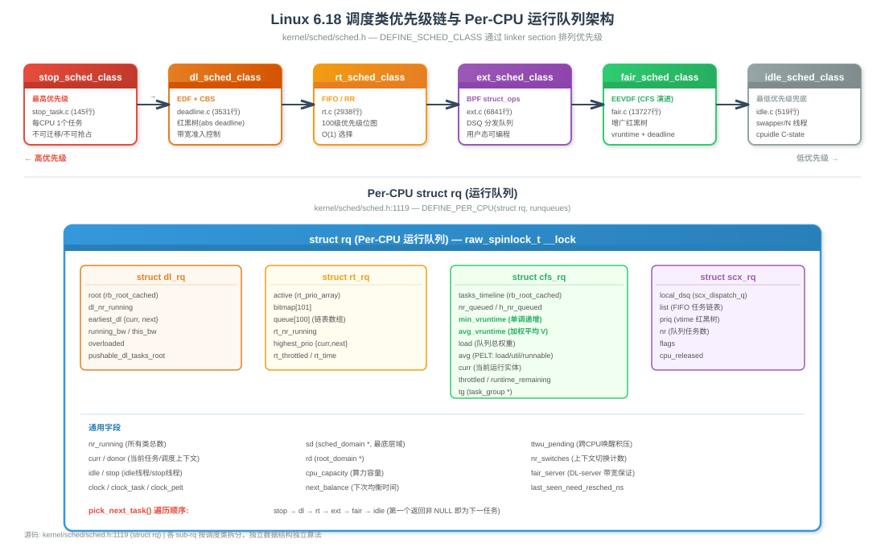
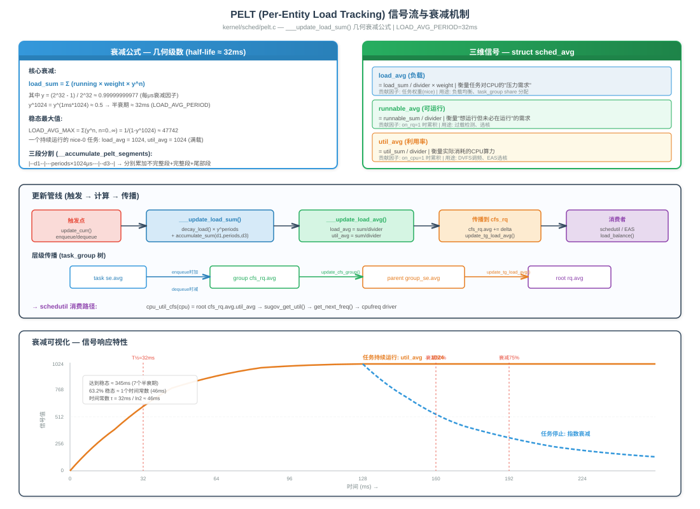
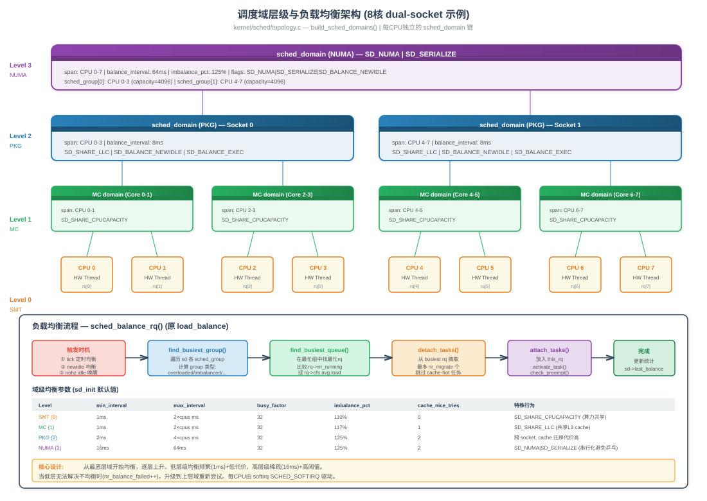
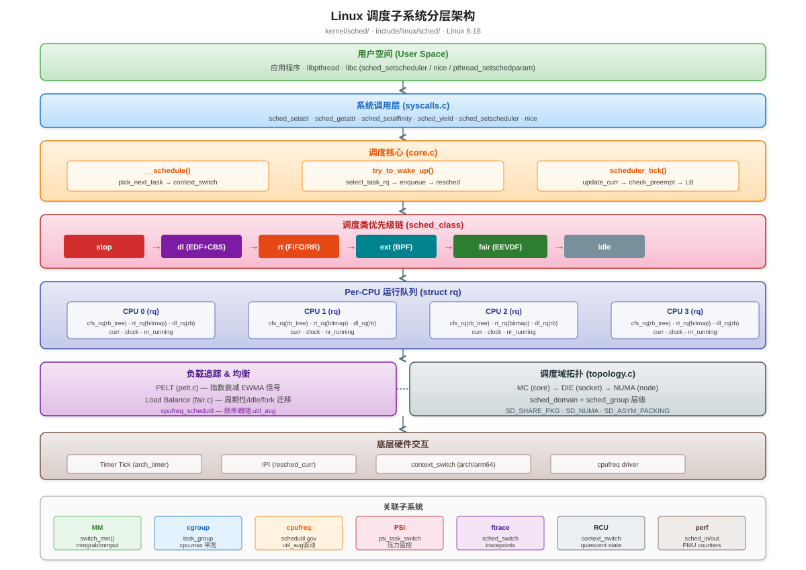
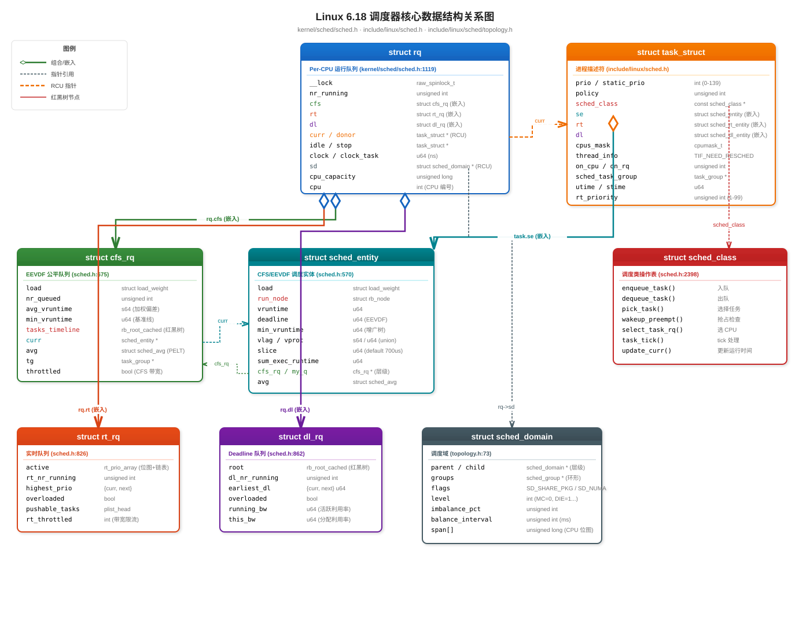
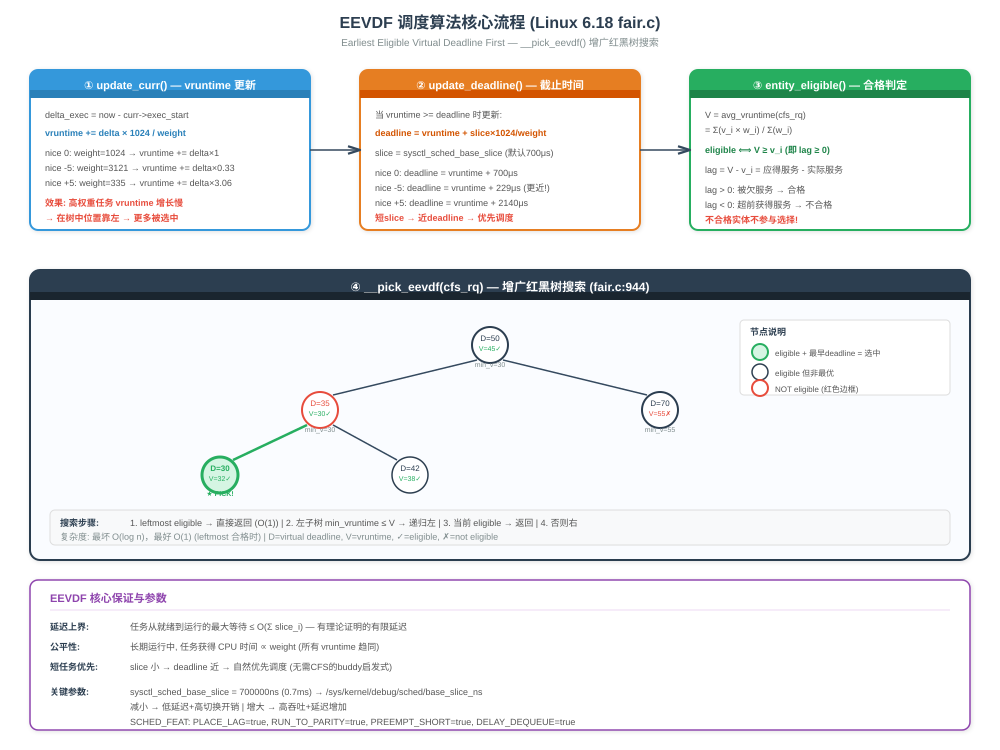

基于kernel/sched/目录及include/linux/sched/头文件，按功能模块组织，方便系统性学习。
文件: kernel/sched/Makefile（约 40 行）
调度子系统的 Makefile 采用三段式编译策略，将 35000+ 行代码划分为 4 个编译单元：
# kernel/sched/Makefile 关键部分
# 禁用 KCOV/KCSAN（调度路径噪声太大，非输入敏感）
KCOV_INSTRUMENT := n
KCSAN_SANITIZE := n
KCSAN_INSTRUMENT_BARRIERS := y # 但保留 barrier 插桩（避免假阳性）
# 保留帧指针用于 WCHAN（ps 显示进程阻塞在哪个函数）
ifneq ($(CONFIG_SCHED_OMIT_FRAME_POINTER),y)
CFLAGS_core.o := $(PROFILING) -fno-omit-frame-pointer
endif
# 禁用 branch profiling（非 noinstr 安全）
ifdef CONFIG_TRACE_BRANCH_PROFILING
CFLAGS_build_policy.o += -DDISABLE_BRANCH_PROFILING
CFLAGS_build_utility.o += -DDISABLE_BRANCH_PROFILING
endif
# 四个编译单元，体量接近，并行编译效率最优
obj-y += core.o # ~10930 行，调度核心
obj-y += fair.o # ~13727 行，CFS/EEVDF 公平调度
obj-y += build_policy.o # ~聚合 8+ 个策略文件
obj-y += build_utility.o # ~聚合 15+ 个工具文件设计哲学:
| 设计决策 | 原因 |
|---|---|
core.c 独立编译 |
10930 行，修改频率高，独立增量编译快 |
fair.c 独立编译 |
13727 行，最大文件，算法复杂度高 |
| 其余文件 Unity Build | 聚合编译摊销头文件解析开销（sched.h 有 3907 行） |
| 4 个单元体量均衡 | 并行 make -j4 时各核完成时间接近 |
-fno-omit-frame-pointer |
仅限 core.o，保证 /proc/ 正确 |
| 禁用 KCOV/KCSAN | 调度路径产生大量非确定性覆盖率/竞态数据 |
关于 WCHAN:
/proc/ 显示进程阻塞在哪个内核函数。调度器是所有进程进入睡眠的必经之路（schedule() → __schedule()），如果省略帧指针，栈回溯将无法正确展开，导致 ps 的 WCHAN 列显示错误。
文件: kernel/sched/build_policy.c
这个文件用 #include "xxx.c" 方式将调度策略相关源文件聚合为单一编译单元：
/* kernel/sched/build_policy.c — 关键结构 */
/* === 公共头文件（只解析一次，所有 .c 共享） === */
#include <linux/sched/clock.h>
#include <linux/sched/cputime.h>
#include <linux/sched/hotplug.h>
#include <linux/sched/isolation.h>
#include <linux/sched/posix-timers.h>
#include <linux/sched/rt.h>
#include <linux/cpuidle.h>
#include <linux/livepatch.h>
/* ... 约 20 个系统头文件 ... */
/* 内部头文件 */
#include "sched.h" /* 调度器核心数据结构（3907 行） */
#include "smp.h" /* SMP 内部声明 */
#include "autogroup.h" /* 自动分组 */
#include "stats.h" /* schedstat 统计 */
#include "pelt.h" /* PELT 负载追踪 */
/* === 源文件聚合（顺序有依赖关系） === */
#include "idle.c" /* idle 调度类 — 最简单，无外部依赖 */
#include "rt.c" /* RT 调度类 (FIFO/RR) */
#include "cpudeadline.c" /* DL CPU 选择堆 — deadline.c 的前置依赖 */
#include "pelt.c" /* PELT 负载追踪算法 */
#include "cputime.c" /* CPU 时间记账 */
#include "deadline.c" /* Deadline 调度类 (EDF+CBS) */
#ifdef CONFIG_SCHED_CLASS_EXT
# include "ext_internal.h" /* sched_ext 内部常量 */
# include "ext.c" /* sched_ext 主实现 */
# include "ext_idle.c" /* sched_ext 空闲 CPU 策略 */
#endif
#include "syscalls.c" /* 调度相关系统调用入口 */包含顺序的依赖关系:
cpudeadline.c ──→ deadline.c (DL CPU 选择需要 cpudl 结构)
pelt.c ──→ deadline.c, rt.c (负载追踪被 DL/RT 的 update_curr 调用)
idle.c ──→ 独立 (最简单的调度类)Unity Build 的性能收益:
典型 ARM64 defconfig 编译数据（参考值）:
文件: kernel/sched/build_utility.c
聚合工具性质的源文件 — 这些不是调度策略核心，但提供时钟、统计、拓扑、同步等辅助功能：
/* kernel/sched/build_utility.c — 源文件聚合 */
/* 无条件包含 */
#include "clock.c" /* 调度器时钟稳定化 (508 行) */
#include "debug.c" /* debugfs 接口 */
#include "loadavg.c" /* /proc/loadavg 计算 */
#include "completion.c" /* 完成量同步原语 */
#include "swait.c" /* 简单等待队列 (RT-safe) */
#include "wait_bit.c" /* 位等待队列 */
#include "wait.c" /* 通用等待队列 */
#include "cpupri.c" /* RT CPU 优先级位图 */
#include "stop_task.c" /* stop 调度类 */
#include "topology.c" /* 调度域构建 */
/* 条件编译 */
#ifdef CONFIG_CGROUP_CPUACCT
# include "cpuacct.c" /* cpuacct cgroup 控制器 */
#endif
#ifdef CONFIG_CPU_FREQ
# include "cpufreq.c" /* 调度器-cpufreq 钩子 */
#endif
#ifdef CONFIG_CPU_FREQ_GOV_SCHEDUTIL
# include "cpufreq_schedutil.c" /* schedutil 调频策略 */
#endif
#ifdef CONFIG_SCHEDSTATS
# include "stats.c" /* schedstat 统计 */
#endif
#ifdef CONFIG_SCHED_CORE
# include "core_sched.c" /* SMT 安全调度 */
#endif
#ifdef CONFIG_PSI
# include "psi.c" /* 压力失速信息 */
#endif
#ifdef CONFIG_MEMBARRIER
# include "membarrier.c" /* membarrier 系统调用 */
#endif
#ifdef CONFIG_CPU_ISOLATION
# include "isolation.c" /* CPU 隔离 */
#endif
#ifdef CONFIG_SCHED_AUTOGROUP
# include "autogroup.c" /* TTY 自动分组 */
#endif条件编译的设计意图:
| 配置项 | 默认值 | 场景 |
|---|---|---|
CONFIG_CGROUP_CPUACCT |
y (桌面/服务器) | 容器 CPU 记账 |
CONFIG_CPU_FREQ |
y (移动/笔记本) | 动态调频支持 |
CONFIG_CPU_FREQ_GOV_SCHEDUTIL |
y | PELT 驱动调频 |
CONFIG_SCHEDSTATS |
n (性能关键系统) | 开发调试用 |
CONFIG_SCHED_CORE |
y (云服务器) | SMT 侧信道防护 |
CONFIG_PSI |
y | 内存/CPU/IO 压力监控 |
CONFIG_MEMBARRIER |
y | 高性能用户态 RCU |
CONFIG_CPU_ISOLATION |
y | 实时/低延迟场景 |
CONFIG_SCHED_AUTOGROUP |
y (桌面) | 桌面交互性优化 |
编译单元文件数量统计:
| 编译单元 | 行数 | 无条件文件 | 条件文件 | 总计 |
|---|---|---|---|---|
core.o |
10930 | 1 | 0 | 1 |
fair.o |
13727 | 1 | 0 | 1 |
build_policy.o |
~11000 | 7 | 1 (ext) | 8 |
build_utility.o |
~10000 | 10 | 9 | 19 |
| 总计 | ~45000+ | 19 | 10 | 29 |
core_sched.c |
CONFIG_SCHED_CORE |
|||
psi.c |
CONFIG_PSI |
|||
membarrier.c |
CONFIG_MEMBARRIER |
|||
isolation.c |
CONFIG_CPU_ISOLATION |
|||
autogroup.c |
CONFIG_SCHED_AUTOGROUP |
文件: kernel/sched/sched.h（3907 行）
调度子系统的"大脑"，所有 kernel/sched/*.c 文件通过 #include "sched.h" 共享其定义。这个文件不对外导出（不在 include/ 下），是调度子系统私有的内部接口。
核心数据结构定义位置:
| 结构体 | 行号 | 说明 |
|---|---|---|
struct cfs_rq |
~675 | CFS/EEVDF 运行队列 |
struct rt_rq |
~826 | RT 优先级数组 |
struct dl_rq |
~862 | DL 红黑树 |
struct rq |
1119 | Per-CPU 运行队列（总控） |
struct sched_class |
2398 | 调度类虚函数表 |
重要内联辅助函数（热路径零开销调用）:
/* 获取本 CPU 的 rq（编译期常量地址） */
#define cpu_rq(cpu) (&per_cpu(runqueues, cpu))
#define this_rq() this_cpu_ptr(&runqueues)
/* 调度类优先级比较（利用链接器 section 地址排序） */
static inline bool sched_class_above(const struct sched_class *a,
const struct sched_class *b)
{
return a < b; /* section 地址越小 = 优先级越高 */
}
/* DEFINE_SCHED_CLASS 宏 — 利用 linker section 实现优先级链 */
#define DEFINE_SCHED_CLASS(name) \
const struct sched_class name##_sched_class \
__aligned(__alignof__(struct sched_class)) \
__section("__" #name "_sched_class")设计特点:
static inline 避免函数调用开销__cacheline_aligned 用于避免 false sharing（如 rq->clock_task）CONFIG_* 条件编译裁剪不需要的字段（嵌入式可大幅缩减 struct rq 体积）raw_spinlock_t 用于 rq 锁（RT 内核下不转为 mutex，保证调度路径无递归）文件: kernel/sched/core.c（10930 行，最核心文件）
这是整个内核中最关键的文件之一。所有任务状态转换、上下文切换、唤醒逻辑的总入口都在此。
函数定位索引（按功能分组）:
| 函数 | 行号 | 职责 | 调用频率 |
|---|---|---|---|
__schedule() |
6784 | 主调度逻辑 | 极高（每次调度） |
schedule() |
6910+ | 公开调度入口 | 每次 sleep/yield |
try_to_wake_up() |
4143 | 唤醒任务 | 极高（每次 wake） |
context_switch() |
5269 | 上下文切换 | 每次任务切换 |
scheduler_tick() |
~5700 | tick 处理 | 每 tick (4ms@250HZ) |
sched_fork() |
~4500 | fork 时初始化 | 每次 fork |
wake_up_new_task() |
~4700 | 新任务首次入队 | 每次 fork |
pick_next_task() |
~6000 | 选择下一任务 | 每次调度 |
set_cpus_allowed_ptr() |
~9200 | 设置亲和性 | 用户调用 |
preempt_schedule() |
~7000 | 内核抢占入口 | 抢占点 |
__schedule() 源码核心逻辑 (line 6784):
static void __sched notrace __schedule(int sched_mode)
{
struct task_struct *prev, *next;
bool preempt = sched_mode > SM_NONE; /* SM_PREEMPT / SM_RTLOCK_WAIT */
struct rq *rq;
int cpu;
cpu = smp_processor_id();
rq = cpu_rq(cpu);
prev = rq->curr;
/* 1. 调试检查 + livepatch 回调 */
schedule_debug(prev, preempt);
klp_sched_try_switch(prev);
/* 2. 关中断 + RCU 静止状态通知 */
local_irq_disable();
rcu_note_context_switch(preempt); /* 推进 RCU 宽限期 */
/* 3. 获取 rq 锁 + 更新时钟 */
rq_lock(rq, &rf);
smp_mb__after_spinlock(); /* 配合 signal_pending 的内存序 */
update_rq_clock(rq); /* 读取硬件时钟更新 rq->clock */
/* 4. 处理 prev 任务状态 */
if (sched_mode == SM_IDLE) {
/* Idle 模式：如果 rq 为空则保持 idle */
if (!rq->nr_running && !scx_enabled()) {
next = prev; goto picked;
}
} else if (!preempt && prev_state) {
/* 非抢占 + prev 非 RUNNING → 尝试出队 */
try_to_block_task(rq, prev, &prev_state, !task_is_blocked(prev));
}
/* 5. 选择下一个任务 (核心决策) */
next = pick_next_task(rq, rq->donor, &rf);
/* 6. 上下文切换 */
if (likely(prev != next)) {
rq->nr_switches++;
rq->curr = next;
context_switch(rq, prev, next, &rf); /* 不返回（切换到 next） */
}
/* 如果 prev == next，释放锁继续运行 */
}关键设计点:
SM_NONE = 主动调度（sleep/yield），SM_PREEMPT = 抢占调度，SM_IDLE = idle 循环调度smp_mb__after_spinlock() 确保 signal_pending_state() 与 set_current_state() 的正确排序pick_next_task() 是调度决策的核心——遍历调度类优先级链donor 和 curr 分离，用于优先级继承场景try_to_wake_up() 关键内存序 (line 4143):
int try_to_wake_up(struct task_struct *p, unsigned int state, int wake_flags)
{
/* 特殊路径：唤醒自己（无需锁） */
if (p == current) {
ttwu_do_wakeup(p);
goto out;
}
/* 获取 pi_lock（保护优先级继承链） */
scoped_guard(raw_spinlock_irqsave, &p->pi_lock) {
smp_mb__after_spinlock();
/* 检查状态是否匹配 */
if (!ttwu_state_match(p, state, &success))
break;
/* 关键内存序：先读 state 再读 on_rq */
smp_rmb();
if (READ_ONCE(p->on_rq) && ttwu_runnable(p, wake_flags))
break; /* 已在 rq 上，直接唤醒 */
/* p 不在 rq 上 → 需要入队 */
smp_acquire__after_ctrl_dep(); /* control dependency acquire */
WRITE_ONCE(p->__state, TASK_WAKING);
/* 选择目标 CPU */
cpu = select_task_rq(p, p->wake_cpu, wake_flags);
/* 入队到目标 rq（可能跨 CPU） */
ttwu_queue(p, cpu, wake_flags);
}
}内存序要点（面试高频）:
smp_rmb() 保证 p->state 的读在 p->on_rq 之前（防止错误地认为 p 不在 rq）smp_acquire__after_ctrl_dep() 确保 schedule() 的 deactivate_task() 对 wake 端可见schedule() 中的 smp_mbafter_spinlock() 配对文件: kernel/sched/features.h
通过 debugfs (/sys/kernel/debug/sched/features) 动态控制的调度行为开关。底层通过 static_branch（jump label）实现，开启/关闭零运行时开销。
完整特性列表 (Linux 6.18.1):
| 特性 | 默认 | 说明 | 影响 |
|---|---|---|---|
PLACE_LAG |
true | 唤醒时恢复 lag（保持跨 sleep 公平性） | EEVDF 放置策略 #1 |
PLACE_DEADLINE_INITIAL |
true | 新任务给半个 slice 的 deadline 缓冲 | 减少新任务延迟 |
PLACE_REL_DEADLINE |
true | 迁移时保持相对 deadline | 跨 CPU 公平性 |
RUN_TO_PARITY |
true | 抑制抢占直到当前任务达到 0-lag 或用完 slice | 减少切换次数 |
PREEMPT_SHORT |
true | 短 slice 任务可取消 RUN_TO_PARITY 保护 | 短任务延迟优化 |
NEXT_BUDDY |
false | 唤醒失败时记住 next 候选 | 缓存局部性 |
PICK_BUDDY |
true | 允许 pick 时考虑 buddy 提示 | 与 NEXT_BUDDY 配合 |
CACHE_HOT_BUDDY |
true | buddy 任务视为 cache-hot | 减少不必要迁移 |
DELAY_DEQUEUE |
true | 延迟出队非合格任务（让其烧掉负 lag） | EEVDF 核心机制 |
DELAY_ZERO |
true | 出队/唤醒时 clip lag 到 0 | 防止 lag 无限累积 |
运行时查看与修改:
# 查看所有特性状态
cat /sys/kernel/debug/sched/features
# 输出: PLACE_LAG PLACE_DEADLINE_INITIAL RUN_TO_PARITY ...
# NO_NEXT_BUDDY (表示 NEXT_BUDDY 关闭)
# 关闭 RUN_TO_PARITY（允许更积极的抢占）
echo NO_RUN_TO_PARITY > /sys/kernel/debug/sched/features
# 开启 NEXT_BUDDY
echo NEXT_BUDDY > /sys/kernel/debug/sched/featuresstatic_branch 实现原理:
/* kernel/sched/sched.h */
#define sched_feat(x) static_branch_##x(&sched_feat_keys[__SCHED_FEAT_##x])
/* 编译时生成 NOP 指令，运行时通过修改代码段来开关 */
/* 关闭时 = 跳转（分支预测友好），开启时 = 直通 */文件: kernel/sched/smp.h
跨 CPU 唤醒是调度器中最复杂的路径之一，smp.h 声明了 SMP 唤醒的内部接口：
/* kernel/sched/smp.h 核心接口 */
/* 处理远程 CPU 积压的唤醒请求 */
extern void sched_ttwu_pending(void *arg);
/* 机制说明:
* try_to_wake_up() 跨 CPU 唤醒时不直接获取远程 rq 锁（避免竞争）
* 而是将任务放入远程 CPU 的 wake_list，然后发送 IPI
* 远程 CPU 在 IPI handler 或 scheduler_tick 中调用 sched_ttwu_pending()
* 批量处理 wake_list 中所有待唤醒任务
*/ttwu (try_to_wake_up) 跨 CPU 路径:
CPU 0 (唤醒者) CPU 1 (被唤醒任务所在)
───────────────── ─────────────────────
try_to_wake_up(p)
→ p 应放在 CPU 1
→ ttwu_queue(p, cpu=1)
→ llist_add(&p->wake_entry,
&cpu_rq(1)->ttwu_list)
→ send_call_function_single_ipi(1)
← 收到 IPI
sched_ttwu_pending()
→ 遍历 ttwu_list
→ ttwu_do_activate(p)
→ enqueue_task(p)
→ wakeup_preempt(p)设计优势:
ttwu_queue_cond 判断是否值得发 IPI）nohz_full 配合减少对隔离 CPU 的干扰Linux 6.18 中有 6 个调度类（含 sched_ext），通过链接器 section 排列形成优先级链。每个类实现struct sched_class虚函数表。
调度类优先级链与 Per-CPU rq 架构图

内核在 sched_init() 中用 BUG_ON() 硬性校验优先级链（kernel/sched/core.c:8649）：
/* sched_init() — 启动时校验链接器排列正确 */
BUG_ON(!sched_class_above(&stop_sched_class, &dl_sched_class));
BUG_ON(!sched_class_above(&dl_sched_class, &rt_sched_class));
BUG_ON(!sched_class_above(&rt_sched_class, &fair_sched_class));
BUG_ON(!sched_class_above(&fair_sched_class, &idle_sched_class));这个优先级链不是随意设计的，而是反映了不同类别任务对确定性的需求层级：
优先级 调度类 核心需求 典型延迟要求
━━━━━━━━━━━━━━━━━━━━━━━━━━━━━━━━━━━━━━━━━━━━━━━━━━━━━━━━━━━━━━
最高 ──→ stop 绝对独占，不可打断 0（立即执行）
│ deadline 硬实时，截止时间保证 µs ~ ms 级
│ rt 软实时，固定优先级 ms 级
│ fair(EEVDF) 公平共享，交互响应 ms ~ 数十ms
最低 ──→ idle 无任务时的占位符 无要求为什么是这个顺序？
| 排序理由 | 解释 |
|---|---|
| stop 必须最高 | 它服务于内核自身的基础设施（CPU 热插拔、代码热修补），如果被抢占会导致系统不一致 |
| deadline 高于 rt | DL 有准入控制（admission control），数学可证明不会过载；RT 没有准入控制，可能无限抢占 |
| rt 高于 fair | 实时任务的确定性需求高于普通任务的公平性需求 |
| fair 高于 idle | 只要有任何一个普通任务就绪，idle 就不应该运行 |
（一）stop 调度类 — 内核的"原子操作执行器"
核心实现意义：stop 类是内核用来执行需要独占 CPU 的不可打断操作的机制。每个 CPU 上有且仅有一个 stop 任务（即 migration/N 内核线程），它通过 stop_machine() 和 cpu_stopper 框架被激活。
为什么需要它？ 某些内核操作必须在目标 CPU 上执行，并且执行期间不能有任何其他任务被调度。比如把一个正在运行的任务从 CPU 上迁走——你不能从远程 CPU 直接操作正在运行的任务的栈和寄存器。
关键设计约束（全部通过 BUG() 强制）：
yield_task_stop() → BUG() // 不允许让出 CPU — 必须执行完
switched_to_stop() → BUG() // 不允许运行时切换到 stop 类
prio_changed_stop() → BUG() // 没有优先级概念
select_task_rq_stop() → return task_cpu(p) // 永不迁移实际场景清单（基于 core.c 中对 stop_one_cpu() 的调用）：
| 场景 | 调用路径 | 为什么必须用 stop？ |
|---|---|---|
| active balance 任务迁移 | migration_cpu_stop() |
需要停住源 CPU 才能安全 dequeue 正在运行的任务 |
| set_cpus_allowed 亲和性修改 | __set_cpus_allowed_ptr() → stop_one_cpu() |
目标任务可能正在运行，需要在其 CPU 上原子修改 |
| CPU 热插拔下线 | __balance_push_cpu_stop() |
必须把该 CPU 上所有可运行任务清空 |
| ftrace 动态代码修补 | stop_machine() |
修改正在执行的代码需要所有 CPU 暂停 |
| 内核模块卸载 | stop_machine() |
确保模块代码不在任何 CPU 的执行路径上 |
| CPU 微码更新 | stop_machine() |
更新 CPU 固件需要原子化 |
面试要点：migration/N 线程不是用来做负载均衡的（负载均衡在 softirq 中完成），而是用来执行"需要在目标 CPU 上原子完成"的操作。
（二）deadline 调度类 — 唯一有准入控制的实时调度类
核心实现意义：DL 类基于 EDF（最早截止时间优先）+ CBS（恒定带宽服务器）算法，是 Linux 中唯一能提供数学可证明的调度保证的调度类。与 RT 类的关键区别：DL 有准入控制（admission control），RT 没有。
准入控制的实现（kernel/sched/deadline.c:213）：
static inline bool
__dl_overflow(struct dl_bw *dl_b, unsigned long cap, u64 old_bw, u64 new_bw)
{
return dl_b->bw != -1 &&
cap_scale(dl_b->bw, cap) < dl_b->total_bw - old_bw + new_bw;
}
/* 如果 ΣU = Σ(runtime/period) > CPU 总容量 → 返回 -EBUSY 拒绝 */为什么准入控制这么重要？
sched_setattr() 直接返回 -EBUSY三参数模型（用户通过 sched_setattr() 设置）：
┌───────────────────── period (周期) ─────────────────────┐
│ │
│ ┌── runtime ──┐ ┌── runtime ──┐ │
│ │ 执行预算 │ │ 下个周期 │ │
│ └─────────────┘ └─────────────┘ │
│ ↑ ↑ │
│ release deadline │
│ (必须在此前完成) │
└──────────────────────────────────────────────────────────┘
利用率 U = runtime / period (例如 5ms / 20ms = 25%)CBS 带宽补充机制（防止任务占用超额带宽）：
/* dl_task_timer() — hrtimer 回调 */
/* 当 runtime 耗尽时，任务被 throttle（暂停） */
/* 定时器到期后：补充 runtime、推迟 deadline 到下个周期、重新入队 */
dl_se->runtime = dl_se->dl_runtime;
dl_se->deadline += dl_se->dl_period;dl_server：6.x 的重大创新 — DL 为 CFS 提供带宽保证
Linux 6.x 引入了 dl_server 机制（kernel/sched/fair.c:8965），让 DL 类作为 CFS 任务的"带宽服务器"：
/* fair.c:8965 — 初始化 fair_server */
void fair_server_init(struct rq *rq)
{
struct sched_dl_entity *dl_se = &rq->fair_server;
init_dl_entity(dl_se);
dl_server_init(dl_se, rq, fair_server_pick_task);
}为什么需要 dl_server？ 当系统中有大量 RT 任务（优先级高于 CFS）时，CFS 任务可能被完全饿死。dl_server 在 DL 层级为 CFS 预留了一块带宽，即使 RT 任务很多，CFS 也能获得最低保障执行时间。
update_curr() 中的关键逻辑：
if (dl_server_active(&rq->fair_server))
dl_server_update(&rq->fair_server, delta_exec);
/* CFS 任务的执行时间会记账到 fair_server 的 DL 预算中 */实际场景清单：
| 场景 | 三参数设置示例 | 说明 |
|---|---|---|
| 工业控制环路 | runtime=1ms, period=10ms, deadline=10ms | 100Hz 控制频率，10% CPU |
| 视频编码帧处理 | runtime=5ms, period=33ms, deadline=30ms | 30fps，每帧有 30ms 截止 |
| 5G 基站 TTI 处理 | runtime=0.5ms, period=1ms, deadline=1ms | 1ms TTI，50% CPU |
| 汽车 ADAS 传感器融合 | runtime=3ms, period=20ms, deadline=15ms | 50Hz 传感器，15% CPU |
| 音频 DSP 处理 | runtime=2ms, period=5ms, deadline=5ms | 200Hz，40% CPU |
| dl_server 保底 | runtime=5ms, period=100ms | 保证 CFS 任务至少获得 5% CPU |
面试要点：面试官问"RT 和 DL 有什么区别"，最核心的回答是准入控制。RT 给你绝对优先级但不管过载；DL 在接受时就确保不过载，所以能提供数学保证。
（三）rt 调度类 — 固定优先级的软实时调度
核心实现意义：RT 类提供 100 个固定优先级等级（0-99），实现 SCHED_FIFO（先来先服务，不主动让出就一直运行）和 SCHED_RR（轮转，相同优先级之间时间片轮转）。它的算法极其简单——永远选最高优先级的就绪任务。
O(1) 选择的硬件级实现（kernel/sched/rt.c:1665）：
static struct sched_rt_entity *pick_next_rt_entity(struct rt_rq *rt_rq)
{
idx = sched_find_first_bit(array->bitmap); /* ARM64: CLZ 指令，1 个时钟周期 */
/* 100 位的位图 → 找到最高优先级的非空队列 */
return list_entry(array->queue[idx].next, ...); /* 取队列头 */
}RT 带宽限流 — 防止 RT 任务饿死系统
RT 类最大的问题是没有准入控制——任何人都可以用 sched_setscheduler() 把任务设为 SCHED_FIFO:99。如果这个任务是死循环，整个 CPU 就被锁死了。内核通过带宽限流来缓解：
默认配置：
sched_rt_period_us = 1000000 (1 秒)
sched_rt_runtime_us = 950000 (0.95 秒)
含义：每 1 秒内，RT 任务最多运行 0.95 秒，剩余 0.05 秒强制让给 CFS
→ 即使 RT 任务死循环，系统至少有 5% CPU 可用于 shell/ssh 排障FIFO vs RR 的实现差异：
/* task_tick_rt() — tick 到来时的处理 */
static void task_tick_rt(struct rq *rq, struct task_struct *p, int queued)
{
if (p->policy != SCHED_RR)
return; /* FIFO：tick 不做任何事，任务永远运行 */
if (--p->rt.time_slice)
return; /* RR：时间片未耗尽，继续 */
/* RR 时间片耗尽 → 重填 + 放到同优先级队列尾部 */
p->rt.time_slice = sched_rr_timeslice; /* 默认 100ms */
list_move_tail(&p->rt.run_list, ...); /* 队尾 */
resched_curr(rq); /* 触发重调度 */
}Push/Pull 多核均衡：
场景：CPU0 有 prio=99 和 prio=50 两个 RT 任务，CPU1 空闲
→ push_rt_task(): 将 prio=50 推送到 CPU1
→ 利用 cpupri 位图 O(1) 找到"当前运行优先级最低"的 CPU
场景：CPU0 的 prio=99 任务结束，CPU1 有 prio=80 任务等待
→ pull_rt_task(): 从 CPU1 拉取 prio=80 到 CPU0实际场景清单：
| 场景 | 策略/优先级 | 说明 |
|---|---|---|
| IRQ 线程化 | SCHED_FIFO:50 | 中断下半部在内核线程中执行（PREEMPT_RT 补丁集） |
| cyclictest 延迟测试 | SCHED_FIFO:80 | 测量系统最坏调度延迟 |
| 音频服务 (PulseAudio/PipeWire) | SCHED_FIFO:50-60 | 防止音频卡顿（buffer underrun） |
| 数据库 WAL 写入线程 | SCHED_FIFO:40 | 保证事务日志及时刷盘 |
| 实时视频采集 | SCHED_RR:70 | 多个摄像头线程轮转共享 CPU |
| 看门狗 (watchdog/N) | SCHED_FIFO:99 | 内核软锁检测，最高 RT 优先级 |
| RCU callback 处理 | SCHED_FIFO:1 | 低优先级但必须及时处理 |
面试要点：RT 类的带宽限流是安全网而非设计目标。正确使用 RT 应该设计好优先级层次，而不是依赖 5% 的保底。如果需要严格保证，应该用 SCHED_DEADLINE。
（四）fair 调度类 — EEVDF 公平调度，Linux 的"默认人格"
核心实现意义：fair 类处理系统中 99% 的任务。从 Linux 6.6 开始，算法从经典 CFS（vruntime 最小者优先）演进为 EEVDF（最早合格虚拟截止时间优先），在公平性之上增加了延迟保证。
EEVDF 相比 CFS 解决了什么问题？
经典 CFS 的缺陷：
EEVDF 的解决方案：
se->deadline = se->vruntime + slice/weight）entity_eligible() 检查 lag ≥ 0/* entity_eligible() 的数学含义 (fair.c:738) */
/* lag_i = S - s_i = w_i * (V - v_i)
* V = 加权平均 vruntime（队列整体进度）
* v_i = 任务 i 的 vruntime（个体进度）
* lag ≥ 0 → 任务落后于整体 → 有权获得 CPU → 合格 (eligible)
* lag < 0 → 任务超前于整体 → 无权获得 CPU → 不合格
*/
int entity_eligible(struct cfs_rq *cfs_rq, struct sched_entity *se)
{
return vruntime_eligible(cfs_rq, se->vruntime);
}
/* update_deadline() 的核心公式 (fair.c:1041) */
/* EEVDF: vd_i = ve_i + r_i / w_i
* ve_i = 当前 vruntime
* r_i = slice (默认 0.7ms × (1+ilog(ncpus)))
* w_i = weight (由 nice 值决定)
*/
se->deadline = se->vruntime + calc_delta_fair(se->slice, se);增广红黑树搜索 — O(log n) 找到最佳任务：
__pick_eevdf() 在红黑树中搜索：
1. 先看最左节点（vruntime 最小），如果 eligible → 直接选它 (O(1) 命中)
2. 否则利用增广信息（每个节点的 min_vruntime）剪枝搜索
3. 找到 "eligible 且 deadline 最早" 的实体
增广信息的剪枝效果：
如果某子树的 min_vruntime > V → 整个子树没有 eligible 实体 → 跳过
实测大部分情况下 1-3 步即完成，远好于 O(log n) 最坏情况三种用户态调度策略在 fair 类中的差异：
| 策略 | nice 范围 | 特殊行为 | 场景 |
|---|---|---|---|
SCHED_NORMAL |
-20 ~ +19 | 标准 EEVDF，tick 抢占检查 | 99% 的普通进程 |
SCHED_BATCH |
-20 ~ +19 | 禁止唤醒抢占（wakeup_preempt 不设置 TIF_NEED_RESCHED） |
编译、数据处理、批量任务 |
SCHED_IDLE (策略) |
— | weight 极低（3，对比 nice 0 的 1024） | 后台索引、备份、低优先级守护进程 |
注意：SCHED_IDLE 策略在 fair 类中执行（用极低权重），和 idle 调度类完全不同。
这三个概念常被混淆，但它们不是平面并列关系，而是两层分流：p->prio 决定走哪个调度类，进入 CFS 之后 nice 和 weight 才起作用。
__normal_prio()kernel/sched/syscalls.c:19 是三者交汇点：
static inline int __normal_prio(int policy, int rt_prio, int nice)
{
if (dl_policy(policy))
return MAX_DL_PRIO - 1; // DEADLINE: 固定 -1
if (rt_policy(policy))
return MAX_RT_PRIO - 1 - rt_prio; // RT: 由 rt_priority 决定
return NICE_TO_PRIO(nice); // CFS: 由 nice 决定
}关键：任何一种调度策略，nice 和 rt_priority 互斥——只看其中一个，绝不同时生效。
p->prio (0~139) ← ★ 决定走哪个调度类
│
┌────────┼────────┐
▼ ▼ ▼
DEADLINE RT(0-99) CFS(100-139)
(固定) 严格抢占 │
▼
nice → weight → vruntime 增速 → CPU 份额
★ 决定"在 CFS 队里吃几口"
| priority (p->prio) | nice | weight | |
|---|---|---|---|
| 值域 | -1 ~ 139 | -20 ~ +19 | 15 ~ 88761 |
| 用户可设？ | RT 策略通过 sched_priority 间接设CFS 不可直接设 | nice / renice 命令 | ❌ 不可直接设 |
| 面向谁 | 调度类选择器：决定走 stop/dl/rt/fair/ext/idle 哪个类 | 用户：表达"重要程度" | CFS 内部：数学计算 |
| 对 CFS 任务 | = 120 + nice | ✅ 唯一决定 CPU 份额 | = sched_prio_to_weight[nice+20] |
| 对 RT 任务 | 由 rt_priority 计算 (0~98) | ❌ 无效 | ❌ 无效 |
| 对 DL 任务 | 固定 -1 | ❌ 无效 | ❌ 无效 |
| 决定什么 | ① 走哪个调度类 ② RT 内部的优先级顺序 | CFS 的 CPU 时间比例 | vruntime 计算公式 |
nice = -5
│
├──→ static_prio = NICE_TO_PRIO(-5) = 120 + (-5) = 115
│ │
│ └──→ p->prio = 115 (> MAX_RT_PRIO=100) → fair_sched_class
│
└──→ weight = sched_prio_to_weight[-5+20] = sched_prio_to_weight[15] = 3121
│
└──→ vruntime 增量 = 物理时间 × (1024 / 3121) ≈ 物理时间 × 0.328
│
└──→ vr 涨得慢 → 红黑树左边 → 多拿 CPU能量感知调度（EAS）— 大小核异构系统的功耗优化：
/* find_energy_efficient_cpu() — 在 big.LITTLE / P-core+E-core 系统中 */
/* 选择 "完成任务所需能量最低" 的 CPU:
* - 小核功耗低但计算慢
* - 大核功耗高但计算快
* - EAS 综合考虑 capacity、utilization 和 energy model
* - 只在异构系统 (rd->pd != NULL) 且未过载时启用
*/NUMA 均衡集成：
CFS 内建 NUMA 感知任务放置（仅限 CONFIG_NUMA_BALANCING=y）:
1. 周期性扫描任务的内存页，标记为 PROT_NONE
2. 当任务访问被标记的页 → 触发 page fault → 记录 NUMA 节点亲和性
3. 如果任务大部分内存在远端节点 → 尝试迁移任务到该节点
4. 扫描频率自适应：共享页多 → 降低频率；私有页多 → 增加频率实际场景清单：
| 场景 | 策略 | 关键特性 | 说明 |
|---|---|---|---|
| Web 服务器请求处理 | SCHED_NORMAL | EEVDF 低延迟 | 每个请求快速获得 CPU |
| 桌面应用交互 | SCHED_NORMAL, nice 0 | 唤醒抢占 + slice 保护 | 鼠标/键盘事件立即响应 |
| 内核编译 make -j | SCHED_NORMAL, nice +10 | 公平分享 | 多个 gcc 进程均匀分配 CPU |
| CI/CD 构建任务 | SCHED_BATCH | 禁止唤醒抢占 | 减少上下文切换，提高吞吐 |
| 后台文件索引 | SCHED_IDLE 策略 | weight=3 | 只在 CPU 完全空闲时才运行 |
| 容器 CPU 配额 | SCHED_NORMAL + cgroup | CFS bandwidth control | cpu.max 限制 100ms 周期内最多用 N ms |
| 手机前台 App | SCHED_NORMAL + EAS | 能量感知 CPU 选择 | 在大小核间智能分配，平衡功耗和性能 |
| 数据库 OLTP | SCHED_NORMAL, nice -5 | NUMA 均衡 | 自动将线程迁移到数据所在的 NUMA 节点 |
面试要点：EEVDF 的核心优势是同时满足公平性和延迟保证。CFS 只保证公平，但一个刚唤醒的任务可能等很久；EEVDF 通过 eligible + deadline 机制，确保"欠了 CPU 时间的任务"能在有限时间内被调度。
（五）idle 调度类 — 系统"无事可做"时的电力管家
核心实现意义：idle 类不调度任何用户任务。它只运行每 CPU 的 idle 线程（swapper/N），负责在没有就绪任务时让 CPU 进入低功耗状态。它是调度器和 cpuidle 子系统的桥梁。
do_idle() 主循环（kernel/sched/idle.c:257）：
static void do_idle(void)
{
__current_set_polling(); /* 标记 idle 在 polling → 设置 need_resched 立即生效 */
tick_nohz_idle_enter(); /* 通知 NO_HZ：可能要停 tick 省电 */
while (!need_resched()) {
local_irq_disable();
if (cpu_is_offline(cpu))
arch_cpu_idle_dead(); /* CPU 被热移除 → 永不返回 */
arch_cpu_idle_enter();
rcu_nocb_flush_deferred_wakeup(); /* 清理 RCU 延迟唤醒 */
if (cpu_idle_force_poll || tick_check_broadcast_expired()) {
cpu_idle_poll(); /* 忙等待模式（低延迟场景） */
} else {
cpuidle_idle_call(); /* 正常路径：进入 C-state 省电 */
}
arch_cpu_idle_exit();
}
tick_nohz_idle_exit(); /* 恢复 tick */
__current_clr_polling(); /* 清除 polling 标记 */
}cpuidle C-state 选择：
idle.c → cpuidle_idle_call() → cpuidle governor 选择 C-state:
C-state 功耗 唤醒延迟 场景
━━━━━━━━━━━━━━━━━━━━━━━━━━━━━━━━━━━━━━━━
C0 (poll) 最高 ~0 低延迟服务器（idle=poll 内核参数）
C1 (halt) 中等 ~1-10µs 通用服务器
C2 (stop) 低 ~100µs 笔记本、桌面
C3+ (deep) 极低 ~1ms+ 移动设备、省电优先为什么 idle 类几乎所有回调都是空函数？
wakeup_preempt_idle() → 空（任何任务都能抢占 idle）
task_tick_idle() → 空（idle 不需要 tick 检查）
update_curr_idle() → 空（idle 不累计 vruntime）
select_task_rq_idle() → return task_cpu(p)（不迁移）因为 idle 不参与任何调度决策——它只是"所有真正调度类都说没有任务"时的兜底。
SCHED_IDLE 策略 vs idle 调度类 — 关键区分：
| 对比项 | SCHED_IDLE 策略 |
idle 调度类 |
|---|---|---|
| 所属调度类 | fair（CFS/EEVDF） | idle |
| 运行条件 | CFS 中 weight=3 的任务，只要 eligible 就能运行 | 只有所有调度类都无就绪任务才运行 |
| 用户可设 | 是（sched_setscheduler()） |
否（内核内部使用） |
| 任务类型 | 用户进程/线程 | swapper/N 内核线程 |
| 能否被普通任务抢占 | 可以（weight 极低，很快就不 eligible） | 任何就绪任务立即抢占 |
| 典型使用 | SCHED_IDLE 策略的后台任务 |
无任务时 CPU 省电 |
实际场景清单：
| 场景 | 特性 | 说明 |
|---|---|---|
| 服务器节能 | C1/C2 state | 空闲核心自动降频/休眠，降低数据中心电费 |
| 移动设备待机 | 深度 C-state | 手机屏幕关闭后 CPU 进入深度睡眠 |
| 低延迟交易系统 | idle=poll |
禁止进入 C-state，CPU 忙等待，微秒级唤醒 |
| NOHZ_FULL 隔离核 | 停 tick + idle | 被隔离的 CPU 无任务时进入 idle 并停止周期性 tick |
| CPU 热插拔 | arch_cpu_idle_dead() |
CPU 下线后 idle 线程调用此函数永不返回 |
用户态进程
│
├── sched_setattr(SCHED_DEADLINE, ...) ──→ deadline 类 (EDF+CBS)
│ │
│ ├── dl_server → 为 fair 类预留带宽
│ │
├── sched_setscheduler(SCHED_FIFO/RR, prio) ──→ rt 类 (优先级位图)
│ │
│ ├── rt_bandwidth → 防饿死 CFS
│ │
├── fork() / SCHED_NORMAL / SCHED_BATCH ──→ fair 类 (EEVDF)
│ └── SCHED_IDLE 策略也在这里 ────────┘ │
│ ├── EAS → 大小核功耗优化
│ ├── NUMA → 跨节点数据亲和
│ ├── cgroup → 容器 CPU 配额
│ │
│ ┌──── 所有类都没有就绪任务 ──────────────→ idle 类 → cpuidle → C-state 省电
│ │
内核 │ └── stop_machine() / 任务迁移 ──────────→ stop 类 → migration/N 线程跨类保护机制总结：
| 保护机制 | 实现方式 | 保护目标 |
|---|---|---|
| DL 准入控制 | __dl_overflow() 返回 -EBUSY |
防止 DL 任务过载导致 deadline miss |
| RT 带宽限流 | sched_rt_runtime_us / sched_rt_period_us |
防止 RT 任务饿死 CFS |
| dl_server | fair 类获得 DL 级别的带宽保留 | 防止 CFS 被 RT 完全饿死 |
| CFS bandwidth | cpu.max cgroup 控制 |
防止容器/用户组占用过多 CPU |
| idle 强制保底 | stop > dl > rt > fair > idle 严格优先级 | 保证有任务就不会空转 |
文件: kernel/sched/stop_task.c（145 行，最简单的调度类）
定位: 最高优先级，不可被任何其他调度类抢占。由 stop_machine 内核机制专用。
设计特点（从源码分析）:
/* 145 行文件揭示了极简设计哲学 */
static int select_task_rq_stop(struct task_struct *p, int cpu, int flags)
{
return task_cpu(p); /* 永不迁移！stop 任务绑定在创建它的 CPU */
}
static void wakeup_preempt_stop(struct rq *rq, struct task_struct *p, int flags)
{
/* 空函数 — 没有什么能抢占 stop 任务 */
}
static void yield_task_stop(struct rq *rq)
{
BUG(); /* stop 任务永远不应该 yield */
}
static void switched_to_stop(struct rq *rq, struct task_struct *p)
{
BUG(); /* 不可能切换到 stop 类（内部创建） */
}
static void prio_changed_stop(struct rq *rq, struct task_struct *p, int oldprio)
{
BUG(); /* 没有优先级概念 */
}
static struct task_struct *pick_task_stop(struct rq *rq)
{
if (!sched_stop_runnable(rq))
return NULL;
return rq->stop; /* 每个 CPU 只有一个 stop 任务 */
}使用场景:
| 场景 | 触发函数 | 说明 |
|---|---|---|
| CPU 热插拔 | stop_machine() |
安全地将任务从被移除的 CPU 迁出 |
| 负载均衡 active balance | migration_cpu_stop() |
强制迁移当前运行中的任务 |
| 内核模块卸载 | stop_machine() |
确保代码不再被执行 |
| ftrace 代码修补 | stop_machine() |
安全修改运行中的代码 |
对应内核线程: 每个 CPU 有一个 migration/N 线程即为 stop 任务（rq->stop）。
文件: kernel/sched/deadline.c（3531 行）
算法: EDF (Earliest Deadline First) + CBS (Constant Bandwidth Server)
核心数据结构:
struct dl_rq {
struct rb_root_cached root; /* 按绝对 deadline 排序的红黑树 */
unsigned int dl_nr_running; /* DL 就绪任务数 */
struct { u64 curr, next; } earliest_dl; /* 最早/次早 deadline */
bool overloaded; /* >1 个 DL 任务在此 CPU → 需要 push */
struct rb_root_cached pushable_dl_tasks_root; /* 可迁移的 DL 任务 */
u64 running_bw; /* Σ(runtime/period) 活跃利用率 */
u64 this_bw; /* 分配给此 CPU 的总带宽 */
};任务选择算法 (line 3095 附近的 pick_task_dl):
static struct task_struct *pick_task_dl(struct rq *rq)
{
struct dl_rq *dl_rq = &rq->dl;
struct rb_node *left = rb_first_cached(&dl_rq->root); /* O(1) 取最左 */
/* 最左 = 绝对 deadline 最早 = 最紧急 */
struct sched_dl_entity *dl_se = rb_entry(left, ...);
return dl_task_of(dl_se);
}带宽补充机制 (CBS 核心):
/* dl_task_timer() — hrtimer 回调，在 runtime 耗尽后触发 */
static enum hrtimer_restart dl_task_timer(struct hrtimer *timer)
{
struct sched_dl_entity *dl_se = container_of(timer, ...);
/* 补充 runtime */
dl_se->runtime = dl_se->dl_runtime;
/* 推迟 deadline 到下一个周期 */
dl_se->deadline += dl_se->dl_period;
/* 如果任务还在等待 → 重新入队 */
if (dl_se->dl_throttled) {
dl_se->dl_throttled = 0;
enqueue_task_dl(rq, p, ENQUEUE_REPLENISH);
}
}准入控制 (sched_setattr() 路径):
/* __dl_overflow() — 检查总带宽是否超出 */
static bool __dl_overflow(struct dl_bw *dl_b, unsigned long cap,
u64 old_bw, u64 new_bw)
{
return dl_b->bw - old_bw + new_bw > cap;
/* cap = CPU 总容量 × 全局 DL 带宽上限比例 */
}
/* 超出则返回 -EBUSY */Push/Pull 多核均衡:
cpudeadline.c 的最大堆实现文件: kernel/sched/rt.c（2938 行）
调度策略: SCHED_FIFO + SCHED_RR，100 个固定优先级等级 (0-99)
核心数据结构:
struct rt_prio_array {
DECLARE_BITMAP(bitmap, MAX_RT_PRIO + 1); /* 101 位的位图 */
struct list_head queue[MAX_RT_PRIO]; /* 100 个优先级链表 */
};
struct rt_rq {
struct rt_prio_array active; /* 活跃优先级数组 */
unsigned int rt_nr_running; /* 就绪 RT 任务总数 */
unsigned int rr_nr_running; /* RR 策略任务数 */
struct { int curr, next; } highest_prio; /* 最高/次高优先级 */
bool overloaded; /* 需要 push 任务 */
struct plist_head pushable_tasks; /* 可迁移任务列表 */
int rt_throttled; /* 带宽限流标志 */
u64 rt_time; /* 本周期已消耗时间 */
u64 rt_runtime; /* 本周期配额 */
};O(1) 任务选择 (line 1665):
static struct sched_rt_entity *pick_next_rt_entity(struct rt_rq *rt_rq)
{
struct rt_prio_array *array = &rt_rq->active;
int idx;
/* O(1): 使用 CPU 位操作找到最高优先级（最低 bit 编号） */
idx = sched_find_first_bit(array->bitmap); /* ARM64: CLZ 指令 */
BUG_ON(idx >= MAX_RT_PRIO);
/* 取该优先级链表头（FIFO 顺序） */
struct list_head *queue = array->queue + idx;
return list_entry(queue->next, struct sched_rt_entity, run_list);
}RT 带宽限流 (源码 line 974):
static void update_curr_rt(struct rq *rq)
{
struct task_struct *curr = rq->curr;
u64 delta_exec = rq_clock_task(rq) - curr->se.exec_start;
curr->se.sum_exec_runtime += delta_exec;
curr->se.exec_start = rq_clock_task(rq);
/* 累加本周期 RT 消耗 */
struct rt_rq *rt_rq = rt_rq_of_se(&curr->rt);
rt_rq->rt_time += delta_exec;
/* 检查是否超出配额 */
if (sched_rt_runtime(rt_rq) != RUNTIME_INF) {
if (rt_rq->rt_time > rt_rq->rt_runtime) {
/* 限流！RT 任务被暂停，让出 CPU 给 CFS */
sched_rt_runtime_exceeded(rt_rq);
/* rt_rq->rt_throttled = 1 */
}
}
}关键 sysctl 参数:
| 参数 | 默认值 | 说明 |
|---|---|---|
sched_rt_period_us |
1000000 (1s) | RT 限流周期 |
sched_rt_runtime_us |
950000 (0.95s) | 每周期 RT 配额 |
sched_rr_timeslice_ms |
100ms | RR 时间片 |
含义: RT 任务每 1 秒最多运行 0.95 秒，剩余 50ms 留给 CFS 任务（防饥饿）。设 -1 表示不限制。
Push/Pull 机制 (line 1933):
static int push_rt_task(struct rq *rq, bool pull)
{
struct task_struct *next_task = pick_next_pushable_task(rq);
/* 选可迁移的最高优先级 RT 任务 */
/* 利用 cpupri 位图找到最低优先级的 CPU */
int target_cpu = find_lowest_rq(next_task);
/* cpupri_find() → O(1) 位图查找 */
/* 迁移任务 */
deactivate_task(rq, next_task, 0);
set_task_cpu(next_task, target_cpu);
activate_task(target_rq, next_task, 0);
}文件: kernel/sched/fair.c（13727 行，内核最大的单文件之一）
算法演进: CFS (2.6.23) → EEVDF (6.6+)。6.18 中已完全是 EEVDF。
核心函数定位:
| 函数 | 行号 | 职责 |
|---|---|---|
__pick_eevdf() |
944 | EEVDF 核心选择算法（增广树搜索） |
pick_eevdf() |
1005 | 调用包装（处理 curr 和保护逻辑） |
update_deadline() |
1041 | 更新实体的虚拟截止时间 |
update_curr() |
~1120 | 更新 vruntime + PELT |
__enqueue_entity() |
848 | 红黑树插入 |
__dequeue_entity() |
857 | 红黑树删除 |
place_entity() |
3768 | 新/唤醒任务的 vruntime 放置策略 |
select_task_rq_fair() |
~7800 | CPU 选择（wake affine + EAS） |
sched_balance_rq() |
~10000 | 负载均衡主逻辑 |
task_tick_fair() |
~5400 | tick 检查抢占 |
EEVDF 选择算法深度解析 (line 944):
static struct sched_entity *__pick_eevdf(struct cfs_rq *cfs_rq, bool protect)
{
struct rb_node *node = cfs_rq->tasks_timeline.rb_root.rb_node;
struct sched_entity *se = __pick_first_entity(cfs_rq); /* 最左节点 */
struct sched_entity *curr = cfs_rq->curr;
struct sched_entity *best = NULL;
/* 优化：只有一个实体时跳过搜索 */
if (cfs_rq->nr_queued == 1)
return curr && curr->on_rq ? curr : se;
/* 当前任务合格且处于 slice 保护期 → 继续运行 */
if (curr && protect && protect_slice(curr))
return curr;
/* 尝试最左节点（deadline 最小）*/
if (se && entity_eligible(cfs_rq, se)) {
best = se;
goto found;
}
/* === 增广红黑树堆搜索 === */
while (node) {
struct rb_node *left = node->rb_left;
/* 左子树有合格节点？（利用 min_vruntime 增广信息剪枝） */
if (left && vruntime_eligible(cfs_rq, __node_2_se(left)->min_vruntime)) {
node = left; /* 递归左 — deadline 更小 */
continue;
}
se = __node_2_se(node);
/* 当前节点合格？ */
if (entity_eligible(cfs_rq, se)) {
best = se; /* 找到！这是合格实体中 deadline 最早的 */
break;
}
node = node->rb_right; /* 左边和当前都不合格 → 去右边 */
}
found:
/* 如果 curr 比 best 的 deadline 更早 → 选 curr */
if (!best || (curr && entity_before(curr, best)))
best = curr;
return best;
}增广红黑树的作用:
se->min_vruntime = min(自身 vruntime, 左子树 min_vruntime, 右子树 min_vruntime)vruntime_eligible(cfs_rq, min_vruntime) 判断子树中是否可能存在合格实体vruntime 更新 (update_curr(), line ~1120):
static void update_curr(struct cfs_rq *cfs_rq)
{
struct sched_entity *curr = cfs_rq->curr;
u64 now = rq_clock_task(rq_of(cfs_rq));
u64 delta_exec = now - curr->exec_start;
curr->exec_start = now;
curr->sum_exec_runtime += delta_exec;
/* 核心公式：vruntime += delta * NICE_0_LOAD / weight */
curr->vruntime += calc_delta_fair(delta_exec, curr);
/* 更新 deadline */
update_deadline(cfs_rq, curr);
/* 更新队列最小 vruntime（单调递增） */
update_min_vruntime(cfs_rq);
/* PELT 负载追踪更新 */
update_curr_se(rq, cfs_rq, curr);
}文件: kernel/sched/idle.c（519 行）
功能: 当所有调度类都没有就绪任务时，调度 idle 线程。同时管理 CPU 进入低功耗 C-state。
关键函数:
/* do_idle() — CPU 空闲主循环 (line ~270) */
static void do_idle(void)
{
while (!need_resched()) {
/* 1. 通知 RCU 进入扩展静止期 */
rcu_idle_enter();
/* 2. 尝试进入 C-state (省电) */
cpuidle_idle_call(); /* → cpuidle 子系统 */
/* 3. 退出后检查是否有任务被唤醒 */
rcu_idle_exit();
}
/* TIF_NEED_RESCHED 被设置 → 退出 idle → 调用 schedule() */
}
/* pick_task_idle() — 永远返回 idle 线程 */
static struct task_struct *pick_task_idle(struct rq *rq)
{
return rq->idle; /* 每 CPU 一个 idle 线程 (swapper/N) */
}
/* idle 类的 select_task_rq 不做 CPU 选择 */
static int select_task_rq_idle(struct task_struct *p, int cpu, int flags)
{
return task_cpu(p); /* 不迁移 */
}cpuidle 集成:
idle.c 是调度器与 cpuidle 子系统的桥梁POLL_IDLE 模式：忙等待而非深度睡眠（低延迟场景）idle_state 选择器由 cpuidle governor 决定（menu/teo/ladder）调度类声明 (line 519):
DEFINE_SCHED_CLASS(idle) = {
.enqueue_task = enqueue_task_idle,
.dequeue_task = dequeue_task_idle,
.wakeup_preempt = wakeup_preempt_idle,
.pick_task = pick_task_idle,
.put_prev_task = put_prev_task_idle,
.set_next_task = set_next_task_idle,
.balance = balance_idle,
.select_task_rq = select_task_rq_idle,
.task_tick = task_tick_idle,
.prio_changed = prio_changed_idle,
.switched_to = switched_to_idle,
.update_curr = update_curr_idle,
};Linux 6.12+ 引入，允许用户态 BPF 程序实现完整的调度策略，无需重编译内核。
文件: kernel/sched/ext.c（6841 行）
sched_ext 是调度子系统的"革命性"扩展——第一次让用户态程序能完全控制任务调度决策。
核心架构:
用户态 BPF 调度器 (struct_ops)
┌─────────────────────────────────┐
│ ops.select_cpu() │ ← 选择运行 CPU
│ ops.enqueue() │ ← 任务入队策略
│ ops.dequeue() │ ← 任务出队通知
│ ops.dispatch() │ ← 从 DSQ 取任务
│ ops.running() / ops.stopping() │ ← 运行时通知
│ ops.tick() │ ← 每 tick 回调
└─────────────────────────────────┘
↕ BPF struct_ops
┌─────────────────────────────────┐
│ kernel/sched/ext.c │ ← 内核侧框架
│ - DSQ (Dispatch Queue) 管理 │
│ - 回退安全机制 │
│ - kfunc 辅助接口 │
└─────────────────────────────────┘
↕
┌─────────────────────────────────┐
│ core.c 调度核心 │
│ pick_next_task() → ext_sched_class │
└─────────────────────────────────┘全局管理结构:
/* ext.c:20 — 全局唯一的活跃 BPF 调度器 */
static struct scx_sched __rcu *scx_root;
/* scx_sched 包含:
* - struct sched_ext_ops ops → BPF 回调函数指针
* - struct rhashtable dsq_hash → 用户自定义 DSQ 哈希表
* - global DSQ (per-node) → 内建全局队列
*/Dispatch Queue (DSQ) 机制:
/* include/linux/sched/ext.h:59 */
struct scx_dispatch_q {
raw_spinlock_t lock;
struct list_head list; /* FIFO 顺序的任务链表 */
struct rb_root priq; /* 可选: 按 dsq_vtime 排序 (用于公平性) */
u32 nr; /* 队列中任务数 */
u64 id; /* DSQ 标识符 */
struct rhash_head hash_node; /* 哈希表挂载点 */
};DSQ 类型:
| DSQ 类型 | ID | 说明 |
|---|---|---|
| Local DSQ | SCX_DSQ_LOCAL |
每 CPU 一个，任务直接在本 CPU 执行 |
| Global DSQ | SCX_DSQ_GLOBAL |
全局队列，任何 CPU 都可消费 |
| User DSQ | 自定义 u64 | BPF 程序创建的自定义队列 |
任务生命周期:
fork/wakeup → ops.select_cpu() [选 CPU]
→ ops.enqueue() [BPF 决定放入哪个 DSQ]
└→ scx_bpf_dispatch(p, dsq_id, slice, flags)
[辅助函数: 将 p 放入指定 DSQ]
调度时 → ops.dispatch(cpu) [CPU 空闲时, BPF 决定从哪个 DSQ 取]
└→ scx_bpf_consume(dsq_id)
[辅助函数: 从 DSQ 消费任务到 local DSQ]
running → ops.running(p) [任务开始执行通知]
tick → ops.tick(p) [每 tick 可检查是否需要抢占]
stop → ops.stopping(p) [任务停止执行通知]入队核心逻辑 (ext.c:1215):
static void do_enqueue_task(struct rq *rq, struct task_struct *p,
u64 enq_flags, int sticky_cpu)
{
struct scx_sched *sch = scx_root;
if (sch->ops.enqueue) {
/* 调用 BPF 程序决策 */
sch->ops.enqueue(p, enq_flags);
} else {
/* 无自定义 enqueue → 默认放全局 DSQ */
scx_bpf_dispatch(p, SCX_DSQ_GLOBAL, SCX_SLICE_DFL, enq_flags);
}
}失败安全机制:
scx_exit() / scx_vexit() — 安全退出路径SCX_EXIT_UNREG(正常) / SCX_EXIT_ERROR(BPF错误) / SCX_EXIT_SYSRQ(用户触发)文件: kernel/sched/ext.h
向 core.c 导出的 sched_ext 钩子点：
/* core.c 中的调用点 */
void scx_pre_fork(struct task_struct *p); /* fork 前初始化 */
int scx_fork(struct task_struct *p); /* fork 时注册任务 */
void scx_post_fork(struct task_struct *p); /* fork 后激活 */
void scx_cancel_fork(struct task_struct *p); /* fork 失败清理 */
void scx_rq_activate(struct rq *rq); /* rq 上线 */
void scx_rq_deactivate(struct rq *rq); /* rq 下线 */
bool task_should_scx(int policy); /* 策略判定 */文件: kernel/sched/ext_idle.c
内建的空闲 CPU 选择算法，BPF 调度器可通过 scx_bpf_select_cpu_dfl() 调用：
选择策略层次:
1. 优先选择同 LLC (Last-Level-Cache) 的空闲 CPU
2. 其次同 NUMA 节点的空闲 CPU
3. 最后任意空闲 CPU
4. 如果都没有 → 返回 -1（任务等待或放当前 CPU）与 CFS select_task_rq_fair() 对比:
文件: kernel/sched/ext_idle.h
导出 scx_select_cpu_dfl() 等内部接口给 ext.c 使用。
文件: kernel/sched/ext_internal.h
关键常量:
/* 默认时间片 = 20ms */
#define SCX_SLICE_DFL (20 * NSEC_PER_MSEC)
/* DSQ 标识符特殊值 */
#define SCX_DSQ_GLOBAL 0 /* 全局队列 */
#define SCX_DSQ_LOCAL ULLONG_MAX /* 本 CPU 队列 */
#define SCX_DSQ_LOCAL_ON 0xfffffffe /* 指定 CPU 的 local DSQ */
/* 退出原因 */
enum scx_exit_kind {
SCX_EXIT_NONE,
SCX_EXIT_DONE, /* BPF 程序正常完成 */
SCX_EXIT_UNREG, /* 正常卸载 */
SCX_EXIT_UNREG_BPF, /* BPF 端请求卸载 */
SCX_EXIT_UNREG_KERN, /* 内核端请求卸载 */
SCX_EXIT_SYSRQ, /* SysRq 触发 */
SCX_EXIT_ERROR, /* 错误退出 */
SCX_EXIT_ERROR_BPF, /* BPF 程序出错 */
SCX_EXIT_ERROR_STALL, /* 调度死锁检测 */
};BPF kfunc 辅助函数（BPF 程序可调用的内核函数）:
| kfunc | 作用 |
|---|---|
scx_bpf_dispatch() |
将任务分发到指定 DSQ |
scx_bpf_consume() |
从 DSQ 消费任务到 local DSQ |
scx_bpf_select_cpu_dfl() |
使用默认 idle CPU 选择 |
scx_bpf_kick_cpu() |
触发指定 CPU 重新调度 |
scx_bpf_dsq_nr_queued() |
查询 DSQ 中排队任务数 |
scx_bpf_task_running() |
查询任务是否正在运行 |
scx_bpf_task_cpu() |
查询任务当前 CPU |
scx_bpf_create_dsq() |
创建自定义 DSQ |
scx_bpf_destroy_dsq() |
销毁自定义 DSQ |
PELT 三维信号衰减机制与消费者管线

文件: kernel/sched/pelt.c（约 450 行，算法密度极高）
PELT 是调度器负载感知的数学基础，为调度决策（均衡、频率、能效）提供量化信号。
核心思想: 将历史划分为 1024μs（约 1ms）的周期，对每个周期的"运行"贡献做指数加权衰减累加：
$$S = u_0 + u_1 \cdot y + u_2 \cdot y^2 + u_3 \cdot y^3 + \ldots$$
其中 $y^{32} = 0.5$（32ms 半衰期），$u_i$ 是第 $i$ 个周期内实体运行/就绪的时间比例。
衰减函数 (line 32):
static u64 decay_load(u64 val, u64 n)
{
/* y^32 = 0.5，因此 y^(32k) = 2^(-k) 可用右移实现 */
if (unlikely(n >= LOAD_AVG_PERIOD)) {
val >>= n / LOAD_AVG_PERIOD; /* 快速路径: 2^(-k) */
n %= LOAD_AVG_PERIOD;
}
/* 残余部分查表: val * y^n (定点数乘法) */
val = mul_u64_u32_shr(val, runnable_avg_yN_inv[n], 32);
return val;
}跨周期累加 (line 58):
/* 场景: 上次更新到现在跨越了 p 个完整周期
*
* d1 d2 d3
* ^ ^ ^
* |<->|<------- p 个周期 ------->|<--->|
* ... |---x---|------| ... |------|-----x (now)
*
* 新值 = 旧值*y^p + d1*y^p + 1024*Σy^n(n=1..p-1) + d3
*/
static u32 __accumulate_pelt_segments(u64 periods, u32 d1, u32 d3)
{
u32 c1 = decay_load((u64)d1, periods); /* d1 衰减 p 个周期 */
/* 中间完整周期的贡献 = PELT_MAX - 衰减后的 PELT_MAX - 1024
* 利用等比级数: 1024 * Σ(y^n, n=1..p-1) */
u32 c2 = LOAD_AVG_MAX - decay_load(LOAD_AVG_MAX, periods) - 1024;
u32 c3 = d3; /* 当前周期贡献 (y^0 = 1) */
return c1 + c2 + c3;
}核心更新函数 accumulate_sum() (line 103):
static u32 accumulate_sum(u64 delta, struct sched_avg *sa,
unsigned long load, unsigned long runnable, int running)
{
u64 periods = (delta + sa->period_contrib) / 1024;
if (periods) {
/* Step 1: 衰减旧累加值 */
sa->load_sum = decay_load(sa->load_sum, periods);
sa->runnable_sum = decay_load(sa->runnable_sum, periods);
sa->util_sum = decay_load(sa->util_sum, periods);
/* Step 2: 计算新贡献 */
u32 contrib = __accumulate_pelt_segments(periods,
1024 - sa->period_contrib, /* d1: 上周期剩余 */
delta % 1024); /* d3: 当前周期已过 */
}
/* Step 3: 按维度累加新贡献 */
if (load) sa->load_sum += load * contrib;
if (runnable) sa->runnable_sum += runnable * contrib << SCHED_CAPACITY_SHIFT;
if (running) sa->util_sum += contrib << SCHED_CAPACITY_SHIFT;
return periods; /* 返回跨越周期数（调用者用于判断是否需要更新 avg） */
}三个信号维度的精确定义:
| 信号 | load_sum | runnable_sum | util_sum |
|---|---|---|---|
| 计算条件 | load=se->load.weight, on_rq 时 |
runnable=1, on_rq 时 |
running=1, 实际运行时 |
| 含义 | 加权负载（考虑 nice/weight） | 在 rq 上的时间占比 | 实际使用 CPU 的时间占比 |
| 用途 | 负载均衡决策 | 过载判断 | cpufreq 调频 |
| 最大值 | weight × LOAD_AVG_MAX | LOAD_AVG_MAX << SCHED_CAPACITY_SHIFT | LOAD_AVG_MAX << SCHED_CAPACITY_SHIFT |
LOAD_AVG_MAX 推导:
$$PELT\_MAX = \frac{1024}{1-y} = \frac{1024}{1-2^{-1/32}} \approx 47742$$
load_avg 最终计算:
sa->load_avg = div_u64(sa->load_sum, divider);
/* divider ≈ PELT_MAX，归一化到 [0, weight] 范围 */
sa->util_avg = sa->util_sum / divider;
/* 归一化到 [0, SCHED_CAPACITY_SCALE=1024] 范围 */文件: kernel/sched/pelt.h, kernel/sched/sched-pelt.h
sched-pelt.h 包含预计算的衰减系数查找表（编译时由脚本生成）:
/* 32 个条目: runnable_avg_yN_inv[n] = y^n 的 32 位定点数表示 */
static const u32 runnable_avg_yN_inv[] = {
0xffffffff, /* y^0 = 1.0 */
0xfa83b2da, /* y^1 ≈ 0.97852 */
0xf5257d14, /* y^2 ≈ 0.95751 */
/* ... */
0x80000000, /* y^31 ≈ 0.5044 (接近 0.5) */
};
/* 等比级数部分和: runnable_avg_yN_sum[n] = 1024*Σ(y^i, i=0..n) */
static const u32 runnable_avg_yN_sum[] = { ... };pelt.h 导出的 per-调度类更新接口:
int update_load_avg(struct cfs_rq *cfs_rq, struct sched_entity *se, int flags);
void update_rt_rq_load_avg(u64 now, struct rq *rq, int running);
void update_dl_rq_load_avg(u64 now, struct rq *rq, int running);
void update_irq_load_avg(struct rq *rq, u64 running);
void update_thermal_load_avg(u64 now, struct rq *rq, u64 capacity);文件: kernel/sched/loadavg.c
计算 /proc/loadavg 显示的 1/5/15 分钟全局负载平均值。
算法: 指数加权移动平均，每 5 秒 (LOAD_FREQ) 采样一次:
$$load_t = load_{t-1} \cdot e^{-5/T} + active_t \cdot (1 - e^{-5/T})$$
三个时间常数:
| 维度 | T (秒) | 衰减因子 $e^{-5/T}$ | 定点数 (EXP_*) |
|---|---|---|---|
| 1 min | 60 | 0.9200 | 1884 (EXP_1) |
| 5 min | 300 | 0.9835 | 2014 (EXP_5) |
| 15 min | 900 | 0.9945 | 2037 (EXP_15) |
active 的定义: nr_running + nr_uninterruptible（所有 CPU 汇总）
分布式无锁计算:
/* 避免全局锁: 每个 CPU 维护本地计数，周期性汇总 */
void calc_global_load_tick(struct rq *this_rq)
{
long delta = calc_load_fold_active(this_rq, 0);
if (delta)
atomic_long_add(delta, &calc_load_tasks);
/* calc_load_tasks 是全局原子变量，各 CPU 异步贡献 */
}文件: kernel/sched/cputime.c
为 task_struct->utime/stime 和 /proc/stat 提供精确的时间记账。
三种记账模式:
| 模式 | 条件 | 精度 | 开销 |
|---|---|---|---|
| tick-based | 默认 | 低 (tick 粒度) | 极低 |
| VIRT_CPU_ACCOUNTING_NATIVE | 架构支持 | 高 (syscall 边界) | 低 |
| VIRT_CPU_ACCOUNTING_GEN | 通用 vtime | 高 | 中等 |
tick-based 记账的"不精确性":
account_process_tick() 中判断当前在 user/systemls）可能完全不被计入vtime（虚拟时间记账）: 在每次 user↔kernel 转换时精确记录
/* 进入内核 */
vtime_account_kernel(prev); /* 记录从 user 进入的时刻 */
/* 返回用户态 */
vtime_account_user(current); /* 累加从进入到返回的 system 时间 */steal time（虚拟化）: hypervisor 偷走的时间，对 guest 不可见但需要记账
/* 从 steal_account_process_time() */
steal = paravirt_steal_clock(smp_processor_id());
/* 被偷的时间不算进 user/system，单独记账 */文件: kernel/sched/cpuacct.c
为 cgroup 提供 per-group 的 CPU 使用量统计。
数据结构:
struct cpuacct {
struct cgroup_subsys_state css;
u64 __percpu *cpuusage; /* per-CPU 总使用量 (ns) */
struct kernel_cpustat __percpu *cpustat; /* per-CPU user/system 分项 */
};记账路径:
update_curr() → cgroup_account_cputime(curr, delta)
→ cpuacct_charge(curr, delta)
→ __this_cpu_add(*ca->cpuusage, delta)
/* 沿 cgroup 层级向上累加（直到 root） */用户态接口:
# cgroup v2
cat /sys/fs/cgroup/mygroup/cpu.stat
# usage_usec 123456789 ← 总使用时间
# user_usec 100000000 ← 用户态
# system_usec 23456789 ← 内核态文件: kernel/sched/cputime.c
文件: kernel/sched/cpuacct.c
cpuacct cgroup 控制器文件: kernel/sched/cpufreq.c
调度器与 cpufreq 子系统之间的桥梁层。提供回调注册机制，让 cpufreq governor 接收调度器的负载信号。
核心机制:
/* 调度器在关键路径发出频率更新通知 */
void cpufreq_update_util(struct rq *rq, unsigned int flags)
{
struct update_util_data *data = rcu_dereference(rq->cpufreq_update_util_data);
if (data)
data->func(data, rq_clock(rq), flags);
/* func 指向 schedutil 的 sugov_update_single_freq() 等 */
}触发时机（flags 标识来源）:
| 触发点 | 函数 | Flags | 说明 |
|---|---|---|---|
| tick | scheduler_tick() → update_curr() |
SCHED_CPUFREQ_MIGRATION |
周期性更新 |
| 唤醒 | enqueue_task() |
0 |
新任务入队 |
| 迁移 | set_task_cpu() |
SCHED_CPUFREQ_MIGRATION |
负载迁移后 |
| DL replenish | dl_task_timer() |
SCHED_CPUFREQ_MIGRATION |
DL 带宽补充 |
| IO boost | sched_set_io_wait() |
SCHED_CPUFREQ_IOWAIT |
IO 等待结束 |
注册/注销:
/* governor 启动时注册 */
void cpufreq_add_update_util_data(int cpu, struct update_util_data *data,
void (*func)(...))
{
data->func = func;
rcu_assign_pointer(per_cpu(cpufreq_update_util_data, cpu), data);
}
/* governor 停止时注销 */
void cpufreq_remove_update_util_data(int cpu)
{
rcu_assign_pointer(per_cpu(cpufreq_update_util_data, cpu), NULL);
synchronize_rcu(); /* 等待所有 reader 退出 */
}文件: kernel/sched/cpufreq_schedutil.c（937 行）
设计哲学: 利用调度器的 PELT 信号直接驱动 CPU 频率，替代传统的周期采样式 governor（ondemand/conservative）。
核心数据结构:
struct sugov_policy {
struct cpufreq_policy *policy; /* 对应的 cpufreq policy */
struct sugov_tunables *tunables; /* 可调参数 */
unsigned int next_freq; /* 下一个目标频率 */
unsigned int cached_raw_freq; /* 缓存避免重复计算 */
bool need_freq_update; /* 强制更新标志 */
struct irq_work irq_work; /* 延迟执行频率切换 */
struct kthread_work work; /* kthread 执行实际切换 */
u64 last_freq_update_time; /* 上次更新时间（rate-limit） */
};
struct sugov_cpu {
struct sugov_policy *sg_policy;
unsigned long util; /* PELT 利用率信号 */
unsigned long bw_min; /* 最小带宽需求 */
/* IO-wait boost */
unsigned long iowait_boost;
u64 last_update;
};
static DEFINE_PER_CPU(struct sugov_cpu, sugov_cpu);频率计算管线:
cpufreq_update_util() [调度器热路径调用]
→ sugov_update_single_freq()
→ sugov_get_util(sg_cpu) /* 获取 CPU 利用率 */
→ cpu_util_cfs_boost(cpu) /* CFS PELT util_avg */
→ effective_cpu_util(cpu, ...) /* + RT/DL/IRQ 贡献 */
→ sugov_effective_cpu_perf() /* + DVFS headroom */
→ sugov_iowait_apply() /* IO-wait boost 叠加 */
→ get_next_freq(sg_policy, util, max) /* util → freq 映射 */
→ freq = map_util_freq(util, freq, max)
/* 核心公式: next_freq = ref_freq * util / max */
→ cpufreq_driver_resolve_freq() /* 就近取硬件支持频率 */
→ sugov_update_next_freq() /* rate-limit 检查 */
→ cpufreq_driver_fast_switch() /* 快速路径直接切频 */
或 → irq_work_queue(&sg_policy->irq_work) /* 慢速路径 */频率映射公式:
static unsigned int get_next_freq(struct sugov_policy *sg_policy,
unsigned long util, unsigned long max)
{
unsigned int freq = get_capacity_ref_freq(policy);
freq = map_util_freq(util, freq, max);
/* 等价于: next_freq = max_freq * (util / max_capacity)
* 加上 25% headroom: next_freq *= 1.25 (map_util_perf) */
return cpufreq_driver_resolve_freq(policy, freq);
}DVFS Headroom（余量）:
map_util_perf() 在利用率基础上加 25% 余量（util + util >> 2）IO-Wait Boost 机制:
static void sugov_iowait_boost(struct sugov_cpu *sg_cpu, u64 time, ...)
{
/* IO 等待结束后翻倍 boost（模拟 ondemand 的快速响应） */
sg_cpu->iowait_boost <<= 1; /* 每次 IO wake 翻倍 */
if (sg_cpu->iowait_boost > max)
sg_cpu->iowait_boost = max;
}
/* 如果一段时间没有 IO wake → boost 快速衰减 */
static unsigned long sugov_iowait_apply(struct sugov_cpu *sg_cpu, ...)
{
if (time_after(time, sg_cpu->last_update + tick_nsec)) {
sg_cpu->iowait_boost >>= 1; /* 每 tick 减半 */
}
return max(util, sg_cpu->iowait_boost);
}Rate-Limit（防抖）:
transition_delay_us（通常 1ms）fast_switch): 在调度器上下文直接调用硬件寄存器irq_work + kthread 异步执行与传统 governor 对比:
| 维度 | ondemand | schedutil |
|---|---|---|
| 采样方式 | 定时器周期采样 (10ms) | 调度器事件驱动 |
| 信号来源 | /proc/stat 差值 | PELT util_avg |
| 响应速度 | 10-20ms | <1ms（调度器直接通知） |
| CPU 开销 | 额外定时器 + 采样 | 零额外开销（搭便车） |
| 准确性 | 采样间隔平均值 | 实时指数衰减信号 |
| 适用性 | 通用 | 需要 PELT (Linux 4.7+) |
调度域 4 层层级与负载均衡流程图

文件: kernel/sched/topology.c（2872 行）
调度域是负载均衡的拓扑抽象层，将物理硬件层次（SMT/Core/LLC/Socket/NUMA）映射为统一的均衡决策框架。
默认拓扑层级 (line 1771):
static struct sched_domain_topology_level default_topology[] = {
#ifdef CONFIG_SCHED_SMT
SDTL_INIT(tl_smt_mask, cpu_smt_flags, SMT), /* 超线程层 */
#endif
#ifdef CONFIG_SCHED_CLUSTER
SDTL_INIT(tl_cls_mask, cpu_cluster_flags, CLS), /* 集群层 (ARM big.LITTLE) */
#endif
#ifdef CONFIG_SCHED_MC
SDTL_INIT(tl_mc_mask, cpu_core_flags, MC), /* 多核层 (共享 LLC) */
#endif
SDTL_INIT(tl_pkg_mask, NULL, PKG), /* 封装/Socket 层 */
{ NULL, }, /* 终止标记 */
};
/* NUMA 层在此之上动态添加 (sd_numa_mask) */构建流程 (build_sched_domains()):
系统启动 / CPU 热插拔
→ partition_sched_domains()
→ build_sched_domains(cpu_map)
for_each_sd_topology(tl): /* 从底层向上 */
for_each_cpu(cpu):
sd = sd_init(tl, cpu) /* 创建调度域 */
sd->parent = 上层域
sd->child = 下层域
build_sched_groups(sd) /* 创建域内分组 */
/* 最终结构:
CPU 0 → SMT(0,1) → MC(0-3) → PKG(0-7) → NUMA(0-15)
CPU 1 → SMT(0,1) → MC(0-3) → PKG(0-7) → NUMA(0-15)
...每个 CPU 有独立的 domain chain */sd_init() 初始化参数 (line 1625):
static struct sched_domain *sd_init(struct sched_domain_topology_level *tl, ...)
{
struct sched_domain *sd = ...;
/* 根据域层级设置均衡参数 */
sd->min_interval = 1; /* 最小均衡间隔 (jiffies) */
sd->max_interval = 2 * sd->span_weight; /* 最大间隔随 CPU 数线性增长 */
sd->busy_factor = 32; /* 忙时将间隔扩大 32 倍（减少均衡频率） */
sd->imbalance_pct = 117; /* 不均衡 >17% 时才迁移（MC 层） */
sd->cache_nice_tries = 2;/* 迁移前尝试保持缓存亲和性的次数 */
sd->flags = tl->sd_flags ? tl->sd_flags(cpu) : 0;
/* NUMA 层特殊参数 */
if (sd->flags & SD_NUMA) {
sd->imbalance_pct = 125; /* NUMA 跨节点代价高，阈值更松 */
sd->cache_nice_tries = 0; /* 不考虑缓存亲和性 */
}
}调度域标志 (include/linux/sched/sd_flags.h):
| 标志 | 含义 | 典型层级 |
|---|---|---|
SD_SHARE_CPUCAPACITY |
共享 CPU 算力（超线程） | SMT |
SD_SHARE_PKG_RESOURCES |
共享 LLC 缓存 | MC |
SD_NUMA |
跨 NUMA 节点 | NUMA |
SD_ASYM_PACKING |
非对称封装（优先选高算力核） | big.LITTLE |
SD_ASYM_CPUCAPACITY |
CPU 算力不对称 | 异构 SoC |
SD_SERIALIZE |
序列化均衡（避免并行均衡冲突） | DIE/NUMA |
能效模型 (Energy Model) 集成:
/* EAS (Energy Aware Scheduling) 需要 EM */
/* topology.c: build_perf_domains() 构建能效域 */
/* 条件: 系统中存在非对称 CPU 容量 + EM 注册 */
/* 效果: select_task_rq_fair() 中调用 find_energy_efficient_cpu() */文件: kernel/sched/cpupri.c（317 行）
为 RT push 均衡提供 O(1) 的"最低优先级 CPU"查找。
数据结构:
/* 2 + MAX_RT_PRIO 个优先级等级 */
#define CPUPRI_NR_PRIORITIES (MAX_RT_PRIO + 2)
/* [0] = INVALID (CPU offline)
* [1] = NORMAL (运行 CFS 任务)
* [2..101] = RT 优先级 0-99 */
struct cpupri_vec {
atomic_t count; /* 该优先级等级的 CPU 数 */
cpumask_var_t mask; /* 该等级的 CPU 位图 */
};
struct cpupri {
struct cpupri_vec pri_to_cpu[CPUPRI_NR_PRIORITIES];
int *cpu_to_pri; /* 反向映射: CPU → 当前优先级 */
};查找算法:
int cpupri_find(struct cpupri *cp, struct task_struct *p,
struct cpumask *lowest_mask)
{
/* 从最低优先级开始向上搜索 */
for (idx = 0; idx < task_pri; idx++) {
if (atomic_read(&cp->pri_to_cpu[idx].count) > 0) {
/* 找到比 p 优先级低的 CPU 集合 */
cpumask_and(lowest_mask,
cp->pri_to_cpu[idx].mask,
p->cpus_ptr);
if (!cpumask_empty(lowest_mask))
return 1;
}
}
return 0; /* 没有更低优先级的 CPU */
}更新时机: 每次 RT 任务入队/出队时更新对应 CPU 的优先级等级。
文件: kernel/sched/cpudeadline.c（296 行）
为 DL push 均衡提供"deadline 最宽松的 CPU"查找。
数据结构:
struct cpudl_item {
u64 dl; /* 该 CPU 上最早的绝对 deadline */
int cpu; /* CPU 编号 */
int idx; /* 在堆中的位置 */
};
struct cpudl {
raw_spinlock_t lock;
int size; /* 堆中元素数 */
cpumask_var_t free_cpus; /* 无 DL 任务的空闲 CPU */
struct cpudl_item *elements; /* 最大堆数组 */
};最大堆语义: 堆顶 = deadline 最大的 CPU = 最不紧急 = 最适合接收新 DL 任务
查找算法:
int cpudl_find(struct cpudl *cp, struct task_struct *p,
struct cpumask *later_mask)
{
/* 1. 首先检查完全空闲的 CPU */
if (cpumask_and(later_mask, cp->free_cpus, p->cpus_ptr))
return 1;
/* 2. 堆顶 CPU 的 deadline > p 的 deadline → 可以接收 */
if (cp->elements[0].dl > p->dl.deadline) {
cpumask_set_cpu(cp->elements[0].cpu, later_mask);
cpumask_and(later_mask, later_mask, p->cpus_ptr);
return !cpumask_empty(later_mask);
}
return 0;
}复杂度: 查找 O(1)（只看堆顶），更新 O(log n_cpus)（堆调整）。
文件: kernel/sched/clock.c（508 行）
调度器时钟是所有调度时间计算的基础 — vruntime、PELT 衰减、均衡间隔都依赖它。
硬件时钟（如 x86 TSC、ARM arch_timer）存在以下问题：
调度器时钟层负责屏蔽这些硬件差异，提供稳定、单调递增、高精度的纳秒时钟。
/* Per-CPU 时钟数据 (kernel/sched/clock.c:91) */
struct sched_clock_data {
u64 tick_raw; /* 上次 tick 时的原始 sched_clock() 值 */
u64 tick_gtod; /* 上次 tick 时的 GTOD (ktime_get_ns()) 值 */
u64 clock; /* 稳定化后的调度器时钟值 (输出) */
};
static DEFINE_PER_CPU_SHARED_ALIGNED(struct sched_clock_data, sched_clock_data);sched_clock_local() 的核心逻辑：用 GTOD（可靠但慢）校正 sched_clock（快但不稳）:
static u64 sched_clock_local(struct sched_clock_data *scd)
{
u64 now = sched_clock_noinstr(); /* 读硬件计数器 (TSC/arch_timer) */
s64 delta = now - scd->tick_raw; /* 与上次 tick 的差值 */
if (delta < 0) delta = 0; /* 过滤倒退（TSC wrap/reset） */
u64 gtod = scd->tick_gtod + __gtod_offset;
u64 clock = gtod + delta; /* GTOD 基准 + 高精度 delta */
/* 窗口限制: clock ∈ [max(gtod, old_clock), max(old_clock, gtod+TICK)] */
u64 min_clock = wrap_max(gtod, old_clock); /* 不回退 */
u64 max_clock = wrap_max(old_clock, gtod + TICK_NSEC); /* 不超前太多 */
clock = clamp(clock, min_clock, max_clock);
/* 无锁更新 (cmpxchg) */
raw_try_cmpxchg64(&scd->clock, &old_clock, clock);
return clock;
}设计思想:
sched_clock() 提供 tick 间的高精度插值wrap_max/wrap_min 保证单调递增（不回退）且不超前超过一个 tickstruct rq 中有多个时钟字段，各有用途：
struct rq {
u64 clock; /* rq 总时钟 (含中断时间) */
u64 clock_task; /* 任务时钟 (排除中断/偷取时间) */
u64 clock_pelt; /* PELT 专用时钟 (可能被 idle 缩放) */
};更新调用链:
scheduler_tick() / __schedule()
→ update_rq_clock(rq)
→ rq->clock = sched_clock_cpu(cpu) /* 总时钟 */
→ rq->clock_task = clock - irq_delta /* 减去中断 */
→ update_rq_clock_pelt(rq, delta) /* PELT 时钟 */为什么需要 clock_task:
update_curr() 用 clock_task 计算 vruntime（公平！中断不应算进任务运行时间）clock 则中断多的 CPU 上任务 vruntime 虚高 → 不公平为什么需要 clock_pelt:
clock_pelt 停止推进（idle 时间不算负载）lost_idle_time 字段跟踪 idle 期间错过的时间| API | 上下文 | 精度 | 跨 CPU 一致性 |
|---|---|---|---|
sched_clock() |
任何（含 NMI） | 高 | ❌ 不保证 |
sched_clock_cpu(i) |
需要禁止抢占 | 高 | ⚠️ 有界漂移 |
local_clock() |
需要禁止抢占 | 高 | N/A（本 CPU） |
cpu_clock(i) |
任何 | 高 | ⚠️ 可能短暂回退 |
ktime_get_ns() (GTOD) |
任何 | 中等 | ✅ 全局一致 |
ARM64 特有:
sched_clock() 直接读 CNTVCT_EL0（虚拟计数器），全系统同步!CONFIG_HAVE_UNSTABLE_SCHED_CLOCKsched_clock_local() 的大部分稳定化逻辑被跳过（arch_timer 已稳定）前面说的"所有 CPU 看到同一个时间"和"每核有自己的 tick 定时器"并不矛盾——ARM 把两样东西做在了同一套硬件里，分别承担读时间和发中断两种职责：
┌── 系统级公共计数器 (1个) ──┐
│ │
│ CNTVCT_EL0 │ ← 只读，所有核看到同一个值
│ "现在几点了？" │ 固定频率，不受 DVFS 影响
│ │
└──────────┬─────────────────┘
│ 值通过 SoC 总线分发到所有核心
┌──────────────────┼──────────────────┐
│ │ │
┌─────▼─────┐ ┌─────▼─────┐ ┌─────▼─────┐
│ CPU0 │ │ CPU1 │ │ CPU2 │
│ │ │ │ │ │
│ CNTV_CVAL │ │ CNTV_CVAL │ │ CNTV_CVAL │
│ (比较器) │ │ (比较器) │ │ (比较器) │
│ 可读可写 │ │ 可读可写 │ │ 可读可写 │
└───────────┘ └───────────┘ └───────────┘
PPI 中断 PPI 中断 PPI 中断
只发给 CPU0 只发给 CPU1 只发给 CPU2| CNTVCT_EL0 （Virtual Counter） | CNTV_CVAL / CNTV_TVAL （Comparator / Timer） | |
|---|---|---|
| 数量 | 1 个（系统级） | 每核心 1 个 |
| 读/写 | 只读 | 可读可写 |
| 用途 | sched_clock() — "现在几点"update_curr() 算 delta_exec PELT 衰减、rq->clock 更新 | arch_timer_set_next_event() — "N ns 后叫醒我"写 CVAL = CNTVCT + N → N ns 后触发 PPI → interrupt → scheduler_tick() |
| 中断 | 不产生中断 | 到期产生 PPI（私有外设中断），只发给本核心 |
生活类比：CNTVCT_EL0 = 墙上的钟（抬眼一看，"3 点了"）；CNTV_CVAL = 厨房计时器（拧到 15 分钟，"叮！"）。所有人看同一面钟，但每人可以设自己的计时器。
CNTVCT_EL0 是 64 位，典型频率 1~50 MHz。以 50 MHz 计算：2^64 / 50,000,000 ≈ 11,700 年。即使 CNTFRQ_EL0 设到 1 GHz，也要 584 年才溢出一次——实际上 永不溢出。内核用 有符号差值 而非绝对值做比较（clock.c:250 的 wrap_min / wrap_max），只要两次读的间隔不超过 2^63 / 频率（50 MHz 下 ≈5850 年），(s64)(a - b) 就是正确的有符号差值。实际两次读间隔最多几毫秒 → 绝对安全。
CNTVCT_EL0 是 被动只读硬件计数器，不是"定时器"。它在硬件层面一直递增——关中断、关抢占甚至 CPU 执行 WFI 睡眠时都在走，完全不受任何软件控制。定时器功能由每核的 CNTV_CVAL 承担。
CNTFRQ_EL0 存储计数器的固定频率。它在 EL1 及以上 只读——只有最高异常级别 EL3（ATF / ARM Trusted Firmware）在上电初期有权写入：
EL3 (ATF) ── 可写 CNTFRQ_EL0 ← 系统上电时设定，之后硬件锁死
EL2 (Hypervisor) ── 只读
EL1 (OS Kernel) ── 只读 ← 内核调用 read_sysreg(cntfrq_el0)
EL0 (User space) ── 默认被 trap
内核通过 arch_timer_get_cntfrq()（arch_timer.h:154）读取：
static inline u32 arch_timer_get_cntfrq(void) {
return read_sysreg(cntfrq_el0); // 只读，不能写
}不同平台的频率由 SoC 设计决定：
| 平台 | CNTFRQ_EL0 |
|---|---|
| QEMU virt（默认） | 62.5 MHz |
| 树莓派 4 | 54 MHz |
| NXP i.MX8M | 8 MHz |
| 骁龙 / 麒麟（移动 SoC） | 19.2 MHz |
QEMU 可指定：-machine virt -global cntfrq=100000000 将计数器设为 100 MHz。内核日志验证：dmesg | grep arch_timer 会打印 cp15 timer(s) running at 62.50MHz (virt)。
频率获取优先级（arm_arch_timer.c:863）：① DT 的 clock-frequency 属性 → ② CNTFRQ_EL0 硬件寄存器 → ③ 内核拒绝启动（频率 < 1MHz 会 WARN_ON）。
以下详细讨论 ARM64 架构下调度器时钟层如何解决 §8.1 中列出的四个硬件问题。
x86 的痛：TSC 是 per-core 的，不同核上电时间不同 → TSC 值不同步 → 需要 synchronization watchdog。
ARM64 的解法：CNTVCT_EL0 是架构强制要求的全局统一计数器，所有核心看到同一个物理计数器。内核直接用一个全局函数指针指向它（arm_arch_timer.c:137）：
u64 (*arch_timer_read_counter)(void) = arch_counter_get_cntvct;所有 CPU 都调同一个函数读同一个硬件计数器 → 天生同步，不存在漂移问题。读取只需两条指令（arch_timer.h:200）：
static __always_inline u64 __arch_counter_get_cntvct(void)
{
u64 cnt;
asm volatile(ALTERNATIVE("isb\n mrs %0, cntvct_el0",
"nop\n" __mrs_s("%0", SYS_CNTVCTSS_EL0),
ARM64_HAS_ECV)
: "=r" (cnt));
return cnt;
}isb（指令同步屏障）保证计数器读不会被流水线重排，mrs cntvct_el0 读虚拟计数器寄存器。如果硬件支持 ECV（Enhanced Counter Virtualization），会用 CNTVCTSS_EL0 替代，在虚拟化场景下也能读到正确值。
x86 的痛：没有 constant TSC 之前，CPU 调频会改变 TSC 计数速率 → 时钟不准。
ARM64 的解法：CNTVCT_EL0 以固定频率计数，与 CPU 核心频率无关。频率在启动时从 DT/ACPI 读出并存入 arch_timer_rate，永远不变。clocksource 标记为 CLOCK_SOURCE_IS_CONTINUOUS（arm_arch_timer.c:155）："这个计数器不会停，不会变速"。
有的 ARM SoC 深度睡眠时会关掉 arch timer。内核的做法是以 GTOD（ktime）为锚点，在 tick 时校准，用 clamp 窗口滤波。
这是 local_clock_noinstr() 的分支逻辑（clock.c:299）：
noinstr u64 local_clock_noinstr(void)
{
if (static_branch_likely(&__sched_clock_stable))
return sched_clock_noinstr() + __sched_clock_offset; // ★ 快速路径
clock = sched_clock_local(this_scd()); // 慢速路径：GTOD 做窗口滤波
return clock;
}快速路径走 __sched_clock_stable 分支——ARM64 arch timer 正常情况下一直走这条，直接读硬件 + offset，零开销。只有 arch timer 被标记为 unstable 时才走慢速路径。
慢速路径 sched_clock_local()（clock.c:266）有三层保护：
static u64 sched_clock_local(struct sched_clock_data *scd)
{
now = sched_clock_noinstr(); // 读硬件计数器
delta = now - scd->tick_raw;
if (delta < 0) delta = 0; // 过滤器①：不能倒退
gtod = scd->tick_gtod + __gtod_offset; // ktime 为锚
clock = gtod + delta; // GTOD 基准 + 高精度增量
min_clock = max(gtod, old_clock); // 过滤器②：下界（不回退）
max_clock = gtod + TICK_NSEC; // 过滤器③：上界（不超前超过 1 tick）
clock = clamp(clock, min_clock, max_clock);
}设计思想：每次 tick 用 __scd_stamp() 同时记录 GTOD 和硬件计数器值。下次读时钟时，delta = 硬件计数器增量 提供纳秒级插值精度，GTOD 提供单调性和上下界保证。如果计数器停了又恢复，delta 会异常大，但被 clamp 在 [gtod, gtod+TICK_NSEC] 之间——不会产生跳变。
ARM64 下的实际意义：如果你的 QEMU virt + cortex-a57 环境（arch timer 稳定），这条慢速路径永远不会被触发。它只存在于某些关闭 arch timer 的深度睡眠 SoC 上。
ARM64 的 para_steal_clock()（paravirt.c:53）从 hypervisor 共享内存中读取 vCPU 被暂停的总时间：
static u64 para_steal_clock(int cpu)
{
kaddr = rcu_dereference(reg->kaddr); // hypervisor 映射的共享页
ret = le64_to_cpu(READ_ONCE(kaddr->stolen_time)); // 累计偷取时间 (ns)
return ret;
}在 update_rq_clock()（core.c:807）中，steal time 的增量被从物理时间中扣掉：
if (static_key_false(¶virt_steal_rq_enabled)) {
steal = paravirt_steal_clock(cpu);
steal -= rq->prev_steal_time_rq; // 增量（自上次更新以来被偷了多少）
delta -= steal; // ★ 从墙上时间中扣除
}设计思想：调度器只关心"这个任务在 CPU 上实际跑了多久"。vCPU 被暂停期间的墙上时间不属于这个任务 → 从 delta 中扣除，不计入 vruntime，也不计入 PELT。
| 问题 | x86 | ARM64 | 解决层 |
|---|---|---|---|
| 跨 CPU 不同步 | per-core TSC → 需 watchdog | CNTVCT_EL0 全局统一 → 天生同步 | 硬件 |
| 频率变化 | constant/invariant TSC | CNTVCT_EL0 固定频率 → 不受 DVFS 影响 | 硬件 |
| 深睡眠 | TSC 停止 → sched_clock_local 窗口滤波 | 同 x86: GTOD 做锚点 clamp | clock.c 软件层 |
| 虚拟化 | steal time 扣除 | 同 x86: paravirt.c + core.c | 软件层 |
jiffies 是 64 位全局变量 jiffies_64 的别名（jiffies.h:86）。整个内核只有一个地方写它——do_timer()（timekeeping.c:2528）：
void do_timer(unsigned long ticks) {
jiffies_64 += ticks; // 唯一写入口
calc_global_load();
}调用链：
CNTV_CVAL 到期 → PPI 中断 → arch_timer_handler_virt()
→ tick_nohz_handler() → tick_sched_do_timer()
→ tick_do_update_jiffies64(now) // 补偿模式: ticks = 251
或
→ do_timer(1) // 正常模式: ticks = 1
由 tick_do_timer_cpu 控制权限（tick-common.c:88）：四个 CPU 的 arch timer 都有中断，但只有被指定的那一个 CPU（typically CPU0）负责推 jiffies。其余三个只执行 scheduler_tick()。
jiffies 不是连续派生的，是离散累积的——只有在 tick handler 执行时才 +1。关中断期间没有 handler 执行 → jiffies 不增长。修正逻辑（tick-sched.c:103）：
delta = ktime_sub(now, tick_next_period); // ktime_get() → CNTVCT_EL0 直接读
ticks = 1 + ktime_divns(delta, TICK_NSEC); // 差了多少个 tick
jiffies_64 += ticks; // 一步到位CNTVCT_EL0 是连续的时间线，jiffies 是这条线上的离散采样点。采样中断被屏蔽期间点缺失了，开中断后用时间线长度一次性换算回来。
调度器完全不依赖 jiffies。它直接读硬件：
| 用途 | 时钟源 | 精度 |
|---|---|---|
| vruntime（任务账本） | sched_clock() → CNTVCT_EL0 直接读 | ~10 ns |
| PELT 负载衰减 | rq->clock_pelt → 同上 | ~10 ns |
| hrtimer / sleep / ktime | ktime_get() → CNTVCT_EL0 直接读 | ~20 ns |
| jiffies / timer wheel / /proc/stat | 中断驱动的离散计数 | 4 ms (HZ=250) |
jiffies 的 4ms 精度比 sched_clock() 粗了 400,000 倍。SSD I/O (~100µs) 和网络数据包（微秒级）早就切到了 hrtimer（直接读硬件计数器）。
历史惯性。 jiffies 源于 1980 年代 Unix——当时没有 CNTVCT_EL0 这种奢侈品，只有一个可编程定时器，只会周期性地发中断，唯一的计时方法就是数中断次数。40 年后，这个名字和 HZ 常量已嵌入内核每个角落：
/proc/stat // 用户态依赖 jiffies 格式
msecs_to_jiffies(100) // 成千上万个调用点
jiffies + HZ // 1 秒后的超时
timer wheel 低精度定时器 // 全程用 jiffies
calc_global_load() // 基于 jiffies 的采样把这些全部改成直接读 CNTVCT_EL0，需要改几百个文件、几千个调用点，而收益为零——jiffies 就是一个内存读，1 个 CPU 周期。不值得大动干戈。ARM64 上 jiffies 早就可以退休了，只是没人愿意改 40 年的遗产。
调度子系统涉及的所有时钟，按三层组织：
═══════════════════════════════════════════════════════════════
第 0 层：硬件时钟
═══════════════════════════════════════════════════════════════
CNTVCT_EL0 (ARM64) 固定频率全局计数器，只读
→ sched_clock() 硬件计数器 → ns，每核独立读取
→ ktime_get() clocksource.read() → 全局单调 ns
═══════════════════════════════════════════════════════════════
第 1 层：rq 时钟 (per-CPU，持 rq_lock 时由 update_rq_clock() 更新)
═══════════════════════════════════════════════════════════════
rq->clock 墙上钟 = sched_clock_cpu() 直接读
rq->clock_task 任务钟 = clock - IRQ时间 - steal时间
rq->clock_pelt PELT钟 = clock_task × capacity/1024 × freq/1024
大小关系: clock_pelt ≤ clock_task ≤ clock
同构满频时三者相等
═══════════════════════════════════════════════════════════════
第 2 层：特殊用途时钟
═══════════════════════════════════════════════════════════════
rq->clock_idle idle 墙上累积
rq->clock_pelt_idle idle 的 PELT 等效时间
rq->lost_idle_time 本应 idle 但被占用的时间补偿
jiffies 全局 tick 计数 (仅 tick_do_timer_cpu 更新)
| 时钟 | 更新公式 | 更新时机 |
|---|---|---|
rq->clock | += sched_clock_cpu() - rq->clock | update_rq_clock() 读硬件直接更新 |
rq->clock_task | += 墙上增量 - IRQ增量 - steal增量 | update_rq_clock_task() 扣减中断和偷取 |
rq->clock_pelt | += 任务增量 × capacity/1024 × freq/1024 | update_rq_clock_pelt() 容量+频率缩放 |
se->vruntime | += (rq_clock_task - exec_start) × 1024/weight | update_curr() tick 或 enqueue/dequeue 时 |
jiffies | += ticks（正常 +1，补偿批量跳） | do_timer() 在 tick handler 中 |
| 用途 | 时钟 | 原因 |
|---|---|---|
| vruntime 计算 | rq->clock_task | 不能用中断时间冤枉任务 |
| PELT 负载衰减 | rq->clock_pelt | 小核跑 10ms ≠ 大核跑 10ms，需容量缩放 |
| deadline / slice 检查 | rq->clock_task | 看任务实际执行了多久 |
| 负载均衡周期 | rq->clock | 看墙上过了多久决定是否 rebalance |
sleep 5 / 超时 | hrtimer → ktime_get() | 独立于调度器的高精度定时 |
/proc/stat / timer wheel | jiffies | 老式接口，HZ 精度 |
| 变量 / 寄存器 | 获取方式 | 定义 | 精度 |
|---|---|---|---|
CNTVCT_EL0 | read_sysreg(cntvct_el0) | ARM64 全局固定频率计数器，不受 DVFS 影响 | ~10 ns |
CNTFRQ_EL0 | read_sysreg(cntfrq_el0) | 计数器频率。EL3(ATF) 上电时写入，之后只读。QEMU virt 默认 62.5 MHz | 只读 |
| 变量 | 获取方式 | 定义 | 谁用 |
|---|---|---|---|
sched_clock() | 直接调用 | CNTVCT_EL0 → 纳秒。单调递增，无锁，NMI safe | 调度器内全部时间 |
sched_clock_cpu(cpu) | 直接调用 | 指定 CPU 的 sched_clock() | update_rq_clock() |
ktime_get() | 直接调用 | clocksource 全局单调时间 | hrtimer、sleep、超时 |
jiffies / jiffies_64 | 直接读 | 系统启动以来 tick 总数 | /proc/stat、timer wheel、系统负载 |
TICK_NSEC | 宏 | NSEC_PER_SEC / HZ（HZ=250 时 = 4ms） | tick 周期 |
struct rq定义在 sched.h:1185：
| 字段 | 获取方式 | 公式 | 含义 |
|---|---|---|---|
rq->clock | rq_clock(rq) | sched_clock_cpu() | 墙上钟（含中断、含 steal） |
rq->clock_task | rq_clock_task(rq) | clock - IRQ时间 - steal时间 | 任务净执行时间 |
rq->clock_pelt | 直接读 | clock_task × capacity/1024 × freq/1024 | PELT 工作量时钟 |
rq->clock_idle | 直接读 | idle 时累积的 clock 增量 | idle 统计 |
rq->clock_pelt_idle | 直接读 | idle 时累积的 clock_pelt 增量 | PELT idle 统计 |
rq->prev_irq_time | 直接读 | 上次 update_rq_clock_task 时的 irq_time_read() | 算 IRQ delta 用 |
rq->prev_steal_time_rq | 直接读 | 上次的 paravirt_steal_clock() | 算 steal delta 用 |
struct sched_entity定义在 sched.h:570：
| 字段 | 含义 | 公式 / 更新时机 |
|---|---|---|
se->vruntime | 虚拟运行时间，红黑树排序键 | += Δt × 1024 / weight，update_curr() |
se->sum_exec_runtime | 累计物理运行时间（ns） | += Δt，update_curr() |
se->exec_start | 本次执行开始时间戳 | = rq_clock_task(rq)，set_next_entity() |
se->prev_sum_exec_runtime | 上次入队时的累计时间 | enqueue_entity() 时记录，HRTICK 算剩余用 |
se->slice | EEVDF 时间片（ns） | 默认 0.7ms，place_entity() 中设置 |
se->deadline | EEVDF 虚拟截止时间 | = vruntime + slice / weight，update_deadline() |
se->statistics.wait_start | 开始等待 CPU 的时间戳 | 入队时记录，出队时算 wait_max |
se->statistics.sum_sleep_runtime | 累计睡眠时间 | 睡眠唤醒时累加 |
se->vlag | 虚拟 lag（需 ×weight 才得物理 lag） | = V - vruntime |
# 全系统快照
cat /proc/sched_debug // 所有 rq、cfs_rq、每个任务的 vruntime/exec_start/slice
# 单个进程
cat /proc/PID/sched // vruntime、sum_exec_runtime、slice、延迟统计
# ftrace 实时
echo 1 > /sys/kernel/tracing/events/sched/sched_switch/enable
cat /sys/kernel/tracing/trace_pipe // prev_pid → next_pid, prev_state文件: kernel/sched/stats.c（220 行）, kernel/sched/stats.h
需要 CONFIG_SCHEDSTATS=y。提供 per-rq 和 per-task 的调度性能统计。
/proc/schedstat 输出格式:
version 15
timestamp 4295043200
cpu0 0 0 0 0 0 0 46234567890 12345678 123456
↑ ↑ ↑ ↑ ↑
yld_count | | | pcount (被调度次数)
sched_count |
rq_cpu_time (ns, 在 rq 上总运行时间)
run_delay (ns, 累计等待)
domain0 <cpumask> <lb统计: lb_count, lb_balanced, lb_failed, ...>per-task 统计 (struct sched_statistics, 嵌入 task_struct):
struct sched_statistics {
u64 wait_start; /* 最近一次入队等待开始 */
u64 wait_max; /* 历史最大等待时间 */
u64 wait_count; /* 等待次数 */
u64 wait_sum; /* 累计等待时间 */
u64 iowait_count; /* IO 等待次数 */
u64 iowait_sum; /* 累计 IO 等待时间 */
u64 sleep_start; /* 最近一次睡眠开始 */
u64 sleep_max; /* 历史最大睡眠时长 */
u64 sum_sleep_runtime; /* 累计睡眠时间 */
u64 block_start; /* 最近一次不可中断阻塞开始 */
u64 block_max; /* 历史最大阻塞时长 */
u64 nr_migrations_cold; /* 冷迁移次数 */
u64 nr_failed_migrations_hot; /* 因 cache-hot 拒绝的迁移 */
};用户态查看:
# 查看单个进程的调度统计
cat /proc/<pid>/sched
# 输出: se.statistics.wait_max, block_max, sleep_max 等
# 查看进程的 3 个值汇总
cat /proc/<pid>/schedstat
# <运行时间ns> <等待时间ns> <调度切换次数>stats.c 的导出接口:
/* 创建 /proc/schedstat */
static int __init proc_schedstat_init(void)
{
proc_create("schedstat", 0, NULL, &sched_schedstat_fops);
}
/* show_schedstat() 遍历所有 CPU 和域输出统计 */文件: kernel/sched/debug.c（1284 行）
创建 /sys/kernel/debug/sched/ 目录，导出调度器内部状态和可调参数。
debugfs 文件列表 (line 495+):
static __init int sched_init_debug(void)
{
debugfs_sched = debugfs_create_dir("sched", NULL);
/* 核心参数文件 */
debugfs_create_file("features", 0644, ...); /* 特性开关 */
debugfs_create_file("verbose", 0644, ...); /* 详细输出开关 */
debugfs_create_file("preempt", 0644, ...); /* 抢占模型切换 */
debugfs_create_u32("base_slice_ns", 0644, ...); /* EEVDF 基础片 */
debugfs_create_u32("latency_warn_ms", 0644, ...); /* 延迟告警阈值 */
debugfs_create_u32("latency_warn_once", 0644, ...);/* 只告警一次 */
debugfs_create_file("tunable_scaling", 0644, ...); /* 缩放模式 */
/* per-CPU fair_server 目录 */
d_fair = debugfs_create_dir("fair_server", debugfs_sched);
for_each_possible_cpu(cpu) {
debugfs_create_file("runtime", 0644, d_cpu, ...);
debugfs_create_file("period", 0644, d_cpu, ...);
}
}/proc/sched_debug 输出内容 (由 sched_debug_show() 生成):
实践技巧:
# 动态调整 EEVDF 时间片（调延迟/吞吐平衡）
echo 300000 > /sys/kernel/debug/sched/base_slice_ns # 0.3ms (低延迟)
echo 4000000 > /sys/kernel/debug/sched/base_slice_ns # 4ms (高吞吐)
# 开启调度延迟告警（超过 N ms 未被调度时内核 warning）
echo 100 > /sys/kernel/debug/sched/latency_warn_ms
# 运行时切换抢占模型
echo "full" > /sys/kernel/debug/sched/preempt # PREEMPT
echo "voluntary" > /sys/kernel/debug/sched/preempt
echo "none" > /sys/kernel/debug/sched/preempt以下同步原语虽放在kernel/sched/下，但被整个内核广泛使用。它们的实现与调度器紧密耦合（需要schedule()来睡眠/唤醒）。
文件: kernel/sched/completion.c（358 行）
Completion 是内核中最常用的一次性同步点，典型用于"等待某事完成"的场景。
数据结构:
struct completion {
unsigned int done; /* 完成计数器 (>0 表示已完成) */
struct swait_queue_head wait; /* 简单等待队列 (RT-safe) */
};
#define DECLARE_COMPLETION(x) struct completion x = { 0, __SWAIT_QUEUE_HEAD_INITIALIZER(...) }核心实现:
/* 等待完成 */
void wait_for_completion(struct completion *x)
{
/* 如果 done > 0 → 直接返回（不睡眠） */
if (!READ_ONCE(x->done)) {
/* 进入睡眠 */
DECLARE_SWAITQUEUE(wait);
do {
prepare_to_swait_exclusive(&x->wait, &wait, TASK_UNINTERRUPTIBLE);
if (!READ_ONCE(x->done))
schedule(); /* ← 让出 CPU，等待 complete() 唤醒 */
} while (!READ_ONCE(x->done));
finish_swait(&x->wait, &wait);
}
x->done--; /* 消费一次完成信号 */
}
/* 通知完成 */
void complete(struct completion *x)
{
unsigned long flags;
raw_spin_lock_irqsave(&x->wait.lock, flags);
if (x->done != UINT_MAX)
x->done++;
swake_up_locked(&x->wait); /* 唤醒一个等待者 */
raw_spin_unlock_irqrestore(&x->wait.lock, flags);
}
/* 通知所有等待者 */
void complete_all(struct completion *x)
{
x->done = UINT_MAX / 2; /* 设置极大值，所有 wait 都能通过 */
swake_up_all_locked(&x->wait);
}变体:
| 函数 | 特性 |
|---|---|
wait_for_completion() |
不可中断，无超时等待 |
wait_for_completion_interruptible() |
可被信号中断 |
wait_for_completion_timeout() |
超时返回 |
wait_for_completion_killable() |
只能被 SIGKILL 中断 |
wait_for_completion_io() |
IO 等待（统计为 iowait） |
wait_for_completion() 为什么说是"不可中断，无超时等待"？
从当前 6.18 源码看，它本质上只是一个薄封装：
void __sched wait_for_completion(struct completion *x)
{
wait_for_common(x, MAX_SCHEDULE_TIMEOUT, TASK_UNINTERRUPTIBLE);
}这里有两个关键信息：
| 参数 | 含义 | 结果 |
|---|---|---|
TASK_UNINTERRUPTIBLE |
进入不可中断睡眠态 | 普通信号不会把它提前打醒 |
MAX_SCHEDULE_TIMEOUT |
传入一个几乎无限大的 timeout | 内核不会因为超时自动返回 |
所以它的准确语义不是"一定永远不返回"，而是：
complete() 或 complete_all()。interruptible 版本那样返回 -ERESTARTSYS。为什么很多资料会把它写成"永久等待"？
因为如果 complete() 这一侧由于 bug、竞态、硬件异常或者错误路径遗漏而永远不发生，那等待者就会一直挂在等待队列上，任务状态通常表现为 D 状态（不可中断睡眠），外部很难把它拉回来。
可以把它理解成：
wait_for_completion()
= 不可中断 + 无超时 + 必须等别人 complete
如果 complete 永远不来
= 调用者就会一直睡下去它为什么要设计成不可中断？
这种接口适合那些"中途撤销会破坏状态机一致性"的场景。例如：
| 场景 | 为什么不适合中断 |
|---|---|
| 硬件复位流程等待 | 设备已经进入 reset 中间态，半路退出会让驱动和硬件状态不一致 |
| DMA/固件握手完成 | 请求已经提交给设备，软件不能假装没发生过 |
| 内核线程启动同步 | 资源发布顺序固定，必须等对端完成初始化 |
| suspend/resume 某一步骤完成 | 电源管理状态机要求严格的完成顺序 |
在这些场景里，"收到一个信号就提前返回"往往不是帮忙，而是把上层状态机搞坏。
什么时候不该用 wait_for_completion()？
如果你满足下面任意一条，通常都应该换成别的变体：
| 需求 | 更合适的接口 |
|---|---|
用户可取消（如 rmmod、进程退出、信号终止） |
wait_for_completion_interruptible() / killable() |
| 硬件可能失联，必须有兜底 | wait_for_completion_timeout() |
| 等待的是块 IO 完成，希望记入 iowait | wait_for_completion_io() |
调试角度要特别注意：
wait_for_completion()，通常说明不是这个 API 自己出错，而是发出 complete() 的那条路径没有走到。complete()、对象生命周期是否在等待期间被破坏。D 状态，sysrq-w 或 hung task 报告里能看到阻塞栈停在 completion 等待路径。典型使用场景: 驱动初始化等待、DMA 完成通知、线程同步。
文件: kernel/sched/wait.c（465 行）
通用等待队列是内核中最基础的睡眠/唤醒机制，mutex、semaphore、IO 等都依赖它。
数据结构:
struct wait_queue_head {
spinlock_t lock;
struct list_head head; /* 等待者链表 */
};
struct wait_queue_entry {
unsigned int flags; /* WQ_FLAG_EXCLUSIVE 等 */
void *private; /* 通常指向 task_struct */
wait_queue_func_t func; /* 唤醒回调 (default_wake_function) */
struct list_head entry; /* 链表节点 */
};睡眠/唤醒模式（典型用法）:
/* 等待端 (wait_event 宏展开) */
DEFINE_WAIT(wait);
while (!condition) {
prepare_to_wait(&wq_head, &wait, TASK_INTERRUPTIBLE);
if (!condition)
schedule(); /* 让出 CPU */
}
finish_wait(&wq_head, &wait);
/* 唤醒端 */
wake_up(&wq_head); /* 宏展开为 __wake_up() */__wake_up_common() 核心逻辑 (line 92):
static int __wake_up_common(struct wait_queue_head *wq_head,
unsigned int mode, int nr_exclusive, ...)
{
struct wait_queue_entry *curr, *next;
list_for_each_entry_safe(curr, next, &wq_head->head, entry) {
/* 调用唤醒回调（通常 = try_to_wake_up） */
int ret = curr->func(curr, mode, wake_flags, key);
/* 如果是独占等待者，唤醒一个就停止 */
if (ret && (curr->flags & WQ_FLAG_EXCLUSIVE) && !--nr_exclusive)
break;
}
}独占唤醒 (WQ_FLAG_EXCLUSIVE):
accept() 等待新连接，多个 worker 监听同一 socketwake_up 变体:
| 宏 | 行为 |
|---|---|
wake_up() |
唤醒所有非独占 + 1 个独占 |
wake_up_all() |
唤醒所有（含独占） |
wake_up_interruptible() |
只唤醒 TASK_INTERRUPTIBLE 状态 |
wake_up_sync() |
同步唤醒（不触发抢占，减少切换） |
一个资源有很多任务在等时，内核到底怎么决定唤醒谁、放到哪个 CPU、最后跑谁？
这个问题要拆成 3 层决策，不能把它们混成一个步骤：
也就是说，等待队列只负责“叫人起来”，但不负责最终把资源判给谁。
wait.c 里的核心逻辑是遍历 wait_queue_head.head 链表，逐个调用等待者自己的唤醒回调：
list_for_each_entry_safe_from(curr, next, &wq_head->head, entry) {
unsigned flags = curr->flags;
int ret;
ret = curr->func(curr, mode, wake_flags, key);
if (ret < 0)
break;
if (ret && (flags & WQ_FLAG_EXCLUSIVE) && !--nr_exclusive)
break;
}这里有 3 个关键点：
| 决策点 | 由谁决定 | 含义 |
|---|---|---|
| 唤醒几个 | 资源类型/调用者 | 例如 wake_up()、wake_up_all()、complete()、complete_all() |
| 遍历顺序 | 等待队列链表顺序 | 谁先挂进去、是否是优先/独占等待者 |
| 是否继续唤醒后续等待者 | nr_exclusive + 回调返回值 |
常见情况是唤醒所有非独占者，再唤醒 1 个独占者 |
这一步还没有“资源归属”。它只是说：发生了一个事件，现在哪些睡眠任务有资格起来重新竞争。
例如一个 socket 有多个 accept() 线程在等：
wake_up_all()，那所有等待者都可能被唤醒try_to_wake_up() 决定放到哪个 CPU等待队列里的默认唤醒回调最后通常会走到 try_to_wake_up()。这时调度器才开始介入：
int try_to_wake_up(struct task_struct *p, unsigned int state, int wake_flags)
{
...
cpu = select_task_rq(p, p->wake_cpu, &wake_flags);
ttwu_queue(p, cpu, wake_flags);
}select_task_rq() 不是统一策略，而是按调度类分派：
if (p->nr_cpus_allowed > 1 && !is_migration_disabled(p))
cpu = p->sched_class->select_task_rq(p, cpu, *wake_flags);
else
cpu = cpumask_any(p->cpus_ptr);所以“放哪个 CPU”其实取决于任务属于哪个调度类：
| 调度类 | CPU 选择原则 |
|---|---|
fair |
优先当前 CPU / wake affine / 空闲 sibling / EAS 能效 CPU / 负载均衡 |
rt |
尽量留在当前 affine CPU；若会压垮该 CPU 或容量不匹配，则 find_lowest_rq() 找更合适 CPU |
deadline |
倾向满足 deadline 和带宽约束的 CPU，必要时 push/pull |
stop / idle |
基本固定，不做普通迁移选择 |
例如 fair 的唤醒放置逻辑：
if ((wake_flags & WF_CURRENT_CPU) && cpumask_test_cpu(cpu, p->cpus_ptr))
return cpu;
if (!is_rd_overutilized(this_rq()->rd)) {
new_cpu = find_energy_efficient_cpu(p, prev_cpu);
if (new_cpu >= 0)
return new_cpu;
}
new_cpu = select_idle_sibling(p, prev_cpu, new_cpu);这说明：
而 rt 更强调优先级和不压垮 runqueue：
if (test || !rt_task_fits_capacity(p, cpu)) {
int target = find_lowest_rq(p);
if (target != -1 && p->prio < cpu_rq(target)->rt.highest_prio.curr)
cpu = target;
}也就是说，CPU 选择不是看“哪个等待队列类型”，而是看“这个被唤醒任务是什么调度类、允许跑在哪些 CPU、当前系统拓扑和负载如何”。
任务被放进目标 rq 以后，并不等于它立刻运行。ttwu_do_activate() 里真正做的是：
activate_task(rq, p, en_flags);
wakeup_preempt(rq, p, wake_flags);
ttwu_do_wakeup(p);这里的 wakeup_preempt() 再次是按调度类不同而不同：
| 调度类 | 抢占判定 |
|---|---|
rt |
新任务优先级更高就 resched_curr() |
deadline |
新任务 deadline 更早就 resched_curr() |
fair |
EEVDF 判断新任务是否已成为最 eligible、deadline 最早的实体 |
例如：
/* RT */
if (p->prio < donor->prio)
resched_curr(rq);
/* DL */
if (dl_entity_preempt(&p->dl, &rq->donor->dl))
resched_curr(rq);
/* FAIR */
if (__pick_eevdf(cfs_rq, !do_preempt_short) == pse)
goto preempt;所以最后“先跑谁”取决于：
pick_next_task() 重新比较很多人最容易混淆这一点。
等待队列唤醒的是等待事件，不是直接分配资源所有权。真正的资源归属通常还要靠上层对象自己的锁/条件再次确认：
for (;;) {
prepare_to_wait(&wq, &wait, TASK_INTERRUPTIBLE);
if (resource_available())
break;
schedule();
}
finish_wait(&wq, &wait);被唤醒以后，任务通常还要重新检查：
如果它醒来后发现条件又不成立，就会再次睡回去。
也就是说：
等待队列决定“谁有资格起来”
调度器决定“它先去哪颗 CPU”
调度类决定“它能不能马上抢占”
资源本身的锁/条件决定“最终是谁真正拿到资源”假设 CPU0 上有 8 个线程在等同一个 socket 可读事件：
wake_up()try_to_wake_up()select_task_rq_fair() 可能把它放到当前 CPU，也可能放到空闲 sibling CPU所以，等待队列解决的是通知与去惊群，调度器解决的是 CPU 放置与运行先后，资源对象自己解决的是最终归属。
系统里到底有多少个等待队列？
严格说，没有一个固定总数，也没有一个"全局等待队列表"可以直接枚举。
原因从实现上就能看出来：
struct wait_queue_head {
spinlock_t lock;
struct list_head head;
};
#define DECLARE_WAIT_QUEUE_HEAD(name) \
struct wait_queue_head name = __WAIT_QUEUE_HEAD_INITIALIZER(name)
#define init_waitqueue_head(wq_head) \
__init_waitqueue_head((wq_head), #wq_head, &__key)wait_queue_head 只是一个被各个子系统嵌入自己对象里的通用容器：
而 wait.c 做的事情只是：
wait_queue_head 上挂 wait_queue_entry它并不会把所有等待队列注册到一个中央目录里，所以内核没有办法直接回答"系统现在一共有多少个等待队列"。
从这个内核源码树里粗略搜索DECLARE_WAIT_QUEUE_HEAD/struct wait_queue_head/wait_queue_head_t，就能找到约 1817 处相关声明或使用点。这只能说明等待队列分布极广，但不是运行时实例总数；真正的实例数还会随着 socket、pipe、文件、驱动对象的创建销毁动态变化。
哪些等待队列是固定数量的？哪些不是？
| 类型 | 数量特征 | 例子 |
|---|---|---|
普通 wait_queue_head |
不固定，随对象动态变化 | socket、pipe、eventfd、驱动私有对象 |
wait_bit 哈希等待队列 |
固定 | wait_bit.c 里 256 个 bucket |
completion 等待队列 |
不固定，但它用的是 swait_queue_head，不是这里的 wait_queue_head |
驱动完成通知、线程同步 |
swait 简单等待队列 |
不固定 | completion、RT-safe 场景 |
怎么查看系统当前的等待队列？
分两层理解：
wait_queue_head 上通常排障先看任务视角，因为这是最容易直接看到的。
最常用的方法是看任务状态、wchan 和内核栈：
ps -e -o pid,ppid,stat,wchan:32,comm重点看：
STAT=D：不可中断睡眠，往往是在等待 IO、页锁、completion、设备响应等STAT=S：可中断睡眠，可能挂在某个 wait queue 上，也可能在其他睡眠点WCHAN：当前阻塞的大致函数，例如 wait_for_completion、pipe_read、futex_wait_queue_me查看某个进程更细的阻塞位置：
cat /proc/<pid>/wchan
cat /proc/<pid>/stack其中：
/proc//wchan 只给一个当前睡眠函数名/proc//stack 能看到完整内核调用栈，通常能直接看出是在 prepare_to_wait_event()、schedule()、wait_for_completion()、io_schedule() 哪条路径里睡下去的如果系统里有很多卡住的任务，可以直接抓全局阻塞栈：
echo w > /proc/sysrq-trigger
dmesg -T | tail -200这会把所有处于不可运行状态的任务栈打印到内核日志，定位 hung task 很常用。
这个就没有通用 /proc 文件了，因为内核没有维护全局等待队列目录。你必须先知道具体对象，再去看它内部的 wait_queue_head。
典型方法：
| 方法 | 适用场景 | 说明 |
|---|---|---|
crash / drgn |
线上死机、vmcore、live kernel 调试 | 直接遍历指定对象里的 wait_queue_head.head 链表 |
gdb + /proc/kcore |
调试内核映像 | 能看结构体，但没有 crash/drgn 顺手 |
| 自定义内核模块 / BPF / tracepoint | 定向排查某类对象 | 需要自己写代码打印等待者 |
比如你已经知道某个对象里有 wait_queue_head_t wait;，在 crash/drgn 里就可以：
wait 字段地址wait.head 链表里的 wait_queue_entrywait_queue_entry.private 取到对应的 task_struct也就是说，等待队列的查看通常是“已知对象 → 看这个对象的 wait queue”，而不是“系统给你一张所有等待队列的列表”。
如果你怀疑系统里有大量等待队列/等待者，建议按这个顺序看：
ps -e -o pid,stat,wchan:32,comm 看有哪些任务在睡cat /proc//stack 看它睡在哪条等待路径crash/drgn 看那个对象内部的 wait_queue_head一句话总结：
wait_queue_head；内核没有现成接口一次性列出全系统所有等待队列。文件: kernel/sched/wait_bit.c
高效等待某个内存位清零/置位。用于页锁 (PG_locked)、inode 锁等内核核心路径。
设计: 全局哈希表避免为每个 bit 维护独立的 wait_queue:
/* 全局哈希表 (256 个 bucket) */
#define WAIT_TABLE_SIZE 256
static struct wait_queue_head bit_wait_table[WAIT_TABLE_SIZE];
/* 哈希函数: 基于 word 地址 + bit 编号 */
struct wait_queue_head *bit_waitqueue(void *word, int bit)
{
return bit_wait_table + hash_long((unsigned long)word * bit, 8);
}典型用法（页锁）:
/* 等待页面解锁 */
void wait_on_page_locked(struct page *page)
{
wait_on_bit(&page->flags, PG_locked, TASK_UNINTERRUPTIBLE);
}
/* 解锁页面并唤醒等待者 */
void unlock_page(struct page *page)
{
clear_bit_unlock(PG_locked, &page->flags);
wake_up_bit(&page->flags, PG_locked);
}文件: kernel/sched/swait.c
极简版等待队列，专为 RT 内核和调度器自用设计:
| 对比 | wait_queue | swait_queue |
|---|---|---|
| 锁类型 | spinlock_t |
raw_spinlock_t |
| RT 安全 | ❌ (spinlock 在 RT 下可睡眠) | ✅ |
| 功能 | 完整 (callback, exclusive, poll) | 极简 (只支持 wake) |
| 用途 | 通用 | completion, 调度路径内部 |
| 链表操作 | 多种模式 | 仅 FIFO |
为什么需要 swait:
spinlock_t 转为 rt_mutex（可睡眠）spinlock_t → 可能递归调用 schedule() → 死锁raw_spinlock_t 永远是真正的自旋锁，不会调用 schedule()completion 使用 swait 而非 wait 正是出于这个原因文件: kernel/sched/autogroup.c（293 行）, kernel/sched/autogroup.h
问题: 桌面系统中编译任务（make -j16）会创建大量线程，CFS 按线程数公平分配 → 前台 GUI 被饿死。
解决方案: 按 TTY 会话自动将任务分组到独立 task_group:
/* sched_create_group() 在 setsid()/fork() 时自动调用 */
void sched_autogroup_create_attach(struct task_struct *p)
{
struct autogroup *ag = autogroup_create();
/* ag->tg = 新的 task_group，拥有独立的 cfs_bandwidth */
autogroup_move_group(p, ag);
}效果:
终端1: make -j16 (16 个线程 → 1 个 autogroup)
终端2: firefox (1 个线程 → 1 个 autogroup)
无 autogroup: firefox 获得 1/17 = 5.9% CPU
有 autogroup: firefox 获得 1/2 = 50% CPU (两个组各占一半)控制接口:
# 全局开关
sysctl kernel.sched_autogroup_enabled=1
# 查看进程的 autogroup
cat /proc/<pid>/autogroup
# /autogroup-234 nice 0
# 调整 autogroup 的 nice 值（整组调整）
echo -5 > /proc/<pid>/autogroup文件: kernel/sched/core_sched.c（302 行）
问题: SMT (超线程) 共享物理核资源 → 侧信道攻击（Spectre/MDS/L1TF/TAA）可窃取同核兄弟线程的数据。
解决方案: 基于 cookie 的核心调度——只有持有相同 cookie 的任务才能同时在同一物理核的超线程上运行:
/* cookie 匹配规则 */
static bool sched_core_cookie_match(struct rq *rq, struct task_struct *p)
{
/* 兄弟 CPU 上运行的任务 */
struct task_struct *sibling = rq->core->core_pick;
/* cookie 为 0 = 不信任（idle 线程除外）*/
if (!p->core_cookie || !sibling->core_cookie)
return p->core_cookie == sibling->core_cookie;
/* 相同 cookie = 互信 */
return p->core_cookie == sibling->core_cookie;
}用户态接口:
/* prctl 设置 core cookie */
prctl(PR_SCHED_CORE, PR_SCHED_CORE_CREATE, 0, ...); /* 创建新 cookie */
prctl(PR_SCHED_CORE, PR_SCHED_CORE_SHARE_TO, pid, ...); /* 共享给另一进程 */
prctl(PR_SCHED_CORE, PR_SCHED_CORE_SHARE_FROM, pid, ...); /* 从另一进程获取 */性能代价:
文件: kernel/sched/isolation.c（253 行）
管理 isolcpus= 和 nohz_full= 启动参数，将 CPU 从系统活动中隔离出来。
隔离类型 (include/linux/sched/isolation.h):
enum hk_type {
HK_TYPE_DOMAIN, /* 从调度域中排除（不参与负载均衡） */
HK_TYPE_MANAGED_IRQ, /* 不接收受管中断 */
HK_TYPE_KERNEL_NOISE, /* 不执行内核噪声（tick/timer/RCU/kthread/WQ） */
HK_TYPE_MAX,
/* 别名 */
HK_TYPE_TICK = HK_TYPE_KERNEL_NOISE,
HK_TYPE_TIMER = HK_TYPE_KERNEL_NOISE,
HK_TYPE_RCU = HK_TYPE_KERNEL_NOISE,
HK_TYPE_KTHREAD = HK_TYPE_KERNEL_NOISE,
HK_TYPE_WQ = HK_TYPE_KERNEL_NOISE,
};isolcpus= 参数语法:
# 完整语法
isolcpus=[flags,]<cpu_list>
# flags:
# domain - 从调度域排除 (默认)
# managed_irq - 不接收受管中断
# nohz - 停止 tick (等同 nohz_full=)
# 示例
isolcpus=domain,managed_irq,2-3 # 隔离 CPU 2-3
nohz_full=2-3 # CPU 2-3 进入 adaptive-tick 模式
rcu_nocbs=2-3 # RCU 回调不在 CPU 2-3 执行housekeeping CPU 查询:
/* 内核中查询哪些 CPU 负责"杂务" */
const struct cpumask *housekeeping_cpumask(enum hk_type type);
int housekeeping_any_cpu(enum hk_type type);
bool housekeeping_enabled(enum hk_type type);
/* 将任务绑定到 housekeeping CPU */
void housekeeping_affine(struct task_struct *t, enum hk_type type);nohz_full 的调度器影响:
tick_nohz_full_cpu()）scheduler_tick() → 不做周期性均衡nohz_balancer_kick())文件: kernel/sched/psi.c（1682 行）
PSI 是 Linux 内核中最重要的资源压力量化机制（Facebook/Meta 贡献）。
三个资源维度 × 两个级别:
/proc/pressure/cpu → some / full
/proc/pressure/memory → some / full
/proc/pressure/io → some / full状态机定义:
/* 每个任务在每个时刻处于以下状态之一 */
enum psi_task_count {
NR_IOWAIT, /* 等待 IO */
NR_MEMSTALL, /* 等待内存（reclaim/swap） */
NR_RUNNING, /* 可运行但未运行（等 CPU） */
NR_MEMSTALL_RUNNING,/* 内存回收路径中运行 */
NR_PSI_TASK_COUNTS,
};
/* 压力级别 */
/* SOME: 至少一个任务因资源竞争而停滞 */
/* FULL: 所有可运行任务都因资源竞争而停滞 (CPU 维度通常为 0) */调度器集成点:
/* core.c: 每次任务切换时更新 PSI 状态 */
static void psi_sched_switch(struct task_struct *prev, struct task_struct *next, bool sleep)
{
/* prev 停止运行 → 根据 prev->in_iowait/in_memstall 更新计数 */
/* next 开始运行 → 减少相应等待计数 */
psi_task_change(prev, psi_flags(prev), 0);
psi_task_change(next, 0, psi_flags(next));
}PSI 触发器（内存压力事件通知）:
/* 用户态设置触发器 */
fd = open("/proc/pressure/memory", O_RDWR);
write(fd, "some 150000 1000000", 19); /* 150ms/1s = 15% 压力 */
/* 然后 poll(fd) 阻塞等待，超阈值时返回 POLLPRI */
/* 内核侧: PSI 触发器驱动内存回收决策 */
/* Android 的 lmkd (Low Memory Killer Daemon) 基于 PSI 触发器工作 */文件: kernel/sched/membarrier.c
membarrier() 系统调用提供跨 CPU 内存屏障，无需在读端每次操作都执行 barrier。
使用场景:
liburcu）实现原理:
/* 写端调用 membarrier() */
sys_membarrier(MEMBARRIER_CMD_GLOBAL, 0)
→ 等待所有其他 CPU 经过一个调度点 (schedule/trampoline)
→ 调度点隐含 full memory barrier (smp_mb)
→ 效果等同于在所有 CPU 上执行了 smp_mb()
/* 优化: 不需要发 IPI 到所有 CPU
* 利用调度器的 context_switch() 作为隐式 barrier */新增的 per-mm CID (Concurrency ID):
/* switch_mm_cid() — 在 context_switch() 中调用 */
/* 为 membarrier 提供精确的"哪些 CPU 运行了该 mm"信息 */
/* 避免向不相关的 CPU 发送 IPI */文件: kernel/sched/syscalls.c
所有调度相关系统调用的入口和参数验证:
| 系统调用 | 参数 | 权限要求 |
|---|---|---|
sched_setscheduler(pid, policy, param) |
策略+优先级 | CAP_SYS_NICE (RT) |
sched_setattr(pid, attr, flags) |
扩展属性(含DL) | CAP_SYS_NICE |
sched_setaffinity(pid, len, mask) |
CPU 位图 | 同 UID 或 CAP |
sched_yield() |
无 | 无 |
nice(inc) |
nice 增量 | 降低 nice 需 CAP |
sched_get_priority_max(policy) |
策略 | 无 |
sched_rr_get_interval(pid, interval) |
PID | 无 |
sched_setattr() — 最通用的调度属性设置:
struct sched_attr {
u32 size;
u32 sched_policy; /* SCHED_NORMAL / FIFO / RR / DEADLINE / EXT */
u64 sched_flags; /* SCHED_FLAG_RESET_ON_FORK 等 */
s32 sched_nice; /* [-20, 19] */
u32 sched_priority; /* [0, 99] for RT */
/* SCHED_DEADLINE 专用 */
u64 sched_runtime; /* 每周期最大运行时间 (ns) */
u64 sched_deadline; /* 相对截止时间 (ns) */
u64 sched_period; /* 周期 (ns) */
};安全检查:
/* __sched_setscheduler() 中的权限验证 */
if (rt_policy(policy) && !capable(CAP_SYS_NICE)) {
/* 普通用户不能设 RT — 防止优先级反转 DoS */
if (!rlim_rtprio_ok(policy, attr))
return -EPERM;
}
/* DL 准入控制 */
if (dl_policy(policy)) {
if (__dl_overflow(dl_b, cap, 0, new_bw))
return -EBUSY; /* 带宽不足 */
}调度子系统的公共接口分布在 include/linux/sched/ 目录下约 30 个头文件中。本章按功能分类，提取每个头文件的关键定义和使用模式。
include/linux/sched.h — 2431 行，内核最大头文件之一task_struct 定义于第 819 行，调度相关字段摘要：
struct task_struct {
struct thread_info thread_info; // 必须首位 (current_thread_info)
unsigned int __state; // TASK_RUNNING/INTERRUPTIBLE/...
int on_cpu; // 正在某CPU上执行
int on_rq; // 0=不在就绪队列, TASK_ON_RQ_QUEUED/MIGRATING
int prio; // 有效优先级 (考虑PI提升后)
int static_prio; // nice映射 [100,139]
int normal_prio; // 不含PI的正常优先级
unsigned int rt_priority; // RT优先级 [0,99], 用户空间视角
struct sched_entity se; // CFS/EEVDF 调度实体
struct sched_rt_entity rt; // RT 调度实体
struct sched_dl_entity dl; // Deadline 调度实体
struct sched_ext_entity scx; // sched_ext BPF 实体
const struct sched_class *sched_class; // 所属调度类指针
/* 亲和性与迁移 */
cpumask_t cpus_mask; // 允许运行的CPU集合
int nr_cpus_allowed;
int recent_used_cpu;// 上次唤醒时选的CPU
int wake_cpu; // try_to_wake_up选中的CPU
unsigned int wakee_flips; // 唤醒模式切换计数(选核启发式)
struct task_struct *last_wakee; // 上次唤醒的目标
/* cgroup 调度 */
struct task_group *sched_task_group;
struct uclamp_se uclamp_req[2]; // util_min/util_max 夹持
/* 统计 */
u64 sched_info.last_arrival;
struct sched_statistics stats;
};优先级数值空间（来自 prio.h）：
┌─────────────────────────────────────────────────────┐
│ 0 99 100 119 139 │
│ ├── DL/RT 优先级 ──┤ ├── NORMAL (nice -20~+19) ──┤│
│ MAX_DL_PRIO=0 MAX_RT_PRIO=100 DEFAULT=120│
│ (数值越小优先级越高) MAX_PRIO=140│
└─────────────────────────────────────────────────────┘关键宏（include/linux/sched/prio.h）：
#define MAX_NICE 19
#define MIN_NICE -20
#define MAX_RT_PRIO 100
#define MAX_PRIO (MAX_RT_PRIO + NICE_WIDTH) // 140
#define DEFAULT_PRIO (MAX_RT_PRIO + NICE_WIDTH / 2) // 120
#define NICE_TO_PRIO(nice) ((nice) + DEFAULT_PRIO)
#define PRIO_TO_NICE(prio) ((prio) - DEFAULT_PRIO)include/linux/sched/signal.h — 线程组与信号关键结构 signal_struct 包含整个线程组共享的调度资源：
rlim[RLIMIT_RTPRIO] / rlim[RLIMIT_NICE] — RT/nice 权限限制cputimer — 进程级CPU时间统计（ITIMER_PROF/ITIMER_VIRTUAL）thread_head — 线程组链表，for_each_thread() 遍历autogroup — 自动分组指针oom_score_adj — OOM 评分调整（影响调度器memory pressure感知）include/linux/sched/rt.h — RT 策略判定static inline int rt_prio(int prio) { return prio < MAX_RT_PRIO; }
static inline int rt_task(struct task_struct *p) { return rt_prio(p->prio); }
static inline int dl_prio(int prio) { return prio == MAX_DL_PRIO; } // == 0
static inline bool rt_or_dl_task(struct task_struct *p) {
return dl_prio(p->prio) || rt_prio(p->prio);
}使用场景：内核各处需要判断当前任务是否为实时任务时调用，如 might_sleep() 内的 RT 锁处理、内存分配回退路径等。
include/linux/sched/ext.h — sched_ext BPF 接口定义 BPF 程序可访问的常量和结构：
SCX_SLICE_DFL (20ms) / SCX_SLICE_INF — 默认/无限时间片SCX_DSQ_LOCAL / SCX_DSQ_GLOBAL — 内置 DSQ IDenum scx_dsq_id_flags — DSQ ID 标志位struct scx_exit_info — BPF 调度器退出信息include/linux/sched/idle.h — Idle 状态枚举enum cpu_idle_type {
CPU_IDLE, // CPU 完全空闲
CPU_NOT_IDLE, // CPU 有任务运行
CPU_NEWLY_IDLE, // CPU 刚变空闲(schedule()路径)
CPU_MAX_IDLE_TYPES
};这三个状态决定负载均衡的触发时机和策略激进程度。
include/linux/sched/loadavg.h — 指数衰减负载平均核心的指数加权移动平均 (EWMA) 算法：
#define FSHIFT 11 // 11位小数精度
#define FIXED_1 (1<<FSHIFT) // 1.0 = 2048
#define LOAD_FREQ (5*HZ+1) // 每5秒采样一次
#define EXP_1 1884 // e^(-5/60) * 2048 ≈ 1884 (1分钟窗口)
#define EXP_5 2014 // e^(-5/300) * 2048 (5分钟窗口)
#define EXP_15 2037 // e^(-5/900) * 2048 (15分钟窗口)
// 每次更新: load = load × exp + active × (1 - exp)
static inline unsigned long calc_load(unsigned long load,
unsigned long exp,
unsigned long active) {
unsigned long newload = load * exp + active * (FIXED_1 - exp);
if (active >= load) newload += FIXED_1 - 1; // 向上取整
return newload / FIXED_1;
}/proc/loadavg 显示的三个数字就是用这个公式每 5 秒更新一次的结果。
include/linux/sched/cpufreq.h — 调度器→调频驱动接口#define SCHED_CPUFREQ_IOWAIT (1U << 0) // IO等待boost标志
struct update_util_data {
void (*func)(struct update_util_data *data, u64 time, unsigned int flags);
};
// 每CPU一个hook槽位, schedutil/其他governor注册:
void cpufreq_add_update_util_hook(int cpu, struct update_util_data *data, ...);
void cpufreq_remove_update_util_hook(int cpu);
// 将利用率映射到频率 (线性映射 + 25%余量):
static inline unsigned long map_util_freq(unsigned long util,
unsigned long freq,
unsigned long cap)
{ return freq * util / cap; }
static inline unsigned long map_util_perf(unsigned long util)
{ return util + (util >> 2); } // 1.25倍余量调度器在 update_curr() 和 enqueue_task() 路径中调用 cpufreq_update_util(rq, flags) 触发频率调节。
include/linux/sched/clock.h — 调度时钟接口extern u64 sched_clock(void); // 架构相关的纳秒级时钟
extern u64 sched_clock_cpu(int cpu); // Per-CPU 稳定化后的时钟
extern void sched_clock_init(void);
// ARM64: 读取 CNTVCT_EL0 寄存器
// x86: 优先 TSC, 回退到 jiffiesinclude/linux/sched/task.h — 任务生命周期关键 API：
// 创建内核线程
pid_t kernel_thread(int (*fn)(void *), void *arg, const char *name,
unsigned long flags);
// fork核心实现 (clone3系统调用最终走这里)
struct task_struct *copy_process(struct pid *, int, int,
struct kernel_clone_args *);
// 引用计数管理 (RCU安全)
void get_task_struct(struct task_struct *t); // refcount_inc
void put_task_struct(struct task_struct *t); // refcount_dec → __put_task_struct
void put_task_struct_rcu_user(struct task_struct *t); // 延迟到RCU释放include/linux/sched/wake_q.h — 批量唤醒队列设计模式：先收集要唤醒的任务，释放锁后再统一唤醒，避免持锁唤醒导致的优先级反转。
struct wake_q_head {
struct wake_q_node *first;
struct wake_q_node **lastp;
};
#define DEFINE_WAKE_Q(name) struct wake_q_head name = ...
// 典型使用模式 (futex/IPC):
DEFINE_WAKE_Q(wake_q);
spin_lock(&some_lock);
// ... 找到要唤醒的任务 ...
wake_q_add(&wake_q, task1);
wake_q_add(&wake_q, task2);
spin_unlock(&some_lock);
wake_up_q(&wake_q); // 锁外批量唤醒, 避免锁序问题
// 便捷 unlock+wakeup 组合 (禁抢占保证):
raw_spin_unlock_wake(lock, &wake_q); // unlock → wake_up_q, preempt_disable保护每个 task_struct 内嵌 struct wake_q_node，同一时刻只能在一个 wake_q 中。
include/linux/sched/mm.h — 调度器↔内存管理接口// 安全获取/释放 mm_struct (跨进程访问时):
struct mm_struct *mm_access(struct task_struct *task, unsigned int mode);
void mmput(struct mm_struct *mm); // 释放引用, 可能销毁
void mmgrab(struct mm_struct *mm); // 临时引用(不阻止exit)
// kthread 临时借用用户进程mm (减少TLB flush):
void kthread_use_mm(struct mm_struct *mm);
void kthread_unuse_mm(struct mm_struct *mm);include/linux/sched/topology.h — 调度域核心定义struct sched_domain {
struct sched_domain __rcu *parent; // 上层域 (NULL=根)
struct sched_domain __rcu *child; // 下层域 (NULL=叶)
struct sched_group *groups; // 本层的平衡组链表
unsigned long min_interval; // 最小均衡间隔(ms)
unsigned long max_interval; // 最大均衡间隔(ms)
unsigned int busy_factor; // 繁忙时降低均衡频率
unsigned int imbalance_pct; // 不均衡阈值百分比
unsigned int cache_nice_tries; // 缓存热度保护次数
int flags; // SD_BALANCE_NEWIDLE|SD_WAKE_AFFINE|...
int level; // SMT=0, MC=1, PKG=2, NUMA=3...
/* 运行时统计 */
unsigned long last_balance;
unsigned int balance_interval;
unsigned int nr_balance_failed;
u64 max_newidle_lb_cost;
};
struct sched_domain_shared {
atomic_t ref;
atomic_t nr_busy_cpus;
int has_idle_cores; // 快速判断域内是否有空闲核
int nr_idle_scan; // select_idle_cpu扫描深度
};include/linux/sched/sd_flags.h — X-Macro 标志定义// 通过 X-macro 技巧同时生成枚举值和调试字符串:
SD_FLAG(SD_BALANCE_NEWIDLE, SD_BALANCE_NEWIDLE | SDF_SHARED_CHILD)
SD_FLAG(SD_BALANCE_EXEC, SD_BALANCE_EXEC | SDF_SHARED_CHILD)
SD_FLAG(SD_BALANCE_FORK, SD_BALANCE_FORK | SDF_SHARED_CHILD)
SD_FLAG(SD_BALANCE_WAKE, 0)
SD_FLAG(SD_WAKE_AFFINE, 0)
SD_FLAG(SD_ASYM_CPUCAPACITY, SDF_SHARED_PARENT | SDF_NEEDS_GROUPS)
SD_FLAG(SD_ASYM_PACKING, SDF_NEEDS_GROUPS)
SD_FLAG(SD_SHARE_CPUCAPACITY, SD_SHARE_CPUCAPACITY | SDF_SHARED_CHILD)
SD_FLAG(SD_CLUSTER, 0)
SD_FLAG(SD_SHARE_LLC, SD_SHARE_LLC | SDF_SHARED_CHILD)
SD_FLAG(SD_SERIALIZE, 0)
SD_FLAG(SD_OVERLAP, 0)
SD_FLAG(SD_NUMA, 0)include/linux/sched/isolation.h — CPU 隔离enum hk_type {
HK_TYPE_TIMER, // 不向该CPU调度定时器
HK_TYPE_RCU, // 排除RCU回调
HK_TYPE_MISC, // 杂项 (workqueue等)
HK_TYPE_SCHED, // 调度器不均衡到该CPU
HK_TYPE_TICK, // 关闭定时tick (nohz_full)
HK_TYPE_DOMAIN, // 不加入调度域 (isolcpus)
HK_TYPE_WQ, // workqueue不使用该CPU
HK_TYPE_MANAGED_IRQ, // 不分配管理中断
HK_TYPE_KTHREAD, // 内核线程不绑定
HK_TYPE_KERNEL_NOISE, // 所有内核噪声隔离
HK_TYPE_MAX
};
// 内核启动参数对应关系:
// isolcpus=domain,managed_irq,3-7 → HK_TYPE_DOMAIN + HK_TYPE_MANAGED_IRQ
// nohz_full=3-7 → HK_TYPE_TICK + HK_TYPE_RCU + ...include/linux/sched/debug.h — 调试接口void dump_cpu_task(int cpu); // 打印指定CPU当前任务栈
void show_state_filter(unsigned int state_filter); // 打印所有匹配状态的任务
void sched_show_task(struct task_struct *p); // 打印单个任务调度信息
// SysRq-t 触发时调用 show_state_filter(0) 打印所有任务include/linux/sched/sysctl.h — 可调参数声明调度相关 sysctl 变量（由 kernel/sched/debug.c 注册到 debugfs）：
| 变量 | 默认值 | 说明 |
|---|---|---|
sysctl_sched_base_slice |
700000ns | EEVDF 基础时间片 |
sysctl_sched_tunable_scaling |
1 | 自动按CPU数缩放参数 |
sysctl_sched_migration_cost |
500000ns | 迁移代价(缓存热度) |
sysctl_sched_nr_migrate |
32 | 一次均衡最大迁移数 |
路径：/sys/kernel/debug/sched/ 或 /proc/sys/kernel/sched_*
include/linux/sched/autogroup.h — 自动分组struct autogroup;
extern void sched_autogroup_create_attach(struct task_struct *p);
extern void sched_autogroup_detach(struct task_struct *p);
extern void sched_autogroup_fork(struct signal_struct *sig);
extern void sched_autogroup_exit(struct signal_struct *sig);
// 按 session 自动分组, 避免编译任务饿死桌面交互
// /proc/<pid>/autogroup 查看/调整 nice| 顺序 | 文件 | 行数 | 目标 | 关注点 |
|---|---|---|---|---|
| ① | include/linux/sched.h |
2431 | task_struct 全貌 | 从 __state 到 sched_entity，理解每个任务携带哪些调度元数据 |
| ② | kernel/sched/sched.h |
3907 | 内部架构 | struct rq、struct sched_class 操作表、Per-CPU 设计 |
| ③ | kernel/sched/core.c |
10930 | 核心调度路径 | 先读 __schedule()（第6650行附近）、再读 try_to_wake_up()（第4340行） |
阅读技巧:
sched.h 不要逐行读，先搜索 struct rq {、struct sched_class {core.c 用 __schedule 作为入口，顺着 pick_next_task → 各调度类 pick_task 追踪context_switch() 中 switch_mm_irqs_off() + switch_to() 的分工| 顺序 | 文件 | 行数 | 目标 | 关注点 |
|---|---|---|---|---|
| ④ | kernel/sched/fair.c |
13727 | EEVDF 算法 | update_curr()→update_deadline()→__pick_eevdf() 三件套 |
| ⑤ | kernel/sched/pelt.c |
466 | 负载信号 | update_load_sum()→update_load_avg() 衰减公式 |
阅读技巧:
fair.c 太大，分块读：选任务（900-1100行）→ 入队出队（7000-7500行）→ 负载均衡（9000行后）avg_vruntime() 和 entity_eligible() 是 EEVDF 的数学核心accumulate_sum() 的 period 分段逻辑| 顺序 | 文件 | 行数 | 目标 | 关注点 |
|---|---|---|---|---|
| ⑥ | kernel/sched/rt.c |
2938 | FIFO/RR | pick_next_rt_entity() O(1)位图、push_rt_task()/pull_rt_task() 迁移 |
| ⑦ | kernel/sched/deadline.c |
3531 | EDF+CBS | dl_task_timer() 带宽补充、push_dl_task() 全局最早deadline |
阅读技巧:
rt_prio_array 的 bitmap + 链表设计dl_task_timer 回调）和准入控制（sched_dl_overflow()）enqueue_task_rt/dl 再读 pick_next_task_rt/dl| 顺序 | 文件 | 行数 | 目标 | 关注点 |
|---|---|---|---|---|
| ⑧ | kernel/sched/topology.c |
2887 | 域构建 | build_sched_domains() 如何从 DT/ACPI 构造 SMT→MC→PKG→NUMA 层级 |
| ⑨ | kernel/sched/cpufreq_schedutil.c |
856 | DVFS | sugov_update_single/shared() 如何将 util 映射为频率 |
阅读技巧:
topology.c 配合 /sys/kernel/debug/sched/domains/cpu0/ 实际域结构理解get_next_freq() 公式和 rate_limit_us 节流| 顺序 | 文件 | 行数 | 目标 | 关注点 |
|---|---|---|---|---|
| ⑩ | kernel/sched/ext.c |
6841 | BPF 调度 | dispatch_to_local_dsq() DSQ 机制、scx_ops_bypass() 故障恢复 |
| ⑪ | kernel/sched/psi.c |
1492 | 压力监控 | psi_task_switch() 状态机、psi_trigger 用户态通知 |
| ⑫ | kernel/sched/core_sched.c |
314 | SMT安全 | sched_core_pick() cookie 匹配、强制idle |
阅读技巧:
include/linux/bpf.h）psi_group_change() 是状态转移核心，配合 /proc/pressure/cpu 验证读完上述核心后，按兴趣深入：
性能调优: debug.c → schedstat → perf sched
内存交互: fair.c的NUMA balancing部分 → mm/migrate.c
容器调度: autogroup.c → cgroup bandwidth → task_group
电源管理: idle.c → cpuidle → menu governor
安全隔离: isolation.c → nohz_full → irq affinity# 实时观察调度事件:
perf sched record -a -- sleep 1 && perf sched latency
# 查看调度域拓扑:
find /sys/kernel/debug/sched/domains -name "name" -exec sh -c 'echo "$1: $(cat $1)"' _ {} \;
# 查看当前EEVDF参数:
cat /sys/kernel/debug/sched/base_slice_ns
# trace 调度路径:
echo 1 > /sys/kernel/debug/tracing/events/sched/sched_switch/enable
cat /sys/kernel/debug/tracing/trace_pipe | head -20
# 查看任务调度策略:
chrt -p <pid>
cat /proc/<pid>/sched时间线: Linux 1.0 ~ 2.4（1994–2003）
核心思想:
recalculate）算法特征:
| 特性 | 描述 |
|---|---|
| 数据结构 | 全局单链表 |
| 选择复杂度 | O(n)，n 为就绪任务数 |
| 时间片分配 | 静态基值 + 剩余时间片继承 |
| SMP 支持 | 全局锁保护，严重竞争 |
| 交互性 | 通过剩余时间片奖励交互任务 |
主要问题:
时间线: Linux 2.6.0 ~ 2.6.22（2003–2007），作者 Ingo Molnar
核心思想:
算法特征:
| 特性 | 描述 |
|---|---|
| 数据结构 | Per-CPU struct runqueue，含 active/expired 两个优先级数组 |
| 选择复杂度 | O(1)，find_first_bit() 位图查找 |
| 时间片分配 | 基于静态优先级的时间片映射表 |
| 交互性探测 | 启发式 interactivity estimator（sleep_avg 奖惩） |
| 负载均衡 | 周期性 pull/push，引入调度域概念 |
主要问题:
时间线: Linux 2.6.23（2007.10），作者 Ingo Molnar，受 Con Kolivas 的 SD 调度器启发
核心思想:
vruntimevruntime 排序，每次选最左节点（最小 vruntime）源码位置: kernel/sched/fair.c
关键数据结构:
struct sched_entity {
struct rb_node run_node; /* 红黑树节点 */
u64 vruntime; /* 虚拟运行时间 */
u64 sum_exec_runtime; /* 实际累计运行时间 */
struct load_weight load; /* 权重 */
};算法核心:
vruntime += delta_exec * NICE_0_LOAD / weightvruntime 最小的任务运行cfs_rq->min_vruntime（避免饥饿旧任务）优势: 数学上可证明的公平性，消除启发式调参困难
时间线: Linux 6.6（2023.10），由 Peter Zijlstra 实现，基于 1995 年 Stoica & Abdel-Wahab 论文
核心思想:
deadline源码位置: kernel/sched/fair.c — pick_eevdf(), entity_eligible()
关键改进:
struct sched_entity {
u64 deadline; /* 虚拟截止时间 = vruntime + slice/weight*NICE_0 */
u64 min_vruntime; /* 增广红黑树：子树最小 vruntime */
s64 vlag; /* lag = 应得服务 - 实际服务 */
u64 slice; /* 调度粒度，默认 0.7ms*scaling */
};合格性判定（entity_eligible()）:
avg_vruntime()）选择算法（__pick_eevdf()）:
min_vruntime 剪枝左子树相比 CFS 的优势:
next/last buddy 启发式sysctl_sched_base_slice = 700000ns（0.7ms）时间线: Linux 6.12（2024.11），主要贡献者 Tejun Heo (Meta), David Vernet
核心思想:
sched_class_ext 调度类，优先级在 fair 之上、rt 之下源码位置: kernel/sched/ext.c, kernel/sched/ext.h
关键特性:
ops.enqueue/ops.dequeue/ops.dispatch/ops.select_cpu 等回调ext_idle.c 优化典型用例:
scx_layered：按规则分层调度scx_lavd 延迟感知调度时间线: PREEMPT_RT 补丁 2004 年起由 Ingo Molnar/Thomas Gleixner 维护，逐步合入主线
Linux 实时调度策略:
| 策略 | 引入版本 | 算法 | 说明 |
|---|---|---|---|
SCHED_FIFO |
1.0 | 固定优先级，不抢占同级 | 最简单的 RT 策略 |
SCHED_RR |
1.0 | 固定优先级 + 轮转时间片 | 同优先级间轮转 |
SCHED_DEADLINE |
3.14（2014） | EDF + CBS | 带宽保证的硬实时 |
PREEMPT_RT 关键演进:
rt_mutex）PREEMPT_RT 核心代码合入主线printk、timer 等路径的确定性调度子系统整体架构图

调度子系统的分层架构：
┌─────────────────────────────────────────────────────────────────┐
│ 用户空间 (User Space) │
├─────────────────────────────────────────────────────────────────┤
│ syscalls: sched_setscheduler / sched_setattr / sched_yield │
│ sched_setaffinity / nice / sched_getattr │
├─────────────────────────────────────────────────────────────────┤
│ 系统调用层 (syscalls.c) │
├─────────────────────────────────────────────────────────────────┤
│ │
│ ┌──────────────────── 调度核心 (core.c) ────────────────────┐ │
│ │ schedule() → __schedule() → pick_next_task() │ │
│ │ try_to_wake_up() → select_task_rq() → enqueue_task() │ │
│ │ context_switch() → switch_mm() + switch_to() │ │
│ └───────────────────────────────────────────────────────────┘ │
│ ↕ │
│ ┌───────────── 调度类优先级链 (sched_class) ────────────────┐ │
│ │ stop > dl > rt > [ext] > fair > idle │ │
│ │ 每个类实现统一接口: enqueue/dequeue/pick_task/... │ │
│ └───────────────────────────────────────────────────────────┘ │
│ ↕ │
│ ┌──────────── Per-CPU 运行队列 (struct rq) ─────────────────┐ │
│ │ rq.cfs → struct cfs_rq (红黑树, EEVDF) │ │
│ │ rq.rt → struct rt_rq (优先级链表数组) │ │
│ │ rq.dl → struct dl_rq (红黑树, EDF) │ │
│ │ rq.scx → struct scx_rq (BPF dispatch queues) │ │
│ └───────────────────────────────────────────────────────────┘ │
│ ↕ │
│ ┌──────────── 负载追踪 & 均衡 ──────────────────────────────┐ │
│ │ PELT (pelt.c) → 指数衰减负载信号 │ │
│ │ Load Balancing (fair.c) → 调度域层级迁移 │ │
│ │ cpufreq_schedutil → 频率跟随负载 │ │
│ └───────────────────────────────────────────────────────────┘ │
│ ↕ │
│ ┌──────────── 调度域拓扑 (topology.c) ──────────────────────┐ │
│ │ MC (core) → DIE (socket) → NUMA (node) │ │
│ │ sched_domain + sched_group 层级描述硬件拓扑 │ │
│ └───────────────────────────────────────────────────────────┘ │
│ ↕ │
│ ┌──────────── 底层硬件交互 ─────────────────────────────────┐ │
│ │ Timer tick (scheduler_tick) │ IPI (resched_curr) │ │
│ │ context_switch (arch/) │ cpufreq driver │ │
│ └───────────────────────────────────────────────────────────┘ │
└─────────────────────────────────────────────────────────────────┘Linux 6.18 定义了 6 个调度类，通过链接器排列的优先级顺序（DEFINE_SCHED_CLASS 宏）：
最高优先级 最低优先级
┌──────┐ ┌────┐ ┌────┐ ┌─────┐ ┌──────┐ ┌──────┐
│ stop │→ │ dl │→ │ rt │→ │ ext │→ │ fair │→ │ idle │
└──────┘ └────┘ └────┘ └─────┘ └──────┘ └──────┘
迁移专用 EDF+CBS FIFO/RR BPF扩展 EEVDF 空闲兜底优先级遍历逻辑（pick_next_task() 核心路径）:
源码: kernel/sched/core.c — __pick_next_task()
/* 快速路径：所有任务都是公平类 */
if (likely(!sched_class_above(prev->sched_class, &fair_sched_class) &&
rq->nr_running == rq->cfs.h_nr_queued)) {
p = pick_next_task_fair(rq, prev, rf);
...
}
/* 慢速路径：逐类遍历 */
for_each_class(class) {
p = class->pick_next_task(rq, prev, rf);
if (p) return p;
}每个 CPU 拥有独立的 struct rq，消除了全局锁竞争：
CPU 0 CPU 1 CPU 2
┌────────────────┐ ┌────────────────┐ ┌────────────────┐
│ struct rq │ │ struct rq │ │ struct rq │
│ ├─ __lock │ │ ├─ __lock │ │ ├─ __lock │
│ ├─ nr_running │ │ ├─ nr_running │ │ ├─ nr_running │
│ ├─ cfs (cfs_rq)│ │ ├─ cfs (cfs_rq)│ │ ├─ cfs (cfs_rq)│
│ │ └─ rb_tree│ │ │ └─ rb_tree│ │ │ └─ rb_tree│
│ ├─ rt (rt_rq) │ │ ├─ rt (rt_rq) │ │ ├─ rt (rt_rq) │
│ │ └─ bitmap │ │ │ └─ bitmap │ │ │ └─ bitmap │
│ ├─ dl (dl_rq) │ │ ├─ dl (dl_rq) │ │ ├─ dl (dl_rq) │
│ │ └─ rb_tree│ │ │ └─ rb_tree│ │ │ └─ rb_tree│
│ ├─ curr │ │ ├─ curr │ │ ├─ curr │
│ ├─ idle │ │ ├─ idle │ │ ├─ idle │
│ ├─ clock │ │ ├─ clock │ │ ├─ clock │
│ └─ sd (domain)│ │ └─ sd (domain)│ │ └─ sd (domain)│
└────────────────┘ └────────────────┘ └────────────────┘
│ │ │
└────────────── sched_domain 层级 ────────────────┘关键字段（源码 kernel/sched/sched.h:1119）:
| 字段 | 说明 |
|---|---|
__lock |
Per-CPU 自旋锁，保护本队列 |
nr_running |
所有调度类就绪任务总数 |
cfs / rt / dl / scx |
各调度类的子运行队列 |
curr / donor |
当前执行任务 / 调度上下文（proxy exec） |
idle |
本 CPU 的 idle 线程 |
clock / clock_task |
调度器时钟（ns） |
sd |
本 CPU 的最底层调度域指针 |
cpu_capacity |
本 CPU 的算力容量 |
调度域是多核负载均衡的拓扑抽象，层级结构映射硬件：
┌─────────────────────────────────┐
│ NUMA Domain (SD_NUMA) │
│ span: CPU 0-7 (跨 NUMA 节点) │
└────────────────┬────────────────┘
│
┌─────────────────────┴─────────────────────┐
│ │
┌────────────────────┐ ┌────────────────────┐
│ DIE Domain │ │ DIE Domain │
│ (SD_SHARE_PKG) │ │ (SD_SHARE_PKG) │
│ span: CPU 0-3 │ │ span: CPU 4-7 │
└─────────┬──────────┘ └─────────┬──────────┘
│ │
┌─────┴─────┐ ┌─────┴─────┐
│ │ │ │
┌───────┐ ┌───────┐ ┌───────┐ ┌───────┐
│MC Dom │ │MC Dom │ │MC Dom │ │MC Dom │
│CPU 0-1│ │CPU 2-3│ │CPU 4-5│ │CPU 6-7│
└───────┘ └───────┘ └───────┘ └───────┘域级别标志:
SD_SHARE_PKG_RESOURCES — 共享 LLC（最常触发均衡的层级）SD_NUMA — 跨 NUMA 节点（均衡频率低，考虑迁移代价）SD_ASYM_PACKING — 非对称封装（big.LITTLE）调度器的时间驱动来源：
硬件定时器 (arch_timer/LAPIC)
│
▼
┌─────────────────────┐
│ tick_handle_periodic│ 或 tick_nohz_handler (NO_HZ)
└─────────┬───────────┘
│
▼
┌─────────────────────┐
│ scheduler_tick() │ ← 每个 tick (通常 4ms@250HZ)
│ ├─ update_rq_clock()│
│ ├─ curr->sched_class->task_tick() │
│ │ └─ task_tick_fair() │
│ │ ├─ update_curr() │
│ │ └─ check preempt (resched) │
│ ├─ trigger_load_balance() │
│ └─ calc_global_load_tick() │
└─────────────────────┘
│
▼ (如果设置了 TIF_NEED_RESCHED)
┌─────────────────────┐
│ 返回用户态/中断退出 │
│ → preempt_schedule()│
│ → schedule() │
└─────────────────────┘NO_HZ (tickless) 模式:
CONFIG_NO_HZ_IDLE: CPU 空闲时停止 tickCONFIG_NO_HZ_FULL: CPU 只有一个任务时也停止 tick（减少开销）nohz_balancer_kick() 唤醒执行负载均衡┌────────────┐ ┌────────────┐ ┌─────────────┐
│ Memory │ │ cpufreq │ │ cgroup │
│ (mm/) │ │ (drivers/)│ │ (cgroup/) │
└─────┬──────┘ └─────┬──────┘ └──────┬──────┘
│ │ │
│ mmgrab/mmput │ schedutil_gov │ task_group
│ switch_mm() │ cpufreq_update │ bandwidth
▼ ▼ ▼
┌──────────────────────────────────────────────────────┐
│ 调度核心 (core.c) │
├──────────────────────────────────────────────────────┤
│ │ │
▼ ▼ ▼
┌────────────┐ ┌────────────┐ ┌─────────────┐
│ PSI │ │ perf │ │ tracing │
│ (psi.c) │ │ (perf/) │ │ (ftrace) │
└────────────┘ └────────────┘ └─────────────┘主要交互点:
| 子系统 | 交互方式 | 说明 |
|---|---|---|
| MM | switch_mm_irqs_off() |
上下文切换时切换地址空间 |
| cpufreq | cpufreq_update_util() |
PELT 信号驱动频率调整 |
| cgroup | task_group / cpu.cfs_quota |
带宽控制与组调度 |
| PSI | psi_task_switch() |
记录调度延迟压力 |
| perf | perf_event_task_sched_in/out |
性能计数器上下文切换 |
| ftrace | trace_sched_switch 等 tracepoint |
调度事件追踪 |
| RCU | rcu_note_context_switch() |
通知 RCU 静止状态 |
| 信号 | signal_wake_up() → try_to_wake_up() |
信号触发唤醒 |
include/linux/sched.h 中 task_struct 与调度直接相关的字段：
struct task_struct {
/* === 调度策略与优先级 === */
int prio; /* 动态优先级 (0-139) */
int static_prio; /* 静态优先级 (nice → 100-139) */
int normal_prio; /* 归一化优先级 */
unsigned int rt_priority; /* RT 优先级 (1-99) */
unsigned int policy; /* SCHED_NORMAL/FIFO/RR/DEADLINE/... */
const struct sched_class *sched_class; /* 所属调度类 */
/* === 调度实体（嵌入式，一对一） === */
struct sched_entity se; /* CFS/EEVDF 调度实体 */
struct sched_rt_entity rt; /* RT 调度实体 */
struct sched_dl_entity dl; /* Deadline 调度实体 */
/* === CPU 亲和性 === */
cpumask_t cpus_mask; /* 允许运行的 CPU 集合 */
int nr_cpus_allowed;
/* === 抢占与调度标志 === */
struct thread_info thread_info; /* TIF_NEED_RESCHED 等标志 */
unsigned int flags; /* PF_IDLE, PF_KTHREAD 等 */
/* === 统计信息 === */
u64 utime, stime; /* 用户态/内核态时间 */
struct sched_info sched_info; /* schedstat 统计 */
/* === cgroup 与 autogroup === */
struct task_group *sched_task_group;
...
};优先级映射关系:
prio 范围 policy 含义
─────────────────────────────────────────────
0 - 99 SCHED_FIFO/RR/DL 实时优先级 (MAX_RT_PRIO=100)
100 - 139 SCHED_NORMAL/BATCH 普通优先级 (nice -20 → +19)源码: kernel/sched/sched.h:1119
struct rq {
raw_spinlock_t __lock; /* Per-CPU 自旋锁 */
unsigned int nr_running; /* 所有类就绪任务总数 */
/* 各调度类子队列 */
struct cfs_rq cfs; /* EEVDF 队列 */
struct rt_rq rt; /* RT 队列 */
struct dl_rq dl; /* Deadline 队列 */
struct scx_rq scx; /* sched_ext 队列 (CONFIG_SCHED_CLASS_EXT) */
struct sched_dl_entity fair_server; /* CFS 的 DL-server 带宽保证 */
/* 当前任务指针 */
struct task_struct *curr; /* 当前执行的任务 */
struct task_struct *donor; /* 调度上下文（proxy exec） */
struct task_struct *idle; /* idle 线程 */
struct task_struct *stop; /* stop 线程 (migration/) */
/* 时钟 */
u64 clock; /* rq 时钟 (ns) */
u64 clock_task; /* 任务时钟 (排除中断时间) */
u64 clock_pelt; /* PELT 时钟 */
/* 拓扑 */
struct sched_domain *sd; /* 最底层调度域 */
struct root_domain *rd; /* 根域 */
unsigned long cpu_capacity; /* CPU 算力容量 */
/* 负载均衡 */
unsigned long next_balance; /* 下次均衡时间 */
int active_balance;
int push_cpu;
int cpu; /* 本 CPU 编号 */
};源码: kernel/sched/sched.h:675
struct cfs_rq {
struct load_weight load; /* 队列总权重 */
unsigned int nr_queued; /* 入队实体数 */
unsigned int h_nr_queued; /* 层级入队数（含子组） */
/* EEVDF 核心 */
s64 avg_vruntime; /* 加权 vruntime 偏差累计 */
u64 avg_load; /* 加权负载累计 */
u64 min_vruntime; /* 单调递增的基准线 */
struct rb_root_cached tasks_timeline; /* 红黑树 (按 deadline 排序) */
struct sched_entity *curr; /* 当前运行实体 */
/* PELT 负载追踪 */
struct sched_avg avg; /* 队列级 load/util/runnable */
/* 组调度 (CONFIG_FAIR_GROUP_SCHED) */
struct rq *rq; /* 所属 CPU 的 rq */
struct task_group *tg; /* 所属任务组 */
int on_list; /* 是否在 leaf 列表 */
/* CFS 带宽控制 (CONFIG_CFS_BANDWIDTH) */
s64 runtime_remaining; /* 剩余配额 */
bool throttled; /* 是否被限流 */
};源码: kernel/sched/sched.h:826
struct rt_rq {
struct rt_prio_array active; /* 100 级优先级链表数组 + 位图 */
unsigned int rt_nr_running; /* RT 就绪任务数 */
unsigned int rr_nr_running; /* RR 策略任务数 */
struct {
int curr, next; /* 最高/次高优先级 */
} highest_prio;
bool overloaded; /* 是否需要 push 任务 */
struct plist_head pushable_tasks; /* 可迁移任务列表 */
/* RT 带宽限流 (CONFIG_RT_GROUP_SCHED) */
int rt_throttled;
u64 rt_time; /* 本周期已消耗 RT 时间 */
u64 rt_runtime; /* 本周期配额 (default 950ms/1s) */
};源码: kernel/sched/sched.h:862
struct dl_rq {
struct rb_root_cached root; /* 红黑树 (按绝对 deadline 排序) */
unsigned int dl_nr_running; /* DL 就绪任务数 */
struct {
u64 curr, next; /* 最早/次早 deadline */
} earliest_dl;
bool overloaded; /* 是否需要 push */
struct rb_root_cached pushable_dl_tasks_root; /* 可迁移 DL 任务 */
u64 running_bw; /* 活跃利用率 */
u64 this_bw; /* 分配利用率 */
};源码: include/linux/sched.h:570
struct sched_entity {
struct load_weight load; /* 权重 (nice → weight 映射) */
struct rb_node run_node; /* 红黑树节点 */
/* EEVDF 核心字段 */
u64 deadline; /* 虚拟截止时间 */
u64 min_vruntime; /* 增广树：子树最小 vruntime */
u64 min_slice; /* 最小时间片 */
u64 vruntime; /* 虚拟运行时间 */
s64 vlag; /* 滞后量 (off-rq) / vprot (on-rq curr) */
u64 slice; /* 调度粒度 (default 700us) */
/* 统计 */
u64 exec_start; /* 本次开始执行时间戳 */
u64 sum_exec_runtime; /* 累计实际运行时间 */
u64 prev_sum_exec_runtime;
/* 层级调度 (组调度) */
struct sched_entity *parent; /* 父实体 */
struct cfs_rq *cfs_rq; /* 所在队列 */
struct cfs_rq *my_q; /* 拥有的子队列 (非叶子实体) */
/* PELT */
struct sched_avg avg; /* 负载/利用率/可运行性 */
};struct sched_rt_entity {
struct list_head run_list; /* 挂入优先级链表 */
unsigned long timeout; /* watchdog 超时计数 */
unsigned int time_slice; /* RR 剩余时间片 */
struct sched_rt_entity *back; /* push/pull 辅助 */
/* 组调度 */
struct sched_rt_entity *parent;
struct rt_rq *rt_rq; /* 所在队列 */
struct rt_rq *my_q; /* 拥有的子队列 */
};struct sched_dl_entity {
struct rb_node rb_node; /* 红黑树节点 */
/* 原始参数 (用户设置) */
u64 dl_runtime; /* 每实例最大运行时间 */
u64 dl_deadline; /* 相对截止时间 */
u64 dl_period; /* 周期 */
u64 dl_bw; /* runtime/period */
/* 运行时状态 */
s64 runtime; /* 本实例剩余运行时间 */
u64 deadline; /* 绝对截止时间 */
/* 标志位 */
unsigned int dl_throttled : 1; /* 耗尽 runtime */
unsigned int dl_server : 1; /* DL-server 模式 */
unsigned int dl_defer : 1; /* 延迟服务器 */
/* 定时器 */
struct hrtimer dl_timer; /* 带宽补充定时器 */
struct hrtimer inactive_timer; /* 0-lag 利用率衰减 */
};源码: kernel/sched/sched.h:2398
调度类是面向对象的虚函数表，定义调度行为的统一接口：
struct sched_class {
/* 入队/出队 */
void (*enqueue_task)(struct rq *rq, struct task_struct *p, int flags);
bool (*dequeue_task)(struct rq *rq, struct task_struct *p, int flags);
/* 任务选择 */
struct task_struct *(*pick_task)(struct rq *rq);
struct task_struct *(*pick_next_task)(struct rq *rq, struct task_struct *prev);
/* 上下文切换辅助 */
void (*put_prev_task)(struct rq *rq, struct task_struct *p, struct task_struct *next);
void (*set_next_task)(struct rq *rq, struct task_struct *p, bool first);
/* 抢占检查 */
void (*wakeup_preempt)(struct rq *rq, struct task_struct *p, int flags);
/* CPU 选择与迁移 */
int (*select_task_rq)(struct task_struct *p, int task_cpu, int flags);
void (*migrate_task_rq)(struct task_struct *p, int new_cpu);
/* 负载均衡 */
int (*balance)(struct rq *rq, struct task_struct *prev, struct rq_flags *rf);
/* tick 与 fork */
void (*task_tick)(struct rq *rq, struct task_struct *p, int queued);
void (*task_fork)(struct task_struct *p);
/* 优先级/权重变更 */
void (*prio_changed)(struct rq *this_rq, struct task_struct *task, int oldprio);
void (*reweight_task)(struct rq *rq, struct task_struct *task, const struct load_weight *lw);
/* 运行时间更新 */
void (*update_curr)(struct rq *rq);
};六个调度类实例:
| 类名 | 源文件 | 策略 | pick 算法 |
|---|---|---|---|
stop_sched_class |
stop_task.c |
内部 | 唯一 stop 线程 |
dl_sched_class |
deadline.c |
SCHED_DEADLINE |
红黑树最左 (最早 deadline) |
rt_sched_class |
rt.c |
SCHED_FIFO/RR |
位图最高优先级链表头 |
ext_sched_class |
ext.c |
SCHED_EXT |
BPF 自定义 |
fair_sched_class |
fair.c |
SCHED_NORMAL/BATCH/IDLE |
EEVDF (eligible + earliest deadline) |
idle_sched_class |
idle.c |
内部 | 永远返回 idle 线程 |
源码: include/linux/sched/topology.h:73
struct sched_domain {
struct sched_domain *parent; /* 上层域 (NULL 表示最顶) */
struct sched_domain *child; /* 下层域 (NULL 表示最底) */
struct sched_group *groups; /* 本域内的 CPU 组 (环形链表) */
/* 均衡参数 */
unsigned long min_interval; /* 最小均衡间隔 (ms) */
unsigned long max_interval; /* 最大均衡间隔 (ms) */
unsigned int busy_factor; /* 繁忙时降低均衡频率 */
unsigned int imbalance_pct; /* 不均衡阈值百分比 */
/* 运行时状态 */
unsigned long last_balance; /* 上次均衡时间 (jiffies) */
unsigned int balance_interval;/* 当前均衡间隔 */
unsigned int nr_balance_failed;
int flags; /* SD_SHARE_PKG_RESOURCES, SD_NUMA 等 */
int level; /* 层级编号 */
unsigned int span_weight; /* 域内 CPU 数量 */
unsigned long span[]; /* 域内 CPU 位图 (变长数组) */
};struct sched_group {
struct sched_group *next; /* 环形链表 */
unsigned int group_weight;/* 组内 CPU 数量 */
unsigned long cpumask[]; /* 组内 CPU 位图 */
struct sched_group_capacity *sgc; /* 组容量信息 */
};域-组关系:
sched_domain 将其 span 内的 CPU 划分为若干 sched_groupsched_group 之间进行任务迁移数据结构关系总图

源码: kernel/sched/core.c:6784 — __schedule()
调用链:
schedule()
→ __schedule(SM_NONE) /* 主动调度 */
preempt_schedule()
→ __schedule(SM_PREEMPT) /* 抢占调度 */
schedule_idle()
→ __schedule(SM_IDLE) /* idle 调度 */__schedule() 核心流程:
__schedule(sched_mode):
┌─────────────────────────────────────────────────┐
│ 1. 获取当前 CPU 的 rq 和 prev 任务 │
│ cpu = smp_processor_id() │
│ rq = cpu_rq(cpu); prev = rq->curr │
├─────────────────────────────────────────────────┤
│ 2. 关中断 + RCU 通知 │
│ local_irq_disable() │
│ rcu_note_context_switch() │
├─────────────────────────────────────────────────┤
│ 3. 获取 rq 锁 + 更新时钟 │
│ rq_lock(rq, &rf) │
│ update_rq_clock(rq) │
├─────────────────────────────────────────────────┤
│ 4. 处理 prev 任务状态 │
│ if (!preempt && prev_state != RUNNING) │
│ try_to_block_task() → dequeue prev │
├─────────────────────────────────────────────────┤
│ 5. 选择下一个任务 │
│ next = pick_next_task(rq, rq->donor, &rf) │
├─────────────────────────────────────────────────┤
│ 6. 执行上下文切换（如果 prev != next） │
│ rq->curr = next │
│ context_switch(rq, prev, next, &rf) │
└─────────────────────────────────────────────────┘pick_next_task() 快速路径与慢速路径:
pick_next_task_fair()源码: kernel/sched/core.c:4143，约 160 行。
try_to_wake_up() 做三件事：① 把 p 的状态改成 TASK_RUNNING ② 把 p 放回运行队列（activate_task → 插入红黑树）③ 检查 p 是否应当抢占当前 CPU。因为有跨 CPU 与 __schedule() 并发 deactivate 的竞态，代码里有三层检查和一组内存屏障。
try_to_wake_up(p, state, wake_flags):
┌────────────────────────────────────────────────────────────────┐
│ 分支 0: p == current → 直接 ttwu_do_wakeup()，不加任何锁 │
├────────────────────────────────────────────────────────────────┤
│ 持 p->pi_lock: │
│ │
│ 检查 1: ttwu_state_match(p, state) │
│ → p->state 是否与调用者期望的状态匹配？不匹配 → 放弃 │
│ │
│ 屏障: smp_rmb() │
│ 检查 2: p->on_rq && ttwu_runnable(p) │
│ → p 已经在运行队列上了，只需标记 runnable，不做 enqueue │
│ │
│ 屏障: smp_acquire__after_ctrl_dep() │
│ 设瞬态: p->state = TASK_WAKING │
│ │
│ 检查 3: p->on_cpu && ttwu_queue_wakelist(p, ...) │
│ → p 正在远程 CPU 被 __schedule 切走 │
│ → 挂到远程 CPU 的唤醒链，不等锁，直接返回 │
│ │
│ 否则: smp_cond_load_acquire(&p->on_cpu, !VAL) │
│ → 等远程 CPU 释放 p │
│ │
│ 选 CPU: cpu = select_task_rq(p, p->wake_cpu, &wake_flags) │
│ → 若跨 CPU 迁移: 清理旧 CPU 的 nr_iowait，set_task_cpu │
│ │
│ 入队: ttwu_queue(p, cpu, wake_flags) │
│ → 拿目标 CPU 的 rq_lock │
│ → ttwu_do_activate: activate_task + check_preempt_curr │
├────────────────────────────────────────────────────────────────┤
│ ttwu_stat(p): 统计 │
└────────────────────────────────────────────────────────────────┘WRITE_ONCE(p->__state, TASK_WAKING)（core.c:4245）是持 pi_lock 期间的瞬态。它的目的：推迟 enqueue 到 pi_lock 释放之后。因为 enqueue 需要拿 rq_lock，而 p 原来那个 CPU 的 __schedule 可能正持有那个 rq_lock。设 TASK_WAKING → 放 pi_lock → 此时再去拿 rq_lock 做 enqueue 就不会死锁了。
if (p->on_cpu && ttwu_queue_wakelist(...)) break（core.c:4266）：p 还在远程 CPU 上挂着（on_cpu==1），说明那个 CPU 正在 __schedule() 里处理 p。这时直接拿 rq 锁会阻塞当前 CPU。wakelist 把 p 挂到远程 CPU 的唤醒链表上，远程 CPU 在 finish_task() 时遍历链表帮 p 入队——ttwu 不等锁直接返回。
cpu = select_task_rq(p, p->wake_cpu, &wake_flags)（core.c:4281）：CFS 走 select_task_rq_fair()——如果 p 上次跑的旧 CPU 还空闲就放回去（cache 热），否则找最空闲的核。如果选出的 cpu 和 p 原来的 CPU 不同，旧 CPU 的 nr_iowait 减 1、设 WF_MIGRATED、set_task_cpu(p, cpu) 迁移。
拿目标 CPU 的 rq_lock → activate_task(p)（CFS: enqueue_task_fair → enqueue_entity → 插入红黑树）→ check_preempt_curr(rq, p)——若 p 优先级高于 current → resched_curr(rq) 设 NEED_RESCHED，跨 CPU 时附加 IPI。
源码: kernel/sched/core.c:5269
context_switch(rq, prev, next, rf):
┌─────────────────────────────────────────────────┐
│ 1. prepare_task_switch(rq, prev, next) │
│ - perf_event_task_sched_out() │
│ - fire_sched_out_preempt_notifiers() │
├─────────────────────────────────────────────────┤
│ 2. 地址空间切换 │
│ if (!next->mm) /* 内核线程 */ │
│ enter_lazy_tlb() + 借用 prev->active_mm │
│ else /* 用户进程 */ │
│ switch_mm_irqs_off(prev->mm, next->mm) │
│ → 切换页表 (TTBR0/CR3) │
├─────────────────────────────────────────────────┤
│ 3. switch_mm_cid() — membarrier CID 更新 │
├─────────────────────────────────────────────────┤
│ 4. switch_to(prev, next, prev) │
│ → 保存/恢复寄存器 + 切换内核栈 │
│ ARM64: cpu_switch_to() 汇编 │
├─────────────────────────────────────────────────┤
│ 5. finish_task_switch(prev) │
│ - 释放前一个任务的资源 (mm_struct 等) │
│ - 如果 prev 是 TASK_DEAD → put_task_struct() │
└─────────────────────────────────────────────────┘ARM64 特有:
switch_to() 展开为 __switch_to() → cpu_switch_to()（汇编）thread_structvruntime（虚拟运行时间）是 CFS 红黑树的排序键——vruntime 越小的任务越靠左，越优先被 pick。它不是"墙上时间"，而是经过权重缩放的物理运行时间。
物理含义：如果所有任务的 weight 都相同，每个任务拿到的 CPU 时间相等，且所有任务的 vruntime 增速相同 → vruntime 相等 → 公平。如果某个任务 weight 很大（nice 低），它的 vruntime 增长慢 → 在树上停留在左边的时间更长 → 拿更多 CPU。这正是 nice→weight 的机制：vruntime 是比例公平的记账单位。
核心公式（fair.c:1227 的 update_curr()）：
delta_exec = rq_clock_task(rq) - curr->exec_start // 物理运行时间 (ns)
vruntime += delta_exec × 1024 / weight // 加权缩放调节系数表：
| nice | weight | 1024/weight | 跑 1ms 物理时间 → vr 涨多少 |
|---|---|---|---|
| -20 | 88761 | 0.0115 | 11.5 µs（几乎不涨） |
| -5 | 3121 | 0.328 | 0.33 ms |
| 0 | 1024 | 1.0 | 1 ms（等速） |
| +5 | 335 | 3.06 | 3.06 ms |
| +19 | 15 | 68.3 | 68.3 ms（暴涨） |
整数实现：内核用预计算的倒数表 sched_prio_to_wmult[40]（core.c:10356），wmult = 2^32 / weight，将除法变为乘法+移位：delta × 1024 / weight ≈ (delta × wmult) >> 32。
三种触发（只有当前运行的任务才更新）：
| 触发时机 | 调用路径 | 说明 |
|---|---|---|
| tick | scheduler_tick() → task_tick_fair() → entity_tick() → update_curr() | 每 4ms 或 HRTICK 时检查一次 |
| 入队 | enqueue_task_fair() → enqueue_entity() → update_curr() | 新任务/唤醒任务入队前，先给 curr 结账 |
| 出队 | dequeue_task_fair() → dequeue_entity() → update_curr() | 任务睡眠/阻塞前，把 curr 的账结清 |
核心原则：只有 rq->curr 的 vruntime 在 tick 时更新。树上其他任务的 vruntime 保持冻结——它们在各自上次成为 curr 时被更新过，入队后就不再变，直到下次成为 curr。
Linux 6.6+ 将 CFS 升级为 EEVDF（Earliest Eligible Virtual Deadline First）。传统 CFS 只看 vruntime 最小；EEVDF 要求先满足 Eligible（合格），再选 Deadline 最早。
| 概念 | 公式 | 含义 |
|---|---|---|
| V（全局虚拟时间） | avg_vruntime + min_vruntime | 加权平均 vruntime，所有任务 vr 的"重心" |
| lag（滞后量） | lag = w × (V - vruntime) | 任务"欠"了多少 CPU 时间（纳秒）。lag≥0 说明该跑了 |
| eligible（合格） | V >= vruntime 即 lag >= 0 | 任务"欠 CPU"了，有资格被选。lag<0 说明已经跑超了 |
| deadline（虚拟截止时间） | vruntime + slice × 1024 / weight | 下一个时间片到期时刻。EEVDF 在 eligible 中选 deadline 最早的 |
V 只包含 runnable 任务，不含睡眠任务。睡眠任务的 vruntime 在出队时从 avg_vruntime 中扣掉了（fair.c:857），唤醒时才重新加回来。V 是"当前所有 on_rq 任务的加权平均 vr"——正在跑的 curr（on_rq=1 但不在树上）会由 avg_vruntime() 手工补进计算。
fair.c:722 的 vruntime_eligible() 用交叉相乘避免除法：
// V >= v_i ⇔ avg_vruntime >= (v_i - min_vruntime) × avg_load
static int vruntime_eligible(struct cfs_rq *cfs_rq, u64 vruntime) {
s64 avg = cfs_rq->avg_vruntime;
long load = cfs_rq->avg_load;
return avg >= (s64)(vruntime - cfs_rq->min_vruntime) * load;
}lag 的单位是真实纳秒，不是 vruntime。V 和 vruntime 都是虚拟时间——同一个差值（V-v=2ms）对 nice=-20(weight=88761) 和 nice=+19(weight=15) 含义完全不同：前者欠了 2ms × 88761/1024 ≈ 173ms 真实 CPU，后者只欠 2ms × 15/1024 ≈ 0.03ms。
weight 是 vruntime→真实时间的换算系数——它就是 vruntime 公式的逆：
正变换: Δvruntime = Δt_real × 1024 / weight (update_curr)
逆变换: lag_real = (V - vruntime) × weight / 1024 (lag 定义)eligibility 只看符号不看 magnitude。 V >= vruntime ⇔ lag >= 0。因为 weight>0，符号判断不需要 weight——内核直接用 cross-multiply 检查 avg_vruntime >= (vr - min_vr) × avg_load。
内核存储的是 虚拟 lag = se->vlag = V - vruntime（fair.c:699），不带 weight。只在需要换算真实时间的少数路径（place_entity、reweight_entity）才乘 weight。
如果只看 vruntime 最小（纯 CFS），一个刚跑完、vr 已经超过 V 的任务依然可能被选——因为它的 vr 可能仍然比其他睡眠任务小。eligible 保证 只有"欠了 CPU"的任务才有资格被选，防止已经跑超的 hog 型任务饿死其他任务。
99% 情况下 leftmost 直接 eligible（因为 vr 最小自然最可能 < V），eligible 只过滤少数已经跑超的任务。
定义：deadline = vruntime + slice × 1024 / weight。高 weight 任务 1024/weight < 1 → slice 被缩小 → deadline 更靠近 vruntime → 即使刚被抢也能更快再次 eligible → 低延迟。
实例：两个任务都跑完 0.7ms 后被抢——nice=-5(weight=3121) 的 deadline 比 vr 多 0.7×1024/3121≈0.23ms，nice=+5(weight=335) 的 deadline 多 0.7×1024/335≈2.14ms。nice=-5 比 nice=+5 快 9 倍再次 eligible。
slice 是 EEVDF 的"请求运行时间"（request time r_i），单位纳秒。
定义在 fair.c:79：
unsigned int sysctl_sched_base_slice = 700000ULL; // 默认 0.7ms赋值在 fair.c:1051-1057 的 update_deadline() 里：
/* For EEVDF the virtual time slope is determined by w_i (nice)
while the request time r_i is determined by sysctl_sched_base_slice. */
if (!se->custom_slice)
se->slice = sysctl_sched_base_slice; // ← 默认 0.7ms
/* EEVDF: vd_i = ve_i + r_i / w_i */
se->deadline = se->vruntime + calc_delta_fair(se->slice, se);
// ↑ 0.7ms × 1024 / weight → 虚拟时间何时更新：每次任务成为 curr 时调 set_next_entity() → update_deadline()，slice 重置为默认值。tick 中 entity_tick() 检查 deadline 到了没有——到了就设 NEED_RESCHED。普通 CFS 任务 每次运行都从满 slice 开始。只有 sched_ext BPF 调度器才会通过 custom_slice = 1 设非默认值。
最小值保护：fair.c:781 的 cfs_rq_min_slice() 取树上所有 entity 的最小 slice 作为下限——防止任务数极多时 slice 被均分过细导致调度开销爆炸。
完整代码（fair.c:1041）：
se->deadline = se->vruntime + calc_delta_fair(se->slice, se);
// vruntime + slice × 1024 / weight
// ↑ slice 默认 0.7ms (sysctl_sched_base_slice)高 weight 任务：slice × 1024 / weight 很小 → deadline 很紧密 → 即使被抢了也能很快再次 eligible → 调度延迟低。
"不 eligible"就是"你已经吃够了，不能再吃了"。 每个任务有一个"公平份额"的基准线 V（全局平均 vruntime）。如果你的 vruntime 比 V 小，说明你跑得比别人少——"CPU 欠你的"，eligible。如果你的 vruntime 比 V 大了，说明你已经跑超了——"你多吃了"，不 eligible，先让别人吃。
EEVDF 选任务 = 食堂打饭规则：先看谁还没吃饱（eligible），然后在没吃饱的人里选"下一顿时间最紧的"（deadline 最早）。如果没吃饱的人里最紧的就是你，你就被选。
红黑树上（按 vruntime 排）:
A: vr=100, weight=1024 (nice=0), deadline=100+0.7=100.7 ← 最左
B: vr=180, weight=335 (nice=+5), deadline=180+2.14=182.14
C: vr=250, weight=1024 (nice=0), deadline=250+0.7=250.7
V = 200（全局加权平均）第一步：过滤 eligible。 V=200，谁 <= V？ A(vr=100) ✅ B(vr=180) ✅ C(vr=250) ❌ 不 eligible！
C 已经被判定"吃多了"——它的 vr=250 > V=200，跑超了 fair share。EEVDF 不给它机会，直接排除。
第二步：在 eligible 里选 deadline 最早的。 A deadline=100.7，B deadline=182.14。A 更早 → pick A。
第三步：A 跑完 0.7ms。
update_curr(A): vr = 100 + 0.7ms × 1024/1024 = 100.7
重新入队: A 的 vr=100.7，还是 < V=200 → 依然 eligible！
重新设 deadline: 100.7 + 0.7 = 101.4
→ A 又是最左 + eligible → 又被 pickA 连续被 pick 直到它的 vr 追上 V（大约要跑 (200-100)/1.0 ≈ 100ms 物理时间）。之后 A 的 vr > V 变成不 eligible → B 才有机会。
如果 A 是低 weight 任务（nice=+5, weight=335）：
update_curr(A): vr = 100 + 0.7ms × 1024/335 ≈ 100 + 2.14 = 102.14
跑了 0.7ms，vr 涨了 2.14ms！
→ 只需要跑 (200-100)/3.06 ≈ 33ms 物理时间，A 就不 eligible 了
→ B 比在高 weight 情况下快得多得到 CPU对比结论：高 weight 任务（nice=-5）eligible 窗口极长，可以连跑很久；低 weight 任务（nice=+19）vr 涨得快，eligible 窗口很短，跑几下就让给别人。EEVDF 三层筛选（eligible → deadline → 树序）保证高低 weight 任务最终都拿到应有份额。
fair.c:944 四步选择 eligible 且 deadline 最早的任务：
__pick_eevdf(cfs_rq):
① 只有一个任务 → 直接返回
② curr 不 eligible → 排除 curr
③ leftmost 节点 eligible？→ 直接返回（它就是 deadline 最早的！） ← 99% 情况
④ 否则: 从根开始，利用增广 min_vruntime 剪枝的树搜索
- 左子树 min_vr ≤ V → 进左子树（eligible 存在）
- 否则检查当前节点 → eligible？返回
- 否则 → 进右子树
⑤ 比较 best 和 curr，选 deadline 更早的复杂度：通常 O(1)（leftmost 直接 eligible），最坏 O(log n)。
CFS 和 EEVDF 都使用同一个 cfs_rq->tasks_timeline 红黑树，但排序的键完全不同。这不是实现细节——它从根本上改变了调度行为。
| CFS（Linux 2.6 ~ 6.5） | EEVDF（Linux 6.6+） | |
|---|---|---|
| 排序键 | vruntime（entity_key()） | deadline（entity_before()） |
| 比较函数 | se->vruntime - cfs_rq->min_vruntime | a->deadline < b->deadline（fair.c:545） |
| 键的变化性 | 每个 tick 都变化 | 入队时冻结，时间片用完才更新 |
| 树节点位置 | 随 vruntime 增长持续右移 | 固定不动，直到 update_deadline() 重新入队 |
① 树插入时使用的比较函数（fair.c:848）：
static void __enqueue_entity(struct cfs_rq *cfs_rq, struct sched_entity *se)
{
avg_vruntime_add(cfs_rq, se);
se->min_vruntime = se->vruntime;
se->min_slice = se->slice;
rb_add_augmented_cached(&se->run_node, &cfs_rq->tasks_timeline,
__entity_less, &min_vruntime_cb);
// ^^^^^^^^^^^^^^
// 树排序用的比较函数
}
// __entity_less → entity_before（fair.c:796-798）
static inline bool __entity_less(struct rb_node *a, const struct rb_node *b)
{
return entity_before(__node_2_se(a), __node_2_se(b));
}
// entity_before 比较的是 deadline，不是 vruntime（fair.c:545-553）
static inline bool entity_before(const struct sched_entity *a,
const struct sched_entity *b)
{
return (s64)(a->deadline - b->deadline) < 0; // ← 按 deadline 排序！
}② deadline 在 tick 中冻结不变（fair.c:1227-1228）：
// update_curr() — 每个 tick 调用
curr->vruntime += calc_delta_fair(delta_exec, curr); // vruntime 每 tick 都涨
resched = update_deadline(cfs_rq, curr); // deadline 呢？
// update_deadline()（fair.c:1041-1044）
static bool update_deadline(struct cfs_rq *cfs_rq, struct sched_entity *se)
{
if ((s64)(se->vruntime - se->deadline) < 0)
return false; // ← vruntime 还没追上 deadline，直接返回！
// deadline 不变，树位置不变
se->deadline = se->vruntime + calc_delta_fair(se->slice, se);
return true; // 只有 vruntime >= deadline 时才更新+重调度
}③ 增广信息：min_vruntime_cb 用于 eligibility 剪枝（fair.c:821-843）：
// 每个树节点维护子树的最小 vruntime
static inline bool min_vruntime_update(struct sched_entity *se, bool exit)
{
se->min_vruntime = se->vruntime; // 自己的 vr
__min_vruntime_update(se, node->rb_right); // min(自己, 右子树 min)
__min_vruntime_update(se, node->rb_left); // min(自己, 左子树 min)
// ...
}
// 注册为增广回调
RB_DECLARE_CALLBACKS(static, min_vruntime_cb, struct sched_entity,
run_node, min_vruntime, min_vruntime_update);增广信息的用途：__pick_eevdf() 从根遍历时，看左子树的 min_vruntime——如果它 <= V（eligible），说明左子树里有 eligible 结点，进去找；否则左子树全部不 eligible，直接剪枝跳到右子树。正是因为树按 deadline 排 + 每个结点带 min_vruntime，才能在 O(log n) 内找到"最早 deadline 且 eligible"的结点。
假设两个相同 weight 的任务 A(vr=1000) 和 B(vr=1100)：
CFS 时代（树按 vruntime 排）：
Tick 0: A(vr=1000) 最左 → A 运行
Tick 1: A(vr=1200) → A 滑到 B 右边，B(vr=1100) 变最左 → 抢占！B 运行
Tick 2: B(vr=1300) → B 滑到 A 右边，A(vr=1200) 变最左 → 抢占！A 运行
→ 每次 tick 任务在树中位置漂移，频繁 ping-pong 抢占
EEVDF（树按 deadline 排）：
入队: A deadline=1700, B deadline=1800 → A 最左
Tick 1: A vr=1200，deadline 仍是 1700 → A 仍在最左
Tick 2: A vr=1400，deadline 仍是 1700 → A 仍在最左
...
Tick N: A vr 涨到 1700 → update_deadline() 返回 true → 重调度
→ A 在树中位置纹丝不动，持有 CPU 直到时间片用完关键洞察：deadline = vruntime + slice×1024/weight 看起来只是 vruntime 加了个常数，但 deadline 是入队时刻的快照——一旦设置就冻结，直到 vruntime 追上它为止。这使得 EEVDF 调度从 CFS 的"连续比较即时 vruntime"变成了"请求-完成"模型：任务发起请求（入队），获得 deadline 承诺，在承诺兑现前（vruntime 追上 deadline），谁也不能把它从 CPU 上踢下去。
为什么 CFS 会 ping-pong：CFS 的树按 vruntime 排，而 vruntime 每个 tick 都在涨。任务 A 跑一个 tick，vr 涨了，在树中右移；如果 B 的 vr 比 A 小一点，B 就变成最左 → 立即抢占 A。下一个 tick B 涨了又右移，A 又变成最左。上下文切换开销大、cache 抖动严重。
为什么 EEVDF 不会：EEVDF 的树按 deadline 排，而 deadline 冻结。A 入队时占住最左位置，整个时间片内不移动。B 即使 vr 更小，B 的 deadline（入队时设的）也比 A 的大（因为 A 先入队），所以 B 在 A 右边。加上 protect_slice()（vprot 保护），即使有新的 eligible 任务来了也不能抢。
相同 weight 的任务，deadline 只是 vruntime 平移一个常量，排序结果 ≈ vruntime 排序。但不同 weight 时，deadline 偏移量完全不同：
Task A: nice=-5, weight=3121, vr=100 → deadline = 100 + 700×1024/3121 = 100+230 = 330
Task B: nice=+5, weight=335, vr=120 → deadline = 120 + 700×1024/335 = 120+2140 = 2260
CFS 排序（按 vr）：A(100) < B(120) → A 先跑 ← 与 EEVDF 一致
但如果有 Task C: nice=+5, weight=335, vr=80：
CFS：C(80) < A(100) → C 先跑 ← 低权重任务抢在高权重前面！
EEVDF：C deadline=80+2140=2220 > A(330) → A 先跑 ← 高权重任务优先EEVDF 通过 weight 影响 deadline 偏移量，确保高权重任务的 deadline 更紧密，在排序中获得优先。这在 CFS 中需要额外的启发式逻辑（WAKEUP_PREEMPT 等）来处理。
CFS/EEVDF、RT、Deadline 三个调度类各自维护自己的就绪队列，数据结构完全不同——不是因为喜好，而是因为各自的排序键性质决定了最优结构。
// CFS/EEVDF — RB tree，按虚拟 deadline 排序 (sched.h:691)
struct cfs_rq {
struct rb_root_cached tasks_timeline; // 增广 RB tree
// ...
};
// RT (SCHED_FIFO / SCHED_RR) — bitmap + 100 个链表头 (sched.h:308-311)
struct rt_prio_array {
DECLARE_BITMAP(bitmap, MAX_RT_PRIO+1); // 101 位的 bitmap
struct list_head queue[MAX_RT_PRIO]; // 每个优先级一个链表
};
struct rt_rq {
struct rt_prio_array active;
// ...
};
// Deadline — RB tree，按墙上时间 deadline 排序 (sched.h:861-863)
struct dl_rq {
/* runqueue is an rbtree, ordered by deadline */
struct rb_root_cached root;
// ...
};| CFS/EEVDF | RT (FIFO/RR) | Deadline | |
|---|---|---|---|
| 数据结构 | 增广 RB tree rb_root_cached | Bitmap + 100 链表头 | rb_root_cached |
| 排序键 | deadline（虚拟时间，64位） | RT 优先级 0~99 | 绝对 deadline（ns，64位） |
| 选取 | O(log n) eligibility 搜索 | O(1) bitmap find-first | O(1) cached leftmost |
| 增广信息 | min_vruntime（eligibility 剪枝） | 无 | 无（不需要） |
| FIFO vs RR | EEVDF 统一处理 | 同一链表内：FIFO 永远在头，RR 用完片移到尾 | EDF+CBS 统一处理 |
RT 的排序键是 0~99 的整数优先级——bitmap 是最优结构，没有之一：
// rt.c:1665-1681 — O(1) 选取
static struct sched_rt_entity *pick_next_rt_entity(struct rt_rq *rt_rq)
{
struct rt_prio_array *array = &rt_rq->active;
int idx;
idx = sched_find_first_bit(array->bitmap); // 单条 CPU 指令 (ffs/fls)
// ^^^^^^^^^^^^^^^^^^ 找到最高优先级的第一个非空队列
queue = array->queue + idx; // 拿到对应链表
next = list_entry(queue->next, ...); // 取链表头
return next;
}为什么 bitmap 比树更快：101 位刚好放进两个 64 位字（或一个 SSE 寄存器），sched_find_first_bit 编译成 bsf/ffs/fls 等单条 CPU 指令，1 个 cycle。而 RB tree 的 O(log n) 操作需要多次指针追踪和缓存未命中。键空间是 100 个离散值，让 O(1) bitmap 成为可能。
同一个 queue[prio] 链表里混着 FIFO 和 RR 任务，不分树：
queue[prio=50]: [FIFO_A] → [RR_B] → [FIFO_C]
↑
每次 pick 都从链表头取
FIFO_A: 运行到主动 yield/睡眠 → 永远不会被移到尾部
RR_B: 用完 100ms 时间片 → requeue_task_rt() 把它移到链表尾
[FIFO_A] → [FIFO_C] → [RR_B]
→ RR 在同一优先级的 FIFO 任务之后轮流执行这是"FIFO 优先于 RR"规则的自然实现——FIFO 任务一直在链表头，RR 任务在尾部循环。
schedule() → __schedule() → pick_next_task():
// 按优先级从高到低尝试
pick_next_task_dl(rq) → dl_rq->root RB tree, 选最早墙上 deadline, O(1)
pick_next_task_rt(rq) → rt_rq->active bitmap + 链表, 选最高优先级, O(1)
pick_next_task_fair(rq) → cfs_rq->tasks_timeline RB tree, 选最早虚拟 deadline, O(log n)为什么 EEVDF 和 Deadline 必须用树，RT 可以用 bitmap：排序键的基数决定了数据结构。RT 优先级是 0~99（100 个值），bitmap 直接映射。EEVDF 的虚拟 deadline 和 Deadline 的墙上 deadline 是 64 位整数，值域 2^64——bitmap 至少要 2^64 位 = 2 EB 内存，不可能。必须上 RB tree。
vruntime 是钟，EEVDF 是用这个钟做决策的规则。
| vruntime | EEVDF | |
|---|---|---|
| 本质 | 一个变量，存在 se->vruntime | 一套算法，存在 __pick_eevdf() 里 |
| 更新时机 | 每次 tick / enqueue / dequeue | 每次 schedule() 调用 |
| 更新对象 | 只更新 rq->curr | 检查树上所有 eligible 任务 |
| 做什么 | "任务跑了多久" | "该选谁跑" |
EEVDF 的每个决策都完全依赖 vruntime：
eligibility: V >= vruntime ? ← 两者都是 vruntime（V 是加权平均）
deadline: vruntime + slice×1024/weight ← 基于 vr 外推
红黑树排序: 按 deadline 排列（entity_before()），不是 vruntimeEEVDF 没有自己的"钟"——它寄生在 vruntime 上。纯 CFS 只比 "谁的 vr 最小就选谁"；EEVDF 加了两层过滤：先看 eligible（vr 是否 ≤ V），再看 deadline 谁最紧。钟还是原来那个钟，用钟的方式更精细了。
关键区别：tree 的排序键从 CFS 的 vruntime 换成了 deadline，而 deadline 是入队时的快照，在时间片内冻结不变。这使 EEVDF 从连续比较模型变成了请求-完成模型——详见上文"EEVDF vs CFS 红黑树"小节。
源码: kernel/sched/fair.c — sched_balance_rq(), sched_balance_newidle()
| 触发方式 | 函数 | 场景 |
|---|---|---|
| 周期性 | trigger_load_balance() → sched_balance_softirq() |
每 tick 通过 softirq 触发 |
| Idle 时 | sched_balance_newidle() |
CPU 即将进入 idle |
| Fork/Exec | select_task_rq_fair() |
新任务放置 |
| 唤醒时 | select_task_rq_fair() |
wake affine |
sched_balance_rq(cpu, sd):
┌─────────────────────────────────────────────────┐
│ 1. 找到最繁忙组: find_busiest_group(sd) │
│ 比较各 sched_group 的负载/利用率/任务数 │
├─────────────────────────────────────────────────┤
│ 2. 找到最繁忙 CPU: find_busiest_queue(group) │
│ 选组内负载最高的 rq │
├─────────────────────────────────────────────────┤
│ 3. 迁移任务: detach_tasks() + attach_tasks() │
│ 从 busiest rq dequeue → 在本 rq enqueue │
├─────────────────────────────────────────────────┤
│ 4. 如果迁移失败 → active_balance (stop 线程) │
└─────────────────────────────────────────────────┘| 类型 | 判定条件 | 迁移策略 |
|---|---|---|
migration_type = load |
组间负载差 > imbalance_pct | 按负载迁移 |
migration_type = util |
利用率差异大 | 按利用率迁移 |
migration_type = task |
任务数不均 | 按任务数迁移 |
migration_type = misfit |
任务不适合当前 CPU 容量 | 迁到大核 |
负载均衡的核心问题就是三个"怎么量化"：怎么量化一个组的"忙"、怎么量化一个 CPU 的"忙"、怎么量化"该迁移谁"。下面按管道顺序逐一拆解。
所有"比较谁更忙"的判断都基于以下三个指标：
| 指标 | 来源 | 含义 |
|---|---|---|
| 任务负载 task_h_load(p) | p->se.avg.load_avg（PELT，fair.c:9887） | 单任务的 PELT load_avg，反映该任务的"计算需求"，不是重量 |
| CPU 负载 cpu_load(rq) | rq->cpu_load[0]（指数加权历史） | 该 CPU 上的累积负载（含历史平滑），用于负载比较 |
| CPU 容量 capacity_of(cpu) | rq->cpu_capacity（IRQ/RT/DL 缩放后） | CPU 可用于 CFS 的能力——大核 > 小核，被 RT/DL 占用就变小 |
| CPU 利用率 cpu_util_cfs(rq) | rq->cfs.avg.util_avg（PELT） | CFS 任务在该 CPU 上的即时利用率 |
| CPU 可运行数 cpu_runnable(rq) | rq->cfs.avg.runnable_avg（PELT） | 该 CPU 上 CFS 任务可运行的时间占比（含等待） |
关键公式——task_h_load() 在无 cgroup 时就是 PELT load_avg：
// fair.c:9887 — 无 group scheduling 时
static unsigned long task_h_load(struct task_struct *p)
{
return p->se.avg.load_avg; // PELT 几何级数衰减的负载
}
// fair.c:9866 — 有 group scheduling 时，按 hierarchy 缩放
static unsigned long task_h_load(struct task_struct *p)
{
struct cfs_rq *cfs_rq = task_cfs_rq(p);
update_cfs_rq_h_load(cfs_rq);
return div64_ul(p->se.avg.load_avg * cfs_rq->h_load,
cfs_rq_load_avg(cfs_rq) + 1);
// p 的负载 × (分组层级权重比例)
}每个 sched_group 先累加其成员 CPU 的统计量（fair.c:10330 开始），得到 sg_lb_stats：
struct sg_lb_stats {
unsigned long avg_load; // 组内平均 CPU 负载
unsigned long group_load; // 组内 CPU 负载总和
unsigned long group_capacity; // 组内 CPU 容量总和
unsigned long group_util; // 组内 CPU 利用率总和
unsigned long group_runnable; // 组内可运行时间总和
unsigned int sum_nr_running; // 组内所有运行中的任务数
unsigned int sum_h_nr_running; // 组内 CFS 运行中的任务数
unsigned int idle_cpus; // 组内空闲 CPU 数
unsigned int group_weight; // 组中 CPU 个数
enum group_type group_type; // ← 组分类结果（关键！）
// ...
};然后 group_classify() 给每个组打标签（fair.c:10177），这是选择最繁忙组的核心算法：
// group_type 枚举，数值越大优先级越高（fair.c:9165-9198）
enum group_type {
group_has_spare = 0, // 有空闲容量——"最不忙"
group_fully_busy, // 刚好满——"正常"
group_misfit_task, // 有任务不 fit CPU 容量——"大小核异构"
group_smt_balance, // SMT 兄弟忙——"超线程相关"
group_asym_packing, // 需要迁到高优先级 CPU——"非对称"
group_imbalanced, // affinity 导致的已确认不均衡
group_overloaded, // 过载——"最忙"
};
// group_classify()（fair.c:10177-10201）——量化决策树
group_classify(imbalance_pct, group, sgs):
if (group_is_overloaded(imbalance_pct, sgs))
return group_overloaded; // ① util 或 runnable 超限
if (sg_imbalanced(group))
return group_imbalanced; // ② affinity 不均衡
if (sgs->group_asym_packing)
return group_asym_packing; // ③ 非对称 packing
if (sgs->group_smt_balance)
return group_smt_balance; // ④ SMT 平衡需求
if (sgs->group_misfit_task_load)
return group_misfit_task; // ⑤ misfit 任务
if (!group_has_capacity(imbalance_pct, sgs))
return group_fully_busy; // ⑥ 刚好满
return group_has_spare; // ⑦ 有余量判定 overloaded 的条件（fair.c:10160）：
group_is_overloaded(imbalance_pct, sgs):
① sum_nr_running <= group_weight → 不是 overloaded（任务数没超 CPU 数）
② group_capacity * 100 < group_util * imbalance_pct → overloaded（利用率超标）
③ group_capacity * imbalance_pct < group_runnable * 100 → overloaded（可运行时间超标）update_sd_pick_busiest() 选出最忙的组（fair.c:10447）：
update_sd_pick_busiest(env, sds, sg, sgs):
// ① 先看 group_type 枚举值——数值越大越忙
if (sgs->group_type > busiest->group_type)
return true; // sg 更忙
if (sgs->group_type < busiest->group_type)
return false; // sg 不更忙
// ② 同类型，按类型的量化指标比较：
switch (sgs->group_type) {
case group_overloaded:
return sgs->avg_load > busiest->avg_load; // 负载高的更忙
case group_misfit_task:
return sgs->group_misfit_task_load >
busiest->group_misfit_task_load; // misfit 负载大的更忙
case group_fully_busy:
return sgs->avg_load > busiest->avg_load; // 负载高的更忙
case group_has_spare:
return sgs->avg_load > busiest->avg_load; // 同上
}一句话：先按 group_type 排序（7 级），同类型再按 avg_load / misfit_task_load 比大小。
选定最忙 group 后，在组内所有 CPU 中找最忙的那个（fair.c:11433），策略取决于 migration_type：
sched_balance_find_src_rq(env, group): // 在组内遍历每个 CPU
for_each_cpu_and(i, sched_group_span(group), env->cpus):
rq = cpu_rq(i);
nr_running = rq->cfs.h_nr_runnable;
switch (env->migration_type) {
case migrate_load:
// ★ 量化标准: 负载密度 = load / capacity ——找密度最大的
load = cpu_load(rq);
if (load * busiest_capacity > busiest_load * capacity)
busiest = rq; // 交叉相乘避免除法
case migrate_util:
// ★ 量化标准: 利用率 / 容量 —— 找利用率压力最大的
util = cpu_util_cfs(i);
if (util * busiest_capacity > busiest_util * capacity)
busiest = rq;
case migrate_task:
// ★ 量化标准: 运行任务数 —— 找任务最多的
if (nr_running > busiest_nr)
busiest = rq;
case migrate_misfit:
// ★ 量化标准: misfit 任务负载 —— 找 misfit 负载最大的
if (rq->misfit_task_load > busiest_load)
busiest = rq;
}关键：migrate_load 情况下用交叉相乘 load_i × capacity_j > load_j × capacity_i，等价于找 max(load_i / capacity_i)——选负载密度最高的 CPU，而不是绝对负载最高的。这防止把任务从小核迁到大核后反而更糟（小核容量小所以负载密度高）。
找到 busiest group + busiest CPU 后，计算需要迁移多少（fair.c:11093）：
calculate_imbalance(env, sds):
switch (busiest->group_type) {
case group_misfit_task:
env->imbalance = 1; // 迁 1 个 misfit 任务
case group_asym_packing:
env->imbalance = busiest->sum_h_nr_running; // 迁全部
case group_smt_balance:
env->imbalance = 1; // 迁 1 个缓解 SMT 竞争
case group_imbalanced:
env->imbalance = 1; // 迁 1 个破局
// overloaded / fully_busy 时的核心计算:
case group_overloaded: case group_fully_busy:
if (local->group_type == group_has_spare):
env->imbalance = max(local->group_capacity, local->group_util)
- local->group_util; // 填满本地空闲容量
else:
env->imbalance = (busiest->avg_load -
sds->avg_load) * busiest->group_capacity
/ SCHED_CAPACITY_SCALE; // 把 busiest 的负载压到平均线选定了 busiest CPU 和 imbalance 量后，从该 CPU 的任务链表尾部开始摘任务（fair.c:9537）：
detach_tasks(env):
while (!list_empty(busiest_rq->cfs_tasks)) {
// 从链表尾部取（公平性：尾部任务通常更 "new"、run 得少）
p = list_last_entry(tasks, struct task_struct, se.group_node);
// ① 先过 can_migrate_task() 过滤器
if (!can_migrate_task(p, env))
goto next;
// ② 根据 migration_type 量化该任务的迁移价值
switch (env->migration_type) {
case migrate_load:
load = task_h_load(p); // ← PELT load_avg
if (load > env->imbalance) // 单个任务负载超过剩余 imbalance
goto next; // 跳过——不迁移太大的任务
env->imbalance -= load; // 核减 imbalance
break;
case migrate_util:
util = task_util_est(p); // ← estimated utilization
if (util > env->imbalance)
goto next;
env->imbalance -= util;
break;
case migrate_task:
env->imbalance--; // 按任务个数减
break;
}
detach_task(p, env); // 从 src_rq 摘下
detached++;
}
can_migrate_task(p, env) 过滤条件（fair.c:9373）:
① delayed dequeued → 不迁（除非 migrate_load 模式）
② dst_rq throttled → 不迁
③ dst_cpu 不在 cpus_ptr 中 → 不迁，记 LBF_SOME_PINNED
④ ENQUEUE_INITIAL + dst 不 eligible → 软限制（nr_balance_failed=0 时不迁）
⑤ per-CPU kthread → 不迁
⑥ task_is_blocked → 不迁
⑦ cache-hot（迁移会丢 cache） → 降级判断（idle CPU 才迁 hot task）
→ 全部通过 → 可以迁移为什么从链表尾部取任务：链表尾部是最近入队的任务（新唤醒/新创建的），它们的 cache 通常还没热起来（cache-cold），迁移代价小。头部的任务 run 得久，cache 热，迁移不划算。
load_balance()
│
├─ ① sched_balance_find_src_group()
│ update_sd_lb_stats() ← 遍历 domain 内所有 group
│ └─ update_sg_lb_stats() ← 累加每个 CPU 的 load/util/capacity
│ └─ group_classify(sgs) ← 给每个 group 打标签
│ update_sd_pick_busiest() ← 按 group_type > avg_load 选最忙 group
│ calculate_imbalance() ← 计算要迁多少
│
├─ ② sched_balance_find_src_rq() ← 在 busiest group 内找最忙 CPU
│ 按 load/capacity 或 util/capacity 或 nr_running 密度比较
│
├─ ③ detach_tasks(env) ← 从 busiest CPU 摘任务
│ can_migrate_task() × N ← 每个任务过 7 道过滤
│ 按 task_h_load / task_util_est 核减 imbalance
│
└─ ④ attach_tasks(env) ← 把摘下的任务挂到 dst_rq源码: kernel/sched/pelt.c:103 — accumulate_sum()
PELT 使用指数加权移动平均（EWMA），衰减因子 y 满足：
$$y^{32} = 0.5$$
即每 32ms（32 个 1024μs 周期）信号衰减为一半。
负载信号更新:
$$load\_avg = u_0 + u_1 \cdot y + u_2 \cdot y^2 + u_3 \cdot y^3 + \ldots$$
其中 $u_i$ 是第 $i$ 个周期的贡献系数（0 或 1 取决于是否在运行/就绪）。
| 信号 | 含义 | 计算条件 |
|---|---|---|
load_sum / load_avg |
负载 | 任务在就绪队列时 (weight × 占比) |
runnable_sum / runnable_avg |
可运行性 | 任务 on_rq 时 |
util_sum / util_avg |
利用率 | 任务实际 running 时 |
/* accumulate_sum() in pelt.c */
periods = delta / 1024; /* 跨越了多少个周期 */
/* Step 1: 衰减旧值 */
sa->load_sum = decay_load(sa->load_sum, periods);
/* Step 2: 计算跨周期贡献 */
contrib = __accumulate_pelt_segments(periods, d1, d3);
/* Step 3: 累加新贡献 */
sa->load_sum += load * contrib;
sa->util_sum += contrib << SCHED_CAPACITY_SHIFT;/* ___update_load_avg() */
sa->load_avg = div_u64(sa->load_sum, divider);
sa->util_avg = sa->util_sum / divider;
/* divider ≈ PELT maximum value (~47742) */源码: kernel/sched/rt.c
/* pick_next_rt_entity() */
static struct sched_rt_entity *pick_next_rt_entity(struct rt_rq *rt_rq)
{
idx = sched_find_first_bit(rt_rq->active.bitmap); /* O(1) 位图查找 */
queue = &rt_rq->active.queue[idx]; /* 该优先级的链表 */
return list_entry(queue->next, ...); /* 链表头 (FIFO) */
}rt_runtime = 950ms, rt_period = 1000msrt_throttled = 1，等下一个周期补充scheduler_tick() → task_tick_rt()
→ update_curr_rt()
rt_rq->rt_time += delta_exec
if (rt_rq->rt_time > rt_runtime)
→ throttle: sched_rt_runtime_exceeded()pushable_tasks 链表和 cpupri 位图快速定位源码: kernel/sched/deadline.c
CBS 为每个任务提供带宽保证，防止过载任务影响其他任务：
参数三元组: (runtime, deadline, period)
带宽: bw = runtime / period
补充规则:
if (runtime <= 0 || deadline 已过):
deadline = current_time + period /* 绝对 deadline 更新 */
runtime = dl_runtime /* 补充 runtime *//* 系统总 DL 带宽不超过可用容量 */
Σ (dl_runtime_i / dl_period_i) ≤ total_cpu_capacity-EBUSYLinux 6.18 支持多种抢占模型（编译时或运行时选择）:
| 模型 | 配置 | 抢占时机 |
|---|---|---|
PREEMPT_NONE |
服务器 | 仅在系统调用返回/中断返回时检查 |
PREEMPT_VOLUNTARY |
桌面 | 上述 + 内核中显式 cond_resched() 点 |
PREEMPT |
低延迟 | 上述 + spin_unlock/中断使能后立即检查 |
PREEMPT_RT |
硬实时 | 几乎任何点都可抢占（除少数临界区） |
PREEMPT_LAZY |
新模型 (6.x) | 惰性抢占：仅对时间敏感任务立即抢占 |
TIF_NEED_RESCHED 设置时机:
scheduler_tick() → task_tick() → 时间片用完try_to_wake_up() → wakeup_preempt() → 高优先级任务唤醒set_user_nice() / sched_setscheduler() → 优先级变更PREEMPT_DYNAMIC（运行时切换）:
# 查看当前抢占模型
cat /sys/kernel/debug/sched/preempt
# 运行时切换
echo "full" > /sys/kernel/debug/sched/preempt/* task_struct 中 */
cpumask_t cpus_mask; /* 允许运行的 CPU 位图 */
int nr_cpus_allowed; /* 允许 CPU 数 */
/* 系统调用 */
sched_setaffinity(pid, sizeof(mask), &mask);
sched_getaffinity(pid, sizeof(mask), &mask);调度器在 select_task_rq() 和 migration 时严格遵守 cpus_mask。
# cgroup v2 设置
echo "0-3" > /sys/fs/cgroup/mygroup/cpuset.cpus
echo "0" > /sys/fs/cgroup/mygroup/cpuset.memscpuset.cpus → 限制组内任务可用 CPU 集合sched_setaffinity 取交集cpuset.cpus.partition → 创建独占 CPU 分区# 内核启动参数
isolcpus=4-7 # 隔离 CPU 4-7，不参与默认均衡
nohz_full=4-7 # CPU 4-7 停止 tick（减少干扰）
rcu_nocbs=4-7 # RCU 回调不在隔离 CPU 执行cat /proc/sched_debug输出每个 CPU 的运行队列状态：
cpu#0, 2400.000 MHz
.nr_running : 3
.nr_switches : 1523456
.nr_uninterruptible : 0
.curr->pid : 1234
.clock : 98765432100.123456
cfs_rq[0]:/
.nr_queued : 2
.load : 2048
.min_vruntime : 12345678.901234
.avg_vruntime : 12345680.123456
.avg_load : 2048
rt_rq[0]:/
.rt_nr_running : 1
.rt_throttled : 0
runnable tasks:
S task PID vruntime deadline slice ...
─────────────────────────────────────────────────────────────
R stress 1234 12345678 12346378 700000
S bash 5678 12345600 12346300 700000关键 debugfs 接口（/sys/kernel/debug/sched/）:
| 文件 | 说明 |
|---|---|
features |
调度特性开关（如 HRTICK, PLACE_LAG） |
verbose |
详细调试输出开关 |
preempt |
当前抢占模型（可运行时切换） |
base_slice_ns |
EEVDF 基础时间片 (default 700000) |
latency_warn_ms |
调度延迟告警阈值 |
cat /proc/schedstat每 CPU 统计（需要 CONFIG_SCHEDSTATS=y）:
cpu0 <yld_count> <legacy> <sched_count> <sched_goidle> <ttwu_count> <ttwu_local> <rq_cpu_time> <run_delay> <pcount>
domain0 <...load balance stats...>源码: include/trace/events/sched.h
| Tracepoint | 触发时机 | 关键字段 |
|---|---|---|
sched_switch |
任务切换 | prev_comm, prev_pid, next_comm, next_pid, prev_state |
sched_waking |
唤醒发起 | comm, pid, prio, target_cpu |
sched_wakeup |
唤醒完成 | comm, pid, prio, target_cpu |
sched_wakeup_new |
新任务首次唤醒 | comm, pid |
sched_migrate_task |
任务迁移 | comm, pid, orig_cpu, dest_cpu |
sched_process_fork |
fork | parent_pid, child_pid |
sched_process_exit |
进程退出 | comm, pid, prio |
sched_stat_wait |
等待统计 | comm, pid, delay (ns) |
sched_stat_runtime |
运行统计 | comm, pid, runtime, vruntime |
# 追踪调度切换
cd /sys/kernel/debug/tracing
echo 1 > events/sched/sched_switch/enable
echo 1 > tracing_on
cat trace_pipe | head -20
# 输出格式:
# <idle>-0 [001] 1234.567890: sched_switch: prev=idle:0 [120] ==> next=stress:1234 [120]
# 追踪唤醒延迟
echo 1 > events/sched/sched_waking/enable
echo 1 > events/sched/sched_wakeup/enable
# 函数追踪 schedule 路径
echo function_graph > current_tracer
echo __schedule > set_graph_function# 记录调度事件 (10 秒)
perf sched record -- sleep 10
# 分析调度延迟
perf sched latency
# 输出:
# Task | Runtime ms | Switches | Avg delay ms | Max delay ms |
# ─────────────────────────────────────────────────────────────────────────────
# stress:1234 | 8523.456 | 12345 | 0.045 | 2.345 |
# nginx:5678 | 234.567 | 5678 | 0.012 | 0.456 |
# 查看调度时间线
perf sched timehist
# 输出每次切换的时间、等待时长、运行时长
# 生成调度地图
perf sched map
# 输出 CPU 与任务的时间映射关系| 子命令 | 功能 |
|---|---|
perf sched record |
录制调度事件 |
perf sched latency |
按任务汇总延迟 |
perf sched timehist |
逐事件时间线 |
perf sched map |
CPU-任务映射图 |
perf sched replay |
重放调度行为 |
perf sched script |
输出原始事件 |
#!/usr/bin/env bpftrace
// sched_delay.bt - 统计任务从唤醒到实际运行的延迟
tracepoint:sched:sched_wakeup
{
@qtime[args->pid] = nsecs;
}
tracepoint:sched:sched_switch
{
$prev = args->prev_pid;
$next = args->next_pid;
if (@qtime[$next]) {
$delay = nsecs - @qtime[$next];
@usecs = hist($delay / 1000);
delete(@qtime[$next]);
}
}
END
{
clear(@qtime);
}#!/usr/bin/env bpftrace
// run_time.bt - 统计每个任务的每次运行时长
tracepoint:sched:sched_switch
{
if (args->prev_pid != 0) {
@runtime[args->prev_comm] = hist(
(nsecs - @start[args->prev_pid]) / 1000);
}
@start[args->next_pid] = nsecs;
}#!/usr/bin/env bpftrace
// lb_monitor.bt - 观测负载均衡
kprobe:sched_balance_rq
{
@lb_count[cpu] = count();
}
kretprobe:find_busiest_group
{
@busiest_found = count();
}
tracepoint:sched:sched_migrate_task
{
printf("migrate: %s(%d) cpu%d -> cpu%d\n",
args->comm, args->pid, args->orig_cpu, args->dest_cpu);
@migrations = count();
}每个 sched_entity 的 schedstat（CONFIG_SCHEDSTATS）:
| 统计项 | 字段 | 含义 |
|---|---|---|
wait_start |
schedstat | 最近一次入队等待开始时间 |
wait_max |
schedstat | 历史最大等待时间 |
wait_count |
schedstat | 等待次数 |
wait_sum |
schedstat | 累计等待时间 |
run_delay |
/proc/ |
累计调度延迟 (ns) |
pcount |
/proc/ |
被调度次数 |
# 查看进程的调度统计
cat /proc/1234/schedstat
# 输出: <run_time> <run_delay> <nr_switches>
# 查看所有进程的调度延迟
awk '{print $1, $2}' /proc/*/schedstat 2>/dev/null | sort -k2 -rn | headPSI (Pressure Stall Information) — 量化资源竞争压力:
# 查看全局 CPU 压力
cat /proc/pressure/cpu
# some avg10=5.00 avg60=3.20 avg300=2.10 total=123456789
# full avg10=0.00 avg60=0.00 avg300=0.00 total=0
# 查看 cgroup 级别压力
cat /sys/fs/cgroup/mygroup/cpu.pressure含义:
some: 至少有一个任务因等待 CPU 而停滞的时间占比full: 所有任务都因等待而停滞的时间占比（CPU 维度通常为 0）PSI 触发器（事件通知）:
# 设置触发器：当 some 超过 10% 持续 1 秒时触发
echo "some 100000 1000000" > /proc/pressure/cpu
# 然后使用 poll/epoll 监听该 fd/* 用户态监控示例 */
int fd = open("/proc/pressure/cpu", O_RDWR);
write(fd, "some 100000 1000000", 19); /* 10% for 1s */
struct pollfd fds = { .fd = fd, .events = POLLPRI };
poll(&fds, 1, -1); /* 阻塞等待触发 */现象: 任务偶发性延迟数毫秒
诊断步骤:
# 1. 用 perf sched 定位延迟来源
perf sched record -a -- sleep 30
perf sched latency --sort max
# 2. 检查是否有 RT 任务抢占
cat /proc/sched_debug | grep rt_nr_running
# 3. 检查 CFS 带宽限流
cat /sys/fs/cgroup/*/cpu.stat | grep throttled
# 4. 检查中断/softirq 占用
cat /proc/interrupts
perf top -e irq:*现象: 部分 CPU 繁忙，部分空闲
# 1. 查看各 CPU 负载
cat /proc/stat | grep ^cpu
# 2. 检查调度域均衡统计
cat /proc/schedstat | grep domain
# 3. 检查任务亲和性限制
for pid in $(pgrep myapp); do
taskset -p $pid
done
# 4. 检查 cpuset 限制
cat /sys/fs/cgroup/*/cpuset.cpus.effective现象: RT 任务长期占用 CPU，CFS 任务得不到运行
# 1. 检查 RT 限流是否生效
cat /proc/sys/kernel/sched_rt_runtime_us # 应该是 950000
cat /proc/sys/kernel/sched_rt_period_us # 应该是 1000000
# 2. 检查 RT 任务运行时间
ps -eo pid,cls,pri,time,comm | grep -E "FF|RR"
# 3. 临时增加 CFS 保护时间
echo 800000 > /proc/sys/kernel/sched_rt_runtime_us # RT 只用 80%应用场景: cfs_rq->tasks_timeline, dl_rq->root
性质:
内核实现: lib/rbtree.c + include/linux/rbtree_augmented.h
/* 缓存最左节点实现 O(1) 取最小 */
struct rb_root_cached {
struct rb_root rb_root;
struct rb_node *rb_leftmost; /* 缓存！ */
};EEVDF 增广: 每个节点额外维护 min_vruntime（子树最小 vruntime），用于 eligible 搜索剪枝。
算法思想: 将物理时间按权重比例分配给各任务
核心公式:
$$v_i(t) = v_i(t-1) + \frac{\Delta t_{actual}}{w_i / w_{total}}$$
简化为:
$$vruntime += \frac{delta\_exec \times W_0}{weight_i}$$
其中 $W_0 = 1024$（nice 0 的权重基准）。
nice 到权重映射（kernel/sched/core.c — sched_prio_to_weight[]）:
| nice | weight | 相对 nice-0 比例 |
|---|---|---|
| -20 | 88761 | 86.7x |
| -10 | 9548 | 9.3x |
| 0 | 1024 | 1.0x |
| +10 | 110 | 0.107x |
| +19 | 15 | 0.015x |
每 nice 差 1 ≈ 权重 × 1.25（精确值使得相邻 nice 差 10% CPU）。
EEVDF 算法示意图

论文: Ion Stoica & Hussein Abdel-Wahab, 1995 — "Earliest Eligible Virtual Deadline First"
算法步骤:
性质:
内核实现关键:
/* fair.c: update_deadline() */
se->deadline = se->vruntime + calc_delta_fair(se->slice, se);
/* fair.c: entity_eligible() */
return avg >= (s64)(vruntime - cfs_rq->min_vruntime) * load;
/* fair.c: __pick_eevdf() - 增广树搜索 */
while (node) {
if (left && vruntime_eligible(cfs_rq, __node_2_se(left)->min_vruntime))
node = left; /* 左子树有合格节点，递归左 */
else if (entity_eligible(cfs_rq, se))
return se; /* 当前节点合格且 deadline 最早 */
else
node = node->rb_right;
}定理: EDF 是单处理器上最优的动态优先级调度算法 —— 如果任何算法能满足所有 deadline，则 EDF 也能。
可调度性条件:
$$U = \sum_{i=1}^{n} \frac{C_i}{T_i} \leq 1$$
其中 $C_i$ 为执行时间，$T_i$ 为周期。
内核实现 (deadline.c):
pick_next_task_dl(): 取最左节点（deadline 最早）dl_next_period() → deadline += period多核 EDF:
目的: 隔离任务间的干扰 —— 即使任务超出预算，也不影响其他任务
核心规则:
每个任务有 (runtime Q, period T)，带宽 U = Q/T
执行时消耗 runtime:
runtime -= delta_exec
当 runtime ≤ 0（预算耗尽）:
deadline += period /* 推迟到下一个周期 */
runtime = Q /* 补充预算 */
→ 任务被"推后"，不会抢占其他任务的服务内核实现:
/* deadline.c: update_dl_entity() */
if (dl_se->runtime <= 0) {
dl_se->deadline += dl_se->dl_period;
dl_se->runtime += dl_se->dl_runtime;
}
/* 如果 deadline 已过但还有 runtime → replenish */
if (dl_time_before(dl_se->deadline, rq_clock(rq))) {
dl_se->deadline = rq_clock(rq) + dl_se->dl_deadline;
dl_se->runtime = dl_se->dl_runtime;
}算法: 以 1024μs (≈1ms) 为采样周期，对历史信号做指数衰减
衰减因子:
$$y^{32} = 0.5 \implies y \approx 0.978520$$
信号更新:
$$S(t) = u_0 + u_1 \cdot y + u_2 \cdot y^2 + \ldots = \sum_{i=0}^{\infty} u_i \cdot y^i$$
跨周期快速计算（__accumulate_pelt_segments()）:
设跨越 p 个完整周期:
$$S' = S_{old} \cdot y^p + d_1 \cdot y^p + 1024 \cdot \sum_{n=1}^{p-1} y^n + d_3$$
其中:
runnable_avg_yN_sum[] 查表）PELT 最大值:
$$S_{max} = \frac{1024}{1-y} \approx 47742$$
load_avg = load_sum / PELT_MAX 归一化到 [0, 1024] 范围。
数据结构 (kernel/sched/sched.h):
struct rt_prio_array {
DECLARE_BITMAP(bitmap, MAX_RT_PRIO + 1); /* 100+1 位 */
struct list_head queue[MAX_RT_PRIO]; /* 100 个链表 */
};算法:
enqueue: 将任务挂入对应优先级的链表，置位 bitmapdequeue: 从链表摘除，若链表空则清位pick: sched_find_first_bit(bitmap) → O(1) 找到最高优先级CLZ (Count Leading Zeros) 指令，1 个周期复杂度: 入队 O(1)、出队 O(1)、选择 O(1) — 真正的常数时间
应用: cpudeadline.c — 在多核间为 DL 任务选择最合适的 CPU
struct cpudl {
struct cpudl_item *elements; /* 堆数组 */
int size;
};
struct cpudl_item {
u64 dl; /* CPU 上最早的 deadline */
int cpu;
};算法:
算法框架:
sched_balance_rq():
for each sched_domain (从底向上):
1. 分类各 sched_group:
- group_has_spare / group_fully_busy / group_misfit /
group_asym_packing / group_imbalanced / group_overloaded
2. 找 busiest group:
- overloaded > imbalanced > misfit > fully_busy
- 同类型比较: max(avg_load) 或 max(group_util)
3. 找 busiest CPU within group:
- 最高 load_avg 的 rq
4. 计算 imbalance:
- amount = (busiest_load - avg_load) / 2
5. 迁移任务:
- detach_tasks(): 从 busiest 摘取刚好满足 imbalance 的任务
- 选择标准: 不能是 cache-hot、不能违反亲和性、不能是当前运行启发式优化:
sysctl_sched_migration_cost (500μs)PELT 的指数衰减:
衰减函数:
$$decay\_load(val, n) = val \cdot y^n$$
其中 $y = 2^{-1/32}$，使得:
快速计算（避免浮点运算）:
/* sched-pelt.h 预计算衰减表 */
static const u32 runnable_avg_yN_inv[] = {
/* y^0, y^1, y^2, ..., y^31 的定点数表示 */
0xffffffff, 0xfa83b2da, 0xf5257d14, ...
};
/* 查表 + 位移实现: val * y^n */
static u64 decay_load(u64 val, u64 n) {
for (; n >= 32; n -= 32)
val = mul_u64_u32_shr(val, runnable_avg_yN_inv[31], 32);
if (n)
val = mul_u64_u32_shr(val, runnable_avg_yN_inv[n], 32);
return val;
}全局 loadavg 的指数衰减 (loadavg.c):
$$load(t) = load(t-1) \cdot e^{-1/\tau} + active(t) \cdot (1 - e^{-1/\tau})$$
三个时间常数:
问题: 调度器热路径需要读取频繁更新的数据（如 sched_domain, task_group），锁会成为瓶颈
RCU 应用点:
| 场景 | 数据 | 保护方式 |
|---|---|---|
| 读调度域 | rq->sd |
rcu_dereference(rq->sd) |
| 读 task_group | task->sched_task_group |
RCU 保护 |
| 读 rq->curr | rcu_dereference(rq->curr) |
读者无锁 |
| 域重建 | sched_domain 整棵树 |
RCU 宽限期后释放旧树 |
调度器内的 RCU 通知:
/* __schedule() 中 */
rcu_note_context_switch(preempt);
/* 通知 RCU: 当前 CPU 经过了一个静止状态
* 这使得 RCU 宽限期可以推进 */关键设计模式:
rcu_assign_pointer() 替换 → 等待宽限期 → 释放旧结构#!/bin/bash
# launch_sched_lab.sh - 调度器实验专用 QEMU 启动
KERNEL=./arch/arm64/boot/Image
ROOTFS=./rootfs/rootfs.ext4
qemu-system-aarch64 \
-machine virt \
-cpu cortex-a72 \
-smp 4 \
-m 2048 \
-nographic \
-kernel ${KERNEL} \
-drive file=${ROOTFS},format=raw,if=virtio \
-append "root=/dev/vda rw console=ttyAMA0 \
nokaslr \
sched_debug \
schedstats=enable" \
-netdev user,id=net0,hostfwd=tcp::2222-:22 \
-device virtio-net-pci,netdev=net0# 调度器 debug 必要配置
CONFIG_SCHEDSTATS=y
CONFIG_SCHED_DEBUG=y
CONFIG_SCHED_INFO=y
CONFIG_CGROUP_SCHED=y
CONFIG_FAIR_GROUP_SCHED=y
CONFIG_RT_GROUP_SCHED=y
CONFIG_CFS_BANDWIDTH=y
CONFIG_SCHED_CLASS_EXT=y # sched_ext 支持
CONFIG_PSI=y
# ftrace 支持
CONFIG_FTRACE=y
CONFIG_FUNCTION_TRACER=y
CONFIG_FUNCTION_GRAPH_TRACER=y
CONFIG_SCHED_TRACER=y
# 调试辅助
CONFIG_PREEMPT_DYNAMIC=y # 运行时切换抢占模型
CONFIG_DEBUG_PREEMPT=y# 在 rootfs 中安装必要工具
apt install -y stress-ng rt-tests trace-cmd perf bpftrace目标: 验证不同 nice 值任务的 CPU 时间分配比例和 vruntime 增长速率
# 1. 启动两个 CPU 密集型任务，不同 nice 值
nice -n 0 stress-ng --cpu 1 --timeout 30s &
nice -n 5 stress-ng --cpu 1 --timeout 30s &
# 2. 绑定到同一 CPU
taskset -c 0 -p $(pgrep -f "nice.*-n 0")
taskset -c 0 -p $(pgrep -f "nice.*-n 5")
# 3. 观察 vruntime 变化
watch -n 1 'cat /proc/sched_debug | grep -A 20 "cpu#0"'
# 4. 用 ftrace 记录调度切换
cd /sys/kernel/debug/tracing
echo sched_switch > set_event
echo 1 > tracing_on
sleep 10
echo 0 > tracing_on
cat trace | grep "cpu 0" | head -50# 检查各任务的 CPU 时间
ps -o pid,ni,time,comm -p $(pgrep stress-ng)
# 计算 vruntime 增长率 (应接近相等)
# nice 0: vruntime += delta * 1024/1024 = delta
# nice 5: vruntime += delta * 1024/335 ≈ delta * 3.06
# 但 nice 5 实际运行时间少 3.06 倍，所以 vruntime 增量≈相等目标: 观察 RT 任务对 CFS 任务的抢占行为，以及优先级反转问题
# 1. 启动 CFS 负载（占满 CPU 0）
taskset -c 0 stress-ng --cpu 1 --timeout 60s &
# 2. 启动 RT 任务（FIFO，优先级 50）
taskset -c 0 chrt -f 50 stress-ng --cpu 1 --timeout 10s &
# 3. 追踪抢占事件
echo 1 > /sys/kernel/debug/tracing/events/sched/sched_switch/enable
sleep 12
cat /sys/kernel/debug/tracing/trace | grep "cpu.*0.*==>"
# 4. 观察 RT 限流
cat /proc/sys/kernel/sched_rt_runtime_us # 950000
cat /proc/sys/kernel/sched_rt_period_us # 1000000
cat /proc/sched_debug | grep rt_throttled# 使用 rt-tests 工具
# pi_stress: 触发优先级继承场景
taskset -c 0 pi_stress --duration=10 --groups=1
# cyclictest: 测量 RT 延迟
cyclictest -t1 -p 80 -n -i 1000 -l 10000 -a 0
# 输出: Min/Avg/Max latency (us)目标: 观察多核间的负载均衡行为和任务迁移
# 1. 在 CPU 0 上启动 4 个任务 (制造不均衡)
for i in $(seq 4); do
taskset -c 0 stress-ng --cpu 1 --timeout 30s &
done
# 2. 追踪迁移事件
echo 1 > /sys/kernel/debug/tracing/events/sched/sched_migrate_task/enable
echo 1 > /sys/kernel/debug/tracing/tracing_on
sleep 15
# 3. 分析迁移
cat /sys/kernel/debug/tracing/trace | grep migrate
# 输出: stress:PID [000] -> [001] migrate_task
# 4. 观察各 CPU 负载变化
for i in 0 1 2 3; do
echo "CPU $i: $(cat /proc/sched_debug | grep -A5 "cpu#$i" | grep nr_running)"
done
# 5. 查看调度域均衡统计
cat /proc/schedstat | grep domainbpftrace -e '
tracepoint:sched:sched_migrate_task {
@[args->orig_cpu, args->dest_cpu] = count();
}
interval:s:5 { print(@); clear(@); }
'sched_migrate_task 事件在初期密集，稳定后减少nr_running 最终每个 CPU ≈ 1目标: 验证 SCHED_DEADLINE 的带宽保证和准入控制
# 1. 设置 DL 任务: runtime=5ms, deadline=20ms, period=20ms (25% CPU)
chrt -d --sched-runtime 5000000 \
--sched-deadline 20000000 \
--sched-period 20000000 \
0 stress-ng --cpu 1 --timeout 20s &
# 2. 验证 CPU 占用率
pidstat -p $(pgrep stress-ng) 1 10
# 预期: ~25% CPU 利用率
# 3. 准入控制测试 - 尝试超出带宽
# 设置第二个 DL 任务: runtime=15ms, period=20ms (75% CPU)
# 总计 100%，应该被允许
chrt -d --sched-runtime 15000000 \
--sched-deadline 20000000 \
--sched-period 20000000 \
0 stress-ng --cpu 1 --timeout 20s &
# 4. 尝试超出 (应返回 EBUSY)
chrt -d --sched-runtime 5000000 \
--sched-deadline 20000000 \
--sched-period 20000000 \
0 echo "should fail"
# 预期: "failed to set pid 0's policy: Device or resource busy"
# 5. ftrace 观测 DL 定时器补充
echo 1 > /sys/kernel/debug/tracing/events/timer/hrtimer_expire_entry/enable
cat /sys/kernel/debug/tracing/trace | grep dl_task_timer目标: 加载 BPF 调度器替换默认 CFS 策略
# 确认内核支持
cat /boot/config-$(uname -r) | grep SCHED_CLASS_EXT
# CONFIG_SCHED_CLASS_EXT=y# 编译 scx 工具 (tools/sched_ext/)
cd tools/sched_ext
make
# 加载简单调度器
./scx_simple
# 在另一个终端验证
cat /sys/kernel/debug/sched/ext
# 输出当前活跃的 ext 调度器信息
# 运行负载观察行为
stress-ng --cpu 4 --timeout 10s
# 卸载 (Ctrl-C scx_simple 或)
echo 0 > /sys/kernel/debug/sched/ext/* scx_my_fifo.bpf.c - 简单全局 FIFO */
#include <scx/common.bpf.h>
char _license[] SEC("license") = "GPL";
/* 所有任务入全局队列 */
void BPF_STRUCT_OPS(my_fifo_enqueue, struct task_struct *p, u64 enq_flags)
{
scx_bpf_dispatch(p, SCX_DSQ_GLOBAL, SCX_SLICE_DFL, enq_flags);
}
/* CPU 从全局队列取任务 */
void BPF_STRUCT_OPS(my_fifo_dispatch, s32 cpu, struct task_struct *prev)
{
scx_bpf_consume(SCX_DSQ_GLOBAL);
}
SEC(".struct_ops.link")
struct sched_ext_ops my_fifo_ops = {
.enqueue = my_fifo_enqueue,
.dispatch = my_fifo_dispatch,
.name = "my_fifo",
};目标: 验证 cpuset 隔离效果和对调度均衡的影响
# 1. 创建隔离 cgroup (cgroup v2)
mkdir /sys/fs/cgroup/isolated
echo "2-3" > /sys/fs/cgroup/isolated/cpuset.cpus
echo "0" > /sys/fs/cgroup/isolated/cpuset.mems
# 2. 将任务放入隔离组
stress-ng --cpu 2 --timeout 30s &
echo $! > /sys/fs/cgroup/isolated/cgroup.procs
# 3. 验证任务只在 CPU 2-3 运行
ps -o pid,psr,comm -p $(pgrep stress-ng)
# PSR 列应只显示 2 或 3
# 4. 验证 CPU 0-1 不受影响
mpstat -P ALL 1 5
# 5. 内核启动参数隔离 (更彻底)
# 在 QEMU append 中添加:
# isolcpus=2-3 nohz_full=2-3 rcu_nocbs=2-3
# 6. 验证隔离效果
cat /sys/devices/system/cpu/isolated # 输出: 2-3
cat /sys/devices/system/cpu/nohz_full # 输出: 2-3
# 7. 检查均衡域是否排除了隔离 CPU
cat /proc/schedstat | grep domain
# 隔离 CPU 不出现在 domain span 中# 在隔离 CPU 上运行延迟敏感任务
taskset -c 2 cyclictest -t1 -p 80 -n -i 100 -l 100000
# 对比非隔离 CPU
taskset -c 0 cyclictest -t1 -p 80 -n -i 100 -l 100000
# 隔离 CPU 的 Max latency 应显著更低Q1: Linux 进程有哪些状态？状态转换如何触发？
TASK_RUNNING (R) ←→ TASK_INTERRUPTIBLE (S)
↕ ↕
TASK_UNINTERRUPTIBLE (D) → TASK_DEAD (X/Z)schedule() 且 state 非 RUNNING（如等待 IO）try_to_wake_up() 被唤醒（信号/IO 完成/定时器）do_exit() → do_task_dead()Q2: schedule() 在什么时候被调用？
TIF_NEED_RESCHEDscheduler_tick() 检测时间片耗尽设置 rescheddo_idle() → schedule_idle()Q3: 内核抢占和用户抢占的区别？
CONFIG_PREEMPT）TIF_NEED_RESCHED 置位Q4: 什么是 vruntime？为什么能保证公平？
vruntime += delta_exec * NICE_0_LOAD / task_weightQ5: EEVDF 相比 CFS 有什么改进？
| 对比维度 | CFS | EEVDF |
|---|---|---|
| 选择策略 | 最小 vruntime | eligible + 最早 deadline |
| 延迟保证 | 无理论上界 | 有限延迟界 ($\leq r_{max}$) |
| 短任务优先 | 依赖 buddy 启发式 | 短 slice → 近 deadline → 自然优先 |
| 实现复杂度 | 简单 | 增广红黑树 + eligibility 检查 |
Q6: 解释 EEVDF 的 eligible 概念
Q7: SCHED_FIFO 和 SCHED_RR 的区别？
| 特性 | SCHED_FIFO | SCHED_RR |
|---|---|---|
| 时间片 | 无限（不被同级抢占） | 有时间片 (100ms 默认) |
| 同优先级 | 先来先服务 | 时间片轮转 |
| 让出 CPU | 仅被高优先级抢占或主动 yield | 时间片到 + 高优先级抢占 |
| 适用场景 | 确定性执行 | 同优先级公平共享 |
Q8: 什么是优先级反转？Linux 如何解决？
优先级反转: 高优先级任务被低优先级任务间接阻塞（低优先级持锁，中优先级抢占低优先级）
解决方案 — 优先级继承 (PI):
正常情况: High(等锁) → Medium(运行) → Low(持锁，被Medium抢占)
PI 修复: Low 继承 High 的优先级 → Low 不被 Medium 抢占 → 快速释放锁Linux 实现: rt_mutex + PI futex
task_struct->pi_waiters: PI 等待者红黑树task_struct->pi_top_task: 当前继承的最高优先级Q9: SCHED_DEADLINE 的 EDF+CBS 是什么？
Q10: Linux 负载均衡的触发时机和层级？
触发时机:
scheduler_tick() → trigger_load_balance() → softirqsched_balance_newidle() — CPU 即将 idle 时尝试 pullselect_task_rq_fair() — 放到合适 CPUselect_task_rq_fair() — wake affine层级（调度域）:
Q11: 负载均衡中的 "busiest" 是如何判断的？
find_busiest_group() 考虑因素:
imbalance_pct（默认 117-125%，视域层级）Q12: wake affine 是什么？为什么重要？
Q13: 如何测量和优化调度延迟？
测量工具:
# RT 延迟
cyclictest -t4 -p 90 -n -i 1000 -l 100000
# 通用延迟
perf sched latency
cat /proc/<pid>/schedstat # 第二个字段 = 累计 run_delay
# PSI
cat /proc/pressure/cpu优化手段:
PREEMPT/PREEMPT_RT 内核isolcpus + nohz_fullrt_runtime_ustaskset 到专用 CPUQ14: CFS 的 base_slice 如何影响延迟和吞吐？
base_slice (EEVDF) = 任务每次获得的最小运行时间粒度echo 300000 > /sys/kernel/debug/sched/base_slice_nsQ15: 为什么调度器使用红黑树而不是堆/跳表？
| 数据结构 | 插入 | 删除 | 查最小 | 遍历 | 适用性 |
|---|---|---|---|---|---|
| 红黑树 | O(log n) | O(log n) | O(1)* | O(n) | 最适合 |
| 二叉堆 | O(log n) | O(n) | O(1) | O(n) | 删除太慢 |
| 跳表 | O(log n) | O(log n) | O(1) | O(n) | 缓存不友好 |
红黑树使用 rb_root_cached 缓存最左节点 → O(1) 取最小
调度器需要频繁的:
Q16: Per-CPU 设计解决了什么问题？
struct rq + 独立自旋锁Q17: sched_class 的设计模式是什么？
struct sched_class = 虚函数表（函数指针结构体）.next 指针）for_each_class() 按内存地址顺序遍历Q18: 设计题 — 如何实现一个保证延迟的 Web 服务器调度策略？
方案一: SCHED_DEADLINE
# 每 10ms 周期保证 2ms 运行时间
chrt -d --sched-runtime 2000000 \
--sched-deadline 10000000 \
--sched-period 10000000 0 nginx方案二: cgroup CPU 带宽
echo "20000 100000" > /sys/fs/cgroup/webserver/cpu.max # 20%保证方案三: sched_ext BPF
Q19: 故障题 — 系统 load 很高但 CPU 使用率不高，原因？
分析:
诊断:
# 查看 D 状态进程
ps aux | awk '$8=="D"'
# 查看被什么阻塞
cat /proc/<pid>/wchan
cat /proc/<pid>/stack
# PSI 确认
cat /proc/pressure/io # IO 压力
cat /proc/pressure/memory # 内存压力Q20: 设计题 — 如何在 8 核系统上隔离延迟敏感任务？
# 方案: 2 核隔离给延迟敏感任务，6 核给普通负载
# 1. 内核参数
isolcpus=6-7 nohz_full=6-7 rcu_nocbs=6-7
# 2. 中断隔离
for irq in /proc/irq/*/smp_affinity; do
echo 3f > $irq # 只在 CPU 0-5 处理中断
done
# 3. 延迟敏感任务绑定
taskset -c 6-7 ./latency_sensitive_app
chrt -f 50 -p $(pgrep latency_sensitive_app)
# 4. 验证
cyclictest -a 6 -t1 -p 90 -n -i 100 -l 100000
# 预期 Max latency < 50μs以下内容来自对 __schedule() 及其周边函数的逐行讨论，覆盖从"谁触发调度"到"任务怎么被切走"的完整链路。
统一入口：resched_curr(rq)（core.c:1098）— 设 TIF_NEED_RESCHED，跨 CPU 时还发 IPI。
4 类触发场景：
try_to_wake_up() → check_preempt_curr() → resched_curr()scheduler_tick() → entity_tick() → resched_curr_lazy()wakeup_preempt_rt/dl() → resched_curr()yield_task_fair() → resched_curr()do {
preempt_disable();
__schedule(sched_mode);
sched_preempt_enable_no_resched();
} while (need_resched());每条迭代都 立刻执行一次调度。循环是为了防止竞态：刚完成切换还没返回用户态，另一个 CPU 又设了 TIF_NEED_RESCHED。——不是"等时间到"，而是"已经处理完了上一个，检查有没有新来的"。
正在 CPU 上运行的程序 完全没有"主动让出 CPU"的代码。整条链路是硬件 + 内核强制完成：
CNTV_CVAL 到期 → PPI 中断 → CPU 强行暂停任务 → arch_timer_handler_virt()
→ scheduler_tick() → entity_tick() → update_curr() → 设 TIF_NEED_RESCHED
→ 中断返回路径检查 flag → schedule() → context_switch() → 换人scheduler_tick() 只检查 rq->curr（当前这一个任务），不遍历树上所有任务。其他任务的 vruntime 只在进出队时更新，tick 里不碰。公平性靠红黑树的自排序保证——当前任务的 vruntime 涨着涨着就超过了最左节点，下次 pick 自然换人。
PPI 保证每个 CPU 独立响应自己的 timer 中断，不会广播。各 CPU 读 CNTVCT 设置 CNTV_CVAL 的时间不同，自然错开——避免四核同时在 tick 里遍历 rq 造成 cache 竞争。
（core.c:856）通过 hrtimer 在任务时间片精确耗尽时立即触发抢占，而非等下一次周期 tick。默认关闭（features.h:66 SCHED_FEAT(HRTICK, false)）。底层和周期 tick 共用同一个 CNTV_CVAL，只是写入的到期值不同。
| 步骤 | 代码位置 | 作用 |
|---|---|---|
| 关中断 | core.c:6813 | local_irq_disable() |
| 通知 RCU | core.c:6814 | rcu_note_context_switch(preempt) — 报告 QS 或标记 blocked |
| 获取 rq 锁 + 屏障 | core.c:6833-6834 | rq_lock + smp_mb__after_spinlock — 防止信号丢失的经典竞态保护 |
| 更新 rq 时钟 | core.c:6837-6839 | update_rq_clock(rq) — 读硬件，更新 rq->clock/clock_task/clock_pelt |
| 尝试 deactivate prev | core.c:6850-6867 | 非抢占 + 睡眠 → try_to_block_task()：有信号则改 RUNNING 不睡，无信号则 deactivate |
| 选 next | core.c:6870 | pick_next_task(rq) — 遍历 sched_class 层级 |
| 切任务 | — | context_switch(prev, next) |
rq->clock = sched_clock_cpu() 墙上钟（含中断、含偷取）
rq->clock_task = clock - IRQ时间 - steal时间 任务钟（调度器用）
rq->clock_pelt = clock_task × capacity/1024 × freq/1024 PELT钟（容量+频率缩放）大小关系：clock_pelt ≤ clock_task ≤ clock。同构满频时三者相等。vruntime 用 clock_task 避免中断多的 CPU 惩罚任务，PELT 用 clock_pelt 避免小核高估负载。
中断时间记账（cputime.c:56）：irq_enter() → account_hardirq_enter() → irqtime_account_irq(tsk, HARDIRQ_OFFSET) 和 irq_exit() → account_hardirq_exit() → irqtime_account_irq(tsk, 0)。入和出调同一函数，用 offset 参数区分关旧账和计新账。
（core.c:6518）try_to_block_task() 在 deactivate 之前检查 signal_pending_state()。如果有信号待处理（如 Ctrl+C），把状态从 TASK_INTERRUPTIBLE 改回 TASK_RUNNING，不 deactivate——任务不睡，立刻回去处理信号。这保证了 Ctrl+C 能立刻杀死正在睡眠的进程。
（tree_plugin.h:324）上下文切换时通知 RCU：如果 prev 正持有 rcu_read_lock() 且被抢占 → 标记为 blocked → RCU 跟踪它；如果不在临界区 → 报告 quiescent state → 帮助推进 grace period。抢占式阻塞不会立即结束 GP，必须等任务回来释放 RCU 锁。
（core.c:6817）解决 __schedule()（设 state + 检查信号）和 try_to_wake_up()（设 flag + 检查 state）之间的经典竞态。两边都有屏障 → 至少一方看到对方的修改 → 信号不丢。
try_to_block_task()：有信号则改 RUNNING 不睡，无信号则 deactivateARM64 的 ASID（Address Space Identifier） 是硬件功能。切换进程时不刷掉 TLB，而是在每个 TLB entry 贴上 ASID 标签：
TTBR0_EL1 = 页表基址 | ASID
TLB entry = virtual_addr + ASID → physical_addr无 ASID 时每切进程必须全刷 TLB。有了 ASID，只需写 TTBR0_EL1 换掉 ASID 值，旧的 TLB entry 留在 cache 里但 ASID 不匹配→永远不会 hit。切进程不需要刷 TLB。
但 ARM64 硬件 ASID 只有 8 位（256 个）或 16 位（65536 个），系统可以有上万个进程。用完了必须全局回收：向所有 CPU 发 IPI，刷掉旧 ASID 的所有 TLB entry。
4 个 CPU，256 个 ASID 全部分配出去了。第 257 个进程创建：
内核: 选最久没用过的 ASID=42
→ IPI 广播到 CPU0/1/2/3
→ 每个 CPU 停下手里的事，全刷 ASID=42 的 TLB entry
→ 把 ASID=42 分给新进程
代价：4 个 CPU 全部被中断。CID（Context ID） 是 Linux 在 ASID 之上加的 per-mm, per-CPU 软件编号。每次上下文切换时 mm_cid_get() 为 next->mm 分配一个 CID（sched.h:3763）。mm->pcpu_cid[cpu] 位图精确记录每个 mm 的 ASID 被哪些 CPU 活跃使用。回收时只需通知活跃的 CPU：
mm_A 活跃于：CPU0 (CID=3) + CPU1 (CID=7)。CPU2/CPU3 没用过。
回收 ASID 时：只发 IPI 到 CPU0 和 CPU1，CPU2/CPU3 不打扰。prev 切出时：
mm_cid_snapshot_time() // 记录最后使用时间戳
mm_cid_put_lazy(prev) // 标记"懒清除"——不立即释放
prev->mm_cid = -1 // prev 不再持有
next 切入时：
next->mm_cid = mm_cid_get(rq, next, next->mm)
→ mm->pcpu_cid[cpu] 位图找空 slot → 写入硬件 ASID懒清除：同一个 mm 的两个线程在同一个 CPU 上先后跑，不需要分配新 CID——直接复用上一个。只有其他 CPU 需要回收 ASID 时才通过 lock-free 远程清除安全回收。
CPU0: thread_A(mm_A,CID=3) → thread_B(mm_A,CID=3) ← 直接复用！
其他 CPU 需回收 mm_A 的 ASID → 远程标记 CPU0 的 slot 为"待清除"
→ CPU0 下次 switch_mm_cid 看见标记 → 清除 → 归还默认 8 位 ASID（256 个）。小系统进程数远小于 256，ASID 从不满——CID 默默运行但感知不到。进程数几百上千时（CI、容器），CID 开始显著减少 TLB 刷新和 IPI。
同样是"被抢走"，走 schedule() 还是 preempt_schedule() 取决于谁设的 flag，flag 有多急：
触发场景 flag 入口
─────────────────────────────────────────────────────────────────────
RT/DEADLINE 唤醒抢占 resched_curr() → TIF_NEED_RESCHED preempt_schedule()
CFS 时间片耗尽 (tick) resched_curr_lazy() → NEED_RESCHED_LAZY schedule()
CFS 唤醒抢占 (wakeup) resched_curr_lazy() → NEED_RESCHED_LAZY schedule()
RT/DL 的 resched_curr 设的是 TIF_NEED_RESCHED——急迫标记，当前 CPU 在内核态且 preempt 可用时立即调 preempt_schedule()。CFS 的 resched_curr_lazy 设的是 TIF_NEED_RESCHED_LAZY——懒标记，延迟到 return to user 或 preempt_enable 再处理。
CPU0 跑 CFS 任务 A（内核态，preempt_count=0）
CPU1 上的 RT 任务 B 被唤醒
→ try_to_wake_up(B) → check_preempt_curr → B 是 RT，A 是 CFS
→ resched_curr(CPU0_rq) // TIF_NEED_RESCHED + IPI
CPU0 收到 IPI → preempt_schedule() // ★ 内核抢占！A 立刻让位给 BCPU0 跑 CFS 任务 A (vr=500)
CPU1 上 CFS 任务 C (vr=100) 被 I/O 唤醒
→ wakeup_preempt_fair → C 的 vr 远小于 A
→ resched_curr_lazy(CPU0_rq) // NEED_RESCHED_LAZY，不立即抢
CPU0 在 return to user 时 → schedule() // ★ 不是 preempt_schedule！CPU0 跑 CFS 任务 A，4ms tick 到期
→ scheduler_tick() → entity_tick() → 时间片超了
→ resched_curr_lazy(rq) // 懒标记
中断返回 → schedule() // ★ 也是 schedule()，不是 preempt_schedule()结论：preempt_schedule() 专用于 RT/DL 抢占——内核态立即响应，低优先级不多跑一个指令。CFS 内部（tick 超时或唤醒）只用懒标记走 schedule() 路径，允许内核把当前事做完再切。时间片耗尽走 schedule()，不是 preempt_schedule()。
schedule() 不是在 entry.S 汇编里直接 bl schedule() 调用的——它在 C 代码的异常返回路径里。完整链路如下：
entry.S:570 的 entry_handler 宏定义了所有中断/异常的基本框架：
.macro entry_handler el:req, ht:req, regsize:req, label:req
kernel_entry \el, \regsize // ① 保存 x0-x29 到内核栈 pt_regs
mov x0, sp
bl el\el\ht\()_\regsize\()_\label\()_handler // ② 调 C handler
.if \el == 0
b ret_to_user // ③ el0: 从用户态进来的 → 用户态返回
.else
b ret_to_kernel // ④ el1: 从内核态进来的 → 直接恢复返回
.endif
.endm关键判断：el0 走 ret_to_user（要检查调度/信号），el1 走 ret_to_kernel（直接 kernel_exit，调度由 preempt_schedule 处理）。
entry.S: kernel_entry 0 // ① 保存 x0-x29 到 pt_regs
bl el0t_64_irq_handler // ② 调 C handler
│
▼
el0t_64_irq_handler() [entry-common.c:849]
→ el0_interrupt(regs) [entry-common.c:827]
irq_enter_rcu()
do_interrupt_handler() // ★ 处理硬件中断
→ scheduler_tick() → 设 TIF_NEED_RESCHED
irq_exit_rcu()
arm64_exit_to_user_mode(regs) [entry-common.c:100]
│
▼
arm64_exit_to_user_mode() [entry-common.c:100-107]
exit_to_user_mode_prepare(regs) [irq-entry-common.h:214]
ti_work = read_thread_flags()
if (ti_work & EXIT_TO_USER_MODE_WORK)
exit_to_user_mode_loop(regs, ti_work) [common.c:19]
while (ti_work & EXIT_TO_USER_MODE_WORK):
if (ti_work & _TIF_NEED_RESCHED)
schedule() // ★★★ C 代码里调用！
exit_to_user_mode() [irq-entry-common.h:253]
arch_exit_to_user_mode() // 架构收尾
│ ← C handler 返回
▼
entry.S: b ret_to_user // ③ 汇编标签
kernel_exit 0 // ④ 恢复 x0-x29
eret // ⑤ 回到用户空间ret_to_kernel (line 606): ret_to_user (line 610):
│
kernel_exit 1 │ 在 C handler 里已通过
→ ldp x0-x29 [sp] │ arm64_exit_to_user_mode()
→ eret │ 调了 exit_to_user_mode_loop()
│ → schedule() 已在这里完成！
直接恢复，不检查 NEED_RESCHED │
为什么？ │ kernel_exit 0
内核态抢占已由 preempt_schedule() │ → ldp x0-x29 [sp]
处理了；NMI/临界区也走这条路， │ → eret
不能阻塞 │关键理解：schedule() 由 C 函数 exit_to_user_mode_loop() 调用——在 el0_interrupt() 的 C handler 返回之前，不是在 entry.S 汇编层。entry.S 只管最外层的寄存器保存/恢复和 eret——调度决策全部是 C 代码完成的。
被调度的进程经历两层状态的保存和恢复：
切走:
① entry.S: kernel_entry → stp x0-x29 到内核栈（第一层，保存业务被打断位置）
② C handler → schedule() → context_switch → cpu_switch_to
stp x19-x28,fp,sp,lr 到 prev->thread.cpu_context（第二层，保存 schedule 内部状态）
ret ← 停在这里
切回:
③ cpu_switch_to: ret → ldp x19-x28...（第二层恢复，继续 schedule 内部）
→ finish_task_switch → __schedule 返回 → schedule() 返回
④ entry.S: kernel_exit → ldp x0-x29（第一层恢复）
→ eret → 回到被打断的业务代码触发：进程 A 等 I/O，调 schedule() 主动交出 CPU。
A 在用户态 → read() 系统调用 → ... → pipe_read() → 数据未就绪
→ prepare_to_wait() // 把自己挂到等待队列
→ set_current_state(TASK_INTERRUPTIBLE) // ★ 状态改为可中断睡眠
→ schedule() // 主动调度
__schedule_loop(SM_NONE)
__schedule(SM_NONE)
prev_state = TASK_INTERRUPTIBLE
!preempt && prev_state → true // ★ 自愿阻塞，触发 deactivate 路径
→ try_to_block_task(rq, A, ...) // 没有信号 → deactivate_task(A)
// A 从 rq 移除，进入睡眠
→ pick_next_task(rq) // 选 B
→ context_switch(A, B)
→ switch_mm_irqs_off(mm_A, mm_B) // 换页表
→ switch_to(A, B, A) // 换寄存器
→ cpu_switch_to(A, B)
保存 A 的 x19-x28,fp,sp,lr 到 A->thread.cpu_context
恢复 B 的 x19-x28,fp,sp,lr
ret ← A 停在这里，B 开始跑
══════════ B 在跑，A 在睡眠 ══════════
A 等待的 I/O 就绪 → wake_up() → try_to_wake_up(A)
→ ttwu_do_wakeup(A) → 设 TASK_RUNNING
→ activate_task(A) // A 重新入队（enqueue_entity → 插入红黑树）
→ check_preempt_curr // 若 A 优先级高 → resched_curr
A 被 pick_next_task 选中 → context_switch(X, A)
→ cpu_switch_to(X, A): 恢复 A 上次保存的 x19-x28,fp,sp,lr
ret ← A 从这里醒来！
→ barrier() → finish_task_switch(X) // A 帮 X 善后
→ __schedule() 返回 → __schedule_loop() 返回
→ sched_update_worker(A)
→ schedule() 返回 // ★ 回到 pipe_read() 里 schedule() 的下一行
→ 检查数据是否就绪 → 是 → copy_to_user()
→ syscall 返回 → 用户态继续
睡眠与抢占的关键区别：try_to_block_task() 执行了 deactivate_task，A 从 rq 移除。
触发：4ms tick 到期，A 时间片耗完。
A 在用户态跑 mmap 循环
CNTV_CVAL 到期 → PPI 硬件中断
entry.S: kernel_entry 0 // ① 硬件保存 PC+PSTATE，汇编保存 x0-x29
el0t_64_irq_handler → el0_interrupt(regs)
irq_enter_rcu()
do_interrupt_handler()
→ arch_timer_handler_virt()
→ tick_nohz_handler()
→ tick_sched_do_timer() // jiffies 更新（仅 CPU0）
→ tick_sched_handle() → update_process_times()
→ scheduler_tick()
→ task_tick_fair() → entity_tick()
→ update_curr(A) // A->vruntime += delta * 1024/weight
→ A 的 vruntime 超了理想值
→ resched_curr_lazy(rq) // ★ 设 TIF_NEED_RESCHED_LAZY
irq_exit_rcu()
arm64_exit_to_user_mode(regs) // 返回用户态之前
→ exit_to_user_mode_prepare(regs)
→ read_thread_flags() → NEED_RESCHED_LAZY!
→ exit_to_user_mode_loop(regs, ti_work)
→ schedule() // ★ 在 C handler 里调用！
__schedule_loop(SM_NONE)
__schedule(SM_NONE)
prev_state = TASK_RUNNING // A 还在跑
!preempt && prev_state → 0 → false // prev_state==0，跳过 try_to_block_task
// ★ A 不被 deactivate！只是被抢，还在 rq 上
pick_next_task(rq)
→ put_prev_task(A) // A 放回红黑树
→ pick_task_fair() → pick EEVD entity
→ set_next_task(B) // ★ 选 B
context_switch(A, B)
→ switch_mm_irqs_off // 换页表
→ switch_to → cpu_switch_to
保存 A, 恢复 B
ret ← A 停，B 跑
══════════ B 在跑 ══════════
B: barrier → finish_task_switch → __schedule 返回
→ __schedule_loop 返回 → sched_update_worker(B)
→ schedule() 返回
→ exit_to_user_mode_loop() → 循环结束
→ arm64_exit_to_user_mode 返回
→ entry.S: ret_to_user → kernel_exit 0 → eret
→ B 开始跑用户态业务代码
A 未来某个时刻被 resume:
cpu_switch_to: 恢复 A 的寄存器 → ret
→ barrier → finish_task_switch → ... → schedule() 返回
→ exit_to_user_mode_loop 返回
→ entry.S: kernel_exit 0 → eret
→ A 回到用户态（mmap 循环里被打断那条指令的下一条）
关键点：timer 中断触发 schedule() 不走 try_to_block_task——A 不被 deactivate，只是放回红黑树等下次 pick。
触发：CFS 任务 A 在内核态，RT 任务 B 被唤醒。
CPU0: CFS 任务 A 在内核态（syscall 中，preempt_count=0）
CPU1: RT 任务 B 被 timer 唤醒
→ try_to_wake_up(B, TASK_NORMAL, CPU0)
→ ttwu_do_activate(B)
→ activate_task(B) // B 入队
→ ttwu_do_wakeup(B)
→ check_preempt_curr(rq, B)
→ B 是 RT (prio=50)，A 是 CFS (prio=120)
→ resched_curr(rq) // ★ TIF_NEED_RESCHED + IPI
CPU0: 收到 IPI 中断
entry.S: kernel_entry 1 // 从内核态被打断（el1）
el1t_64_irq_handler → ...
do_interrupt_handler() → handle_IPI // 知道这是 reschedule IPI
→ scheduler_ipi() // 空函数，flag 已设
irq_exit_rcu()
// el1 路径走 ret_to_kernel
entry.S: b ret_to_kernel → kernel_exit 1 → eret
CPU0 回到 A 被中断的内核代码
如果 preempt_count==0 && TIF_NEED_RESCHED:
preempt_schedule() // ★ SM_PREEMPT 模式！
__schedule_loop(SM_PREEMPT)
__schedule(SM_PREEMPT)
preempt = true
prev_state = TASK_RUNNING
!preempt → false // ★ 跳过 try_to_block_task
// A 不 deactivate！A 还在 rq 上
pick_next_task(rq)
→ put_prev_task(A) // A 放回红黑树
→ pick B (RT, prio=50) // ★ RT 优先级压倒一切
context_switch(A, B)
switch_to → cpu_switch_to
保存 A, 恢复 B
ret ← A 被抢，B 开跑
══════════ B 在跑 ══════════
B: barrier → finish_task_switch → __schedule 返回
→ __schedule_loop 返回 → preempt_schedule() 返回
→ 继续内核路径（可能是从 schedule() 返回）
→ 用户态业务代码
A 未来某时刻: B 阻塞或被抢 → A 被 pick_next_task 选中
→ context_switch → cpu_switch_to 恢复
→ finish_task_switch → ... → preempt_schedule() 返回
→ A 从被中断的内核代码继续执行
三种场景的核心差异：睡眠走 deactivate + nvcsw，tick 超时走 schedule()（不 deactivate + nivcsw），RT 抢占走 preempt_schedule()（不 deactivate + nivcsw + 可能跨 CPU IPI）。
| 场景1: 主动睡眠 | 场景2: timer tick | 场景3: RT 抢占 | |
|---|---|---|---|
| 触发 | A 调 schedule() | 硬件 tick → scheduler_tick() | RT wakeup + IPI |
| 入口 | schedule() (直接) | exit_to_user_mode_loop() | preempt_schedule() |
| sched_mode | SM_NONE | SM_NONE | SM_PREEMPT |
| deactivate? | ✅ deactivate_task | ❌ put_prev_task 放回树 | ❌ put_prev_task 放回树 |
| 切换计数 | nvcsw（自愿） | nivcsw（非自愿） | nivcsw（非自愿） |
| 跨 CPU | 无 | 无 | 有（IPI） |